この1週間、友人や業界の仲間、そして面識のない方々から寄せられた温かな思いと支えに、心から圧倒されました。私と家族に親切を寄せてくださったすべての方に、感謝申し上げます。その思いは、私にとって何にも代えがたいものです。
私は53年前にアメリカに渡りました。アメリカの市民になることは、私の人生で最も大きな贈り物の一つであり、最も誇りに思う瞬間の一つでもあります。NVIDIAは私の人生そのものです。仲間とともに、今日の姿へと会社を築いてきたことは、かけがえのない経験であり、光栄なことでした。NVIDIAのような会社が生まれるのは、アメリカだけです。私は私たちの国を愛しています。そして、NVIDIAを愛しています。
私はNVIDIAの全員に求められる基準を満たせず、私生活でも重大な過ちを犯しました。取締役会に問題を引き起こし、深く後悔しています。私は自らの過ちを全面的に認め、取締役会による独立した調査に協力することをお約束します。
私の退任後、NVIDIAの従業員、投資家、ビジネスパートナー、顧客の皆さんから、私がCEOとして復帰してほしいという声が、あふれんばかりに寄せられているのを目にしました。多くの方が、今なお私に直接連絡をくださっています。会社が複雑な技術、市場、競争、地政学上の動向に向き合う中で、そうした声が続いています。NVIDIAは、一世代に一度しか現れない会社です。取締役会が、私の復帰が株主、従業員、会社、そしてアメリカにとって最善の利益になると判断するのであれば、こうした声に応え、CEOとして復帰できることを光栄に思います。
温かいお言葉を寄せてくださったすべての方に、改めて感謝申し上げます。皆さんの支えに、心から身の引き締まる思いです。家族の皆さんへ。愛しています。そして、これからの人生を通じて、皆さんの愛にふさわしい人間であり続けます。
ジェンセン
タイムライン要約
872 件今日のまとめ
以下は、提供されたタイムラインの要約です。
* **NVIDIAジェンセン・フアン前CEOの辞任と復帰意向**: 個人的な過ちを認めCEOを退任したジェンセン・フアン氏が、多くの復帰要望を受けていることに触れ、取締役会が最善と判断すればCEOに復帰する意向を表明しました。NVIDIAは業績好調である一方、半導体輸出管理や不正アクセスに関する報道もされました。
* **OpenAIが新モデル「GPT-6.2 Astra」と「Sol」を発表**: AIの自己改善能力が初の「High」に達したとされ、効率性、コスト削減、特に3Dデザインやウェブサイト構築、科学研究での性能向上を強調しました。しかし、一部の開発者からは、実務での使いづらさや特定のタスクにおける課題が指摘されています。
* **日本政府の安全保障広報への都市伝説系YouTuber起用が物議**: 若年層へのアプローチとして「ナオキマン」氏を起用した政府の広報活動に対し、過去の誤情報発信や外国人であることなどから、批判的な意見が多数寄せられました。
* **日本の音声AI市場における海外企業のM&A活発化**: SalesforceによるCresta買収、ElevenLabsによるKotoba Technologies買収など、海外AI企業が日本市場への参入や技術獲得のためにM&Aを加速させており、日本の関連企業に迅速な意思決定が求められています。
* **NVIDIAジェンセン・フアン前CEOの辞任と復帰意向**: 個人的な過ちを認めCEOを退任したジェンセン・フアン氏が、多くの復帰要望を受けていることに触れ、取締役会が最善と判断すればCEOに復帰する意向を表明しました。NVIDIAは業績好調である一方、半導体輸出管理や不正アクセスに関する報道もされました。
* **OpenAIが新モデル「GPT-6.2 Astra」と「Sol」を発表**: AIの自己改善能力が初の「High」に達したとされ、効率性、コスト削減、特に3Dデザインやウェブサイト構築、科学研究での性能向上を強調しました。しかし、一部の開発者からは、実務での使いづらさや特定のタスクにおける課題が指摘されています。
* **日本政府の安全保障広報への都市伝説系YouTuber起用が物議**: 若年層へのアプローチとして「ナオキマン」氏を起用した政府の広報活動に対し、過去の誤情報発信や外国人であることなどから、批判的な意見が多数寄せられました。
* **日本の音声AI市場における海外企業のM&A活発化**: SalesforceによるCresta買収、ElevenLabsによるKotoba Technologies買収など、海外AI企業が日本市場への参入や技術獲得のためにM&Aを加速させており、日本の関連企業に迅速な意思決定が求められています。
該当する投稿が見つかりませんでした
Haruhiko Okumuraさんがリポスト
Haruhiko Okumuraさんがリポスト
とても丁寧に尋ねてくださった方もいれば、ただ尋ねてくださった方もいます。
GPT-6.2 AstraとSolが利用可能になりました。
非常に効率的で、本当に重要な場所—現実世界—で力を発揮するよう設計されています。
https://openai.com/index/introducing-gpt-6-2-astra-sol…
鴻海、ソニーGの車載カメラ用モジュール買収 72億円

鴻海、ソニーGの車載カメラ用モジュール買収 72億円
OpenAI、「GPT-6.2」の「Astra」と「Sol」を公開 AI自己改善能力は初の「High」に
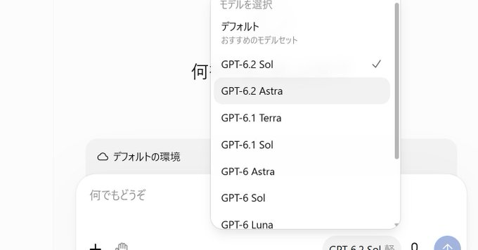
OpenAI、「GPT-6.2」の「Astra」と「Sol」を公開 AI自己改善能力は初の「High」に
$ cat /etc/almalinux-release
AlmaLinux release 9.9 (Chartreuse Bobcat)
スパイの境界線はどこ？ NVIDIAジェンスン・フアンCEO電撃辞任が暴いた政権のホンネ
NVIDIAジェンスン・フアンCEOの辞任劇とスパイ疑惑の背景にある、トランプ政権の対中政策や内部対立の実態とは
スパイの境界線はどこ？ NVIDIAジェンスン・フアンCEO電撃辞任が暴いた政権のホンネ | ギズモード・ジャパン
今日のぼくさく、琉球バス交通の運転手になりたいとな？その思いを持ったまま大人になってほしいなぁ。 #アップ738
地銀に迫る預金不足、預貸率8割超 都市部への融資拡大でゆがみも

地銀に迫る預金不足、預貸率8割超 都市部への融資拡大でゆがみも
良品計画、株主優待を紙のクーポンに 不正アクセス受け電子から変更
良品計画、株主優待を紙のクーポンに 不正アクセス受け電子から変更
色々とヤバいことになってるか？ 自治労とか教員組合が弱体化してそこから資金が上がってこないとかもありそう。
沖縄タイムス
@theokinawatimes
沖縄平和運動センター、辺野古・シュワブ前の座り込みに今後参加せず 「継続は困難と結論」
https://okinawatimes.co.jp/articles/-/1967689…
高速道路のような私道のあるところ。
だじゅうる＠マスコットブログ
@dajudajudaju
#とある市 セレクション
過去の出題の中でおそらく一番、図内に駅が多い地図

天城サリーさんって、超てんちゃんで知ったんだけど、実はATRIの頃から聴いていたんですね。

★『YESとNOの間に』デジタル配信中！https://227.lnk.to/YestoNonoAidani★各サイトにて配信CP実...
youtube.com
実はライブ行ったりしてました、、kobayaさんにナナニジについて熱弁してしまった事も😅
エンドスさんがリポスト
簗和生について、TBSラジオ国会担当澤田大樹記者「(大臣辞めた後)国会に来てないし、本会議には一度も出席してない」
うわー、知ってたけど酷いな。
石破茂や小渕優子らの採決退席より、こっちの方がよっぽど問題だろ。
自民党総裁で、簗和生を大臣に任命した高市早苗の責任も重いと思うが。
#ss954
FFさんがやってたので試してみた。
あぶくま洞とかリカちゃんの博物館のあるところだよねぇ。元気が出るテレビのエンペラー吉田ってこの辺だったような（笑）
わたしの運命の町は【福島県 田村市】でした。あなたは？
#運命の町当てます #田村市
作者→@vyaPudzd1E54661

わたしの運命の町は「福島県 田村市」
貝さんさんさんがリポスト

日経平均、米株安が重荷 NVIDIA株の勢い焦点に（先読み株式相場）

日経平均、米株安が重荷 NVIDIA株の勢い焦点に（先読み株式相場）
貝さんさんさんがリポスト
アリ&セイラン💐
イラストの秘密③ : 故人は髪の色が黒い
ミミの髪色は2種類で描いてもらいました🙉
#きみ死ぬアニメ

つば二郎@きいちゃんすこすこ侍さんがリポスト
Xの利用を再開いたしました！🍀
詳細につきましては、YouTubeの方に掲載させていただきました。数ヶ月ほど大変ご心配をおかけ致しましたが、引き続き何卒よろしくお願いいたします。⋆˙⟡

𝙎𝙚𝙚𝙠𝙞𝙣𝙜 𝙙𝙧𝙚𝙖𝙢𝙨 𝙞𝙣 𝙗𝙞𝙨𝙝ō𝙟𝙤 𝙜𝙖𝙢𝙚𝙨!
youtube.com
『Phasmophobia』Unity 6移行によるライティング改善など含む大型アプデ「Resonance」11月24日配信！ダウジングロッドも登場
https://gamespark.jp/article/2026/11/18/175002.html?utm_source=twitter&utm_medium=social&utm_content=tweet…
輪ゴムは卒業。ダイソーのキャップで粉物の袋をワンタッチ開閉できるからね
ダイソーの袋キャップ（計量カップ付）を使えば、粉物の開封や密閉がワンタッチで完了します。輪ゴムを使うストレスが減り、料理が快適になります。
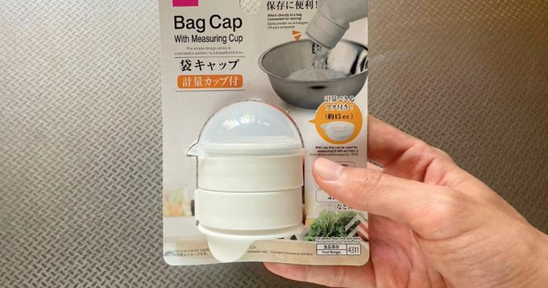
輪ゴムは卒業。ダイソーのキャップで粉物の袋をワンタッチ開閉できるからね | ギズモード・ジャパン
自分の知り合いは共産党の連中の市民運動に変に首を突っ込んで人間関係に救いようのない亀裂が入った。その知り合いに共産党には関わるなよとストレートに言ったんで距離寘かれてるけど。
こんや
@kyonoyoru88
なんでみんな共産党アレルギーなんだ😭
よくわからないけどみんな反射で「共産党は‥」って言う。
何その空気。皆んななんかされたの？
普通に良いこと言ってる
護憲だし、応援している🇯🇵

住友商事、タイの二輪向け金融子会社売却 三菱UFJ銀傘下の同業に

住友商事、タイの二輪向け金融子会社売却 三菱UFJ銀傘下の同業に
Torishima / INTPさんがリポスト
日本の音声AI市場で、この15日間に起きたこと。
11月2日、SalesforceがCrestaの買収で最終契約を締結。
11月11日、Crestaが日本での事業展開を発表。Kotoba Technologiesの日本語音声技術を自社製品に組み込む計画を公表。
11月17日、そのKotobaをElevenLabsが買収することで合意。
Crestaが日本で組むと発表した相手を、わずか6日後に、電話応対AIで競うElevenLabsが買収すると発表しました。しかも、Kotobaの技術はすでにSalesforceの「Agentforce Voice」の日本語対応にも使われています。買収後のCrestaとの協業がどうなるかは、まだ公表されていません。
ElevenLabsは、自然な声を生成する技術から企業の電話応対AIに事業を広げた米国の成長企業です。年間経常収益（ARR）は2025年末の3.5億ドルから4カ月で5億ドル超。9月公表の未上場株取引での評価額は220億ドルです。
SierraはOPERA TECHの買収を足がかりに日本へ入り、その後ソフトバンクと組みました。ElevenLabsは日本法人を先に設立し、今回、日本語の音声認識・合成技術と東京の開発チームを迎えます。入り方は違いますが、どちらも日本で通用する製品を届けるまでの時間を、買収で縮めようとしているように見えます。
弊社投資先のRevCommやRightTouchもこの競争の渦中にいます。日本の大企業にも、意思決定の速さが問われます。協業を検討している間に、有力な技術やチームが海外企業の傘下に入る。先行事例が増えるほど、後から来る海外勢は、誰と組めば日本で事業が進むかを学び、次の一手を早く打てるようになります。
以前から、米国の急成長AI企業と日本のスタートアップの間で、資本提携やM&Aが本格化すると考えてきました。この15日間を見ると、その時期は思っていたより早く来ているのかもしれません。
若手医師が美容医療に向かってしまう「直美」問題について、社会の多様性とリソースの配分の視点から考えました。↓
多様性の視点から考える「直美」の問題 | 佐々木俊尚「毎朝の思考」/ Voicy - 音声プラットフォーム

多様性の視点から考える「直美」の問題 | 佐々木俊尚「毎朝の思考」/ Voicy - 音声プラットフォーム
感情のないロボだけどピクセルアートだけむしょうに上手いのなんなんだ
まつにぃ
@yugen_matuni
え、GPT6.2 Solのピクセルアートめっちゃ好きだけどな。
なんか歪な進化をしているのかな？
めちゃめちゃ綺麗に動いているんだけど。
めっちゃうまい気がする。 x.com/yugen_matuni/s…
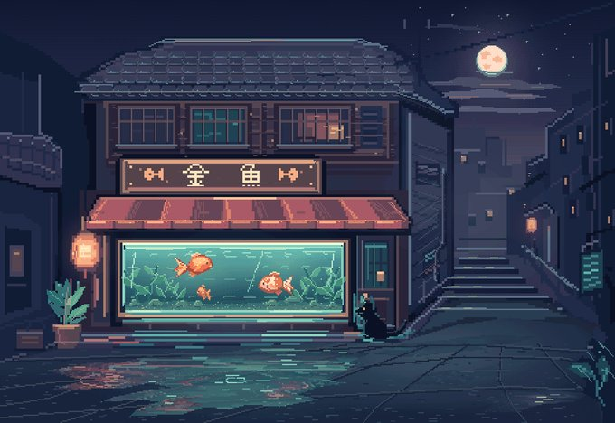
Torishima / INTPさんがリポスト
え、GPT6.2 Solのピクセルアートめっちゃ好きだけどな。
なんか歪な進化をしているのかな？
めちゃめちゃ綺麗に動いているんだけど。
めっちゃうまい気がする。
まつにぃ
@yugen_matuni
GPT6.2きたけど、めっちゃみんな事前ユーザー組が酷評しているな....
まあ触ればわかる。
やってみよう。 x.com/yugen_matuni/s…
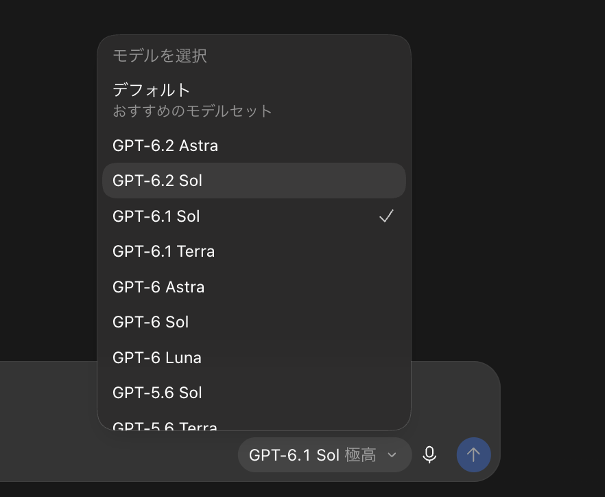
Torishima / INTPさんがリポスト
6.2 SolとAstraが出ました。
これらのモデルは素晴らしいことができるうえ、トークンの効率も非常に高く、皆さんに大きな価値を感じていただけることを願っています。
特に、6.2 Sol ultrafastは、皆さんにきっと気に入っていただけると思います。
Tibo
@thsottiaux
GPT-6.2 Sol & Astra が*ついに*登場しました。GPT-6.2 Sol については、ultrafast を Pro 200 プランにも拡張しました。これは、私にとって日常のほとんどのことに対する定番モデルです。 x.com/OpenAI/status/…
「反戦サッカー部」という謎の盛り上がりですが、東大の鳥海不二夫先生による身も蓋もない分析が。「反戦サッカー部として反戦を訴えるポストを拡散した多くのアカウントがサッカー関連のアカウントをフォローしていない」「サッカーファンを中心に広がったというよりも、日本共産党の公式アカウントをフォローしている人々の間で、特に支持され、拡散された運動である可能性が高そう」↓
「反戦サッカー部」として反戦を訴えるポストを拡散した多くのアカウントがサッカー関連のアカウントをフォローしていない
反戦サッカー部はサッカーファンなのか（鳥海不二夫） - エキスパート - Yahoo!ニュース
Torishima / INTPさんがリポスト
うーん、これ何か変わったか…？今のところ過去イチで何の変化も感じないな…同じモデルだと言われてもわからない…タスクを途中で投げ出す謎の癖で進まなくなる。性能が上がっていたとしてもそもそもタスクを実行しないんじゃ判断つかないし使い物にならないな…加速どころか線形にも向上していない…
sabakichi
@knshtyk
GPT-6.2 Sol、今のところ相変わらずポンコツです…
へえ！どんな製品が出てくるのか、とりあえず期待。「ブルームバーグの新たな報道によると、アップルはスマートグラスを「2027年の主力新製品」に据えたい考えという」↓
アップルのスマートグラス、「2027年WWDC」で発表へ──フラッグシップ製品に据える考え | Forbes JAPAN 公式サイト（フォーブス ジャパン）
アップルのスマートグラス、「2027年WWDC」で発表へ──フラッグシップ製品に据える考え | Forbes JAPAN 公式サイト（フォーブス ジャパン）
MICHEE-N（ミッチー・Ｎ）さんがリポスト
沖縄県知事選で散々現職が叩かれた道路標識の老朽化問題🚸
古謝新知事誕生から僅か２ヶ月のスピード対応で予算額まで計上👏👏👏
やればできるじゃないですか…
前職の２期8年がいかにバランスの悪い県政運営だったのか改めて実感w
リーダー選びでここまで政治が変わります🗳️
選挙に行こう❗️
選挙で🇯🇵を前に🌈
これはまさに。「観光の対象が、名所やレストランからスーパー・薬局・美容専門店へと広がっている」。観光客のためだけにつくられた観光コンテンツではなく、地元の人の暮らしの一端に触れられる旅が求められるようになってきているのだと思う。そして皆さん、長野に来たらスーパーツルヤに行きましょう。↓
地元スーパーが「観光名所」になる時代へ 旅行者の約8割が楽しむ、観光の新たなトレンドとは | AMP[アンプ] - 人生の豊かさを生む瞬間を情報でつくりだす新世代向けビジネスメディア

地元スーパーが「観光名所」になる時代へ 旅行者の約8割が楽しむ、観光の新たなトレンドとは | AMP[アンプ] - 人生の豊かさを生む瞬間を情報でつくりだす新世代向けビジネスメディア
愛子さま、シンガポールに 皇室の公式訪問は2006年の上皇ご夫妻以来
愛子さま、シンガポールに 皇室の公式訪問は06年の上皇ご夫妻以来
ウェイモがウーバーとの独占契約を解消し、自前の配車アプリに集約。ロボタクシーの支配的プラットフォームは自動運転AIではなく、ユーザーのデータを集められる運行管理システムということでしょう。↓
ウェイモはなぜ『自前アプリ』にこだわるのか 共同CEOが語った「Uber経由」への不満と反論 | 自動運転ラボ

ウェイモはなぜ『自前アプリ』にこだわるのか 共同CEOが語った「Uber経由」への不満と反論 | 自動運転ラボ
ジャングリア沖縄の一番の敗因って『誇大広告』だよな

ジャングリア沖縄の一番の敗因って『誇大広告』だよな : ハムスター速報
町内会に入らないとゴミが出せない問題。これは私も福井県美浜町で経験した。地元の言い分もわかるけど、いっぽうでゴミを出すというのは生活の基本中の基本なので「出せない」は厳しすぎる。双方が折り合いを付ける必要はあると思います。↓
【ニュースto】町内会に入らないとゴミが出せない？任意加入で「ゴミを捨てる権利ある」はずが…訴訟になったケースも！（読売テレビ） - Yahoo!ニュース

【ニュースto】町内会に入らないとゴミが出せない？任意加入で「ゴミを捨てる権利ある」はずが…訴訟になったケースも！（読売テレビ） - Yahoo!ニュース
欧州では明白な戦争は始まっていないが、サイバー攻撃や世論撹乱、小規模なテロ的攻撃などですでに戦端は開いているという認識も出てきてますね。日本でも危機に対応した社会体制づくりをという政府の方針。「ウクライナでは、戦闘の一環で民間企業がサイバー攻撃を受けたり、重要インフラ施設が攻撃を受けたりし、国民生活に大きな影響が出ている。政府は、こうした国際情勢などを受けて、「有事と平時」や「軍事と非軍事」の境目があいまいになっていると分析している」↓
有事の備え「社会全体で」 協力企業へ補償も 安保3文書で政府方針：朝日新聞

有事の備え「社会全体で」 協力企業へ補償も 安保3文書で政府方針：朝日新聞
すごい！お見事！U2とイルカが美しく融合してる。動画4分。↓
U2「With Or Without You」とイルカ「なごり雪」をマッシュアップしました

U2 - 'With Or Without You' (Official Music Video)https://youtu.be/...
youtube.com
NVIDIAの新ロボットAI、まるで新人研修。先輩の仕事を見て覚えます
NVIDIAが発表したロボット向け新AI「GR00T 2」の解説記事です。人間の作業動画を学習して多様なロボットに仕事を教える仕組みや、実演による高い成功率について分かりやすく紹介します。
NVIDIAの新ロボットAI、まるで新人研修。先輩の仕事を見て覚えます | ギズモード・ジャパン
楽天証券も不正アクセス。資産を守るために確認しておきたい設定
楽天証券の不正アクセス・情報漏えい懸念を受け、楽天証券ユーザーの筆者が、大切な資産を守るために、今すぐ確認・見直すべきセキュリティ設定や取引制限の方法を説明します。
楽天証券の不正アクセス・情報漏えい懸念を受け、楽天証券ユーザーの筆者が、大切な資産を守るために、今すぐ確認・見直すべきセキュリティ設定や取引制限の方法を説明します。
gizmodo.jp
自炊料理家、山口祐加さんとのポッドキャスト。冬が近づいてきたので、今週は美味しい根菜の食べ方についてあれこれを話しています。↓

中野区でコンカフェ嬢を刺した弱おじ、事件当日に「きもい、今日はつまらなかった」と言われていた #酷い話・事件
中野区でコンカフェ嬢を刺した弱おじ、事件当日に「きもい、今日はつまらなかった」と言われていた - オレ的ゲーム速報@刃の記事ページ
jin115.com
おはようございます。今日は11月18日、水曜日。
ホットケーキ（880円）に90円足すだけでこうなります
970円の小倉ホットケーキ→注文したら…… “届いたもの”が話題「これが世にいう逆詐欺」「なんですかこれ！」「けしからん」
https://nlab.itmedia.co.jp/cont/articles/4095228/…
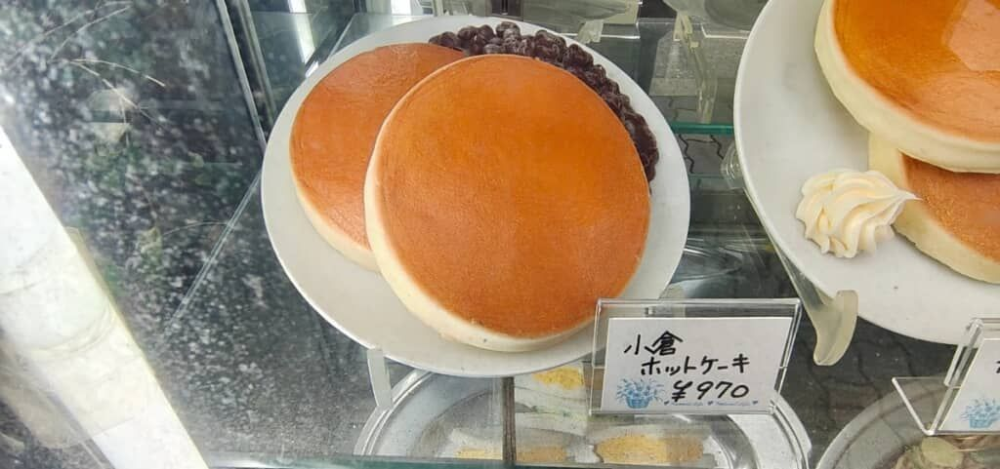
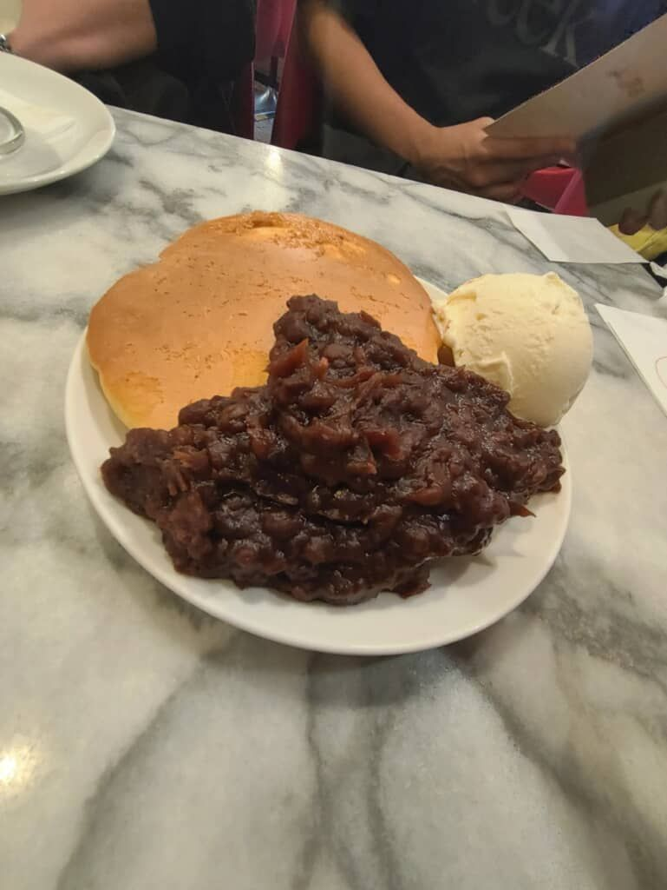
葉物野菜の輸入が急増、レタスは前年比24倍 長雨で不作
https://nikkei.com/article/DGXZQOUB268U40W6A021C2000000/?n_cid=SNSTW005&n_tw=1794886853…
葉物野菜は鮮度の落ちが早いことから、平時は国産で消費の大部分がまかなわれています。ただ、品薄と価格高騰から中国産などで手当てする動きが広がっています。

葉物野菜の輸入急増、レタス前年の24倍 国産不作受け外食が代用
今日も一日

サバクラ『ソーラーパンク』12月アプデで移動型の商人島追加、飛行船に複数人搭乗可能に―椅子に座る機能や要望1位の「スマートクラフトテーブル」も実装
https://gamespark.jp/article/2026/11/18/175001.html?utm_source=twitter&utm_medium=social&utm_content=tweet…
他プレイヤーが飛行船に搭乗できたり、椅子に座ることも可能になります。周囲のチェストから材料を自動参照するスマートクラフトテーブルも追加！
@Solarpunk_Game

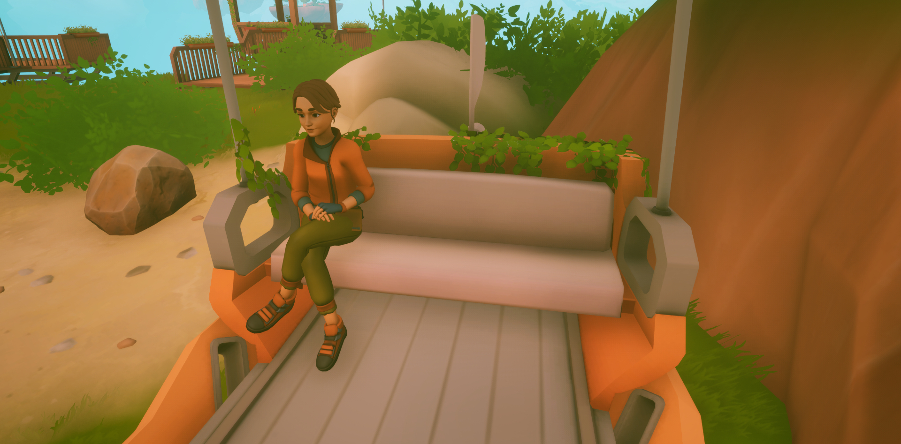
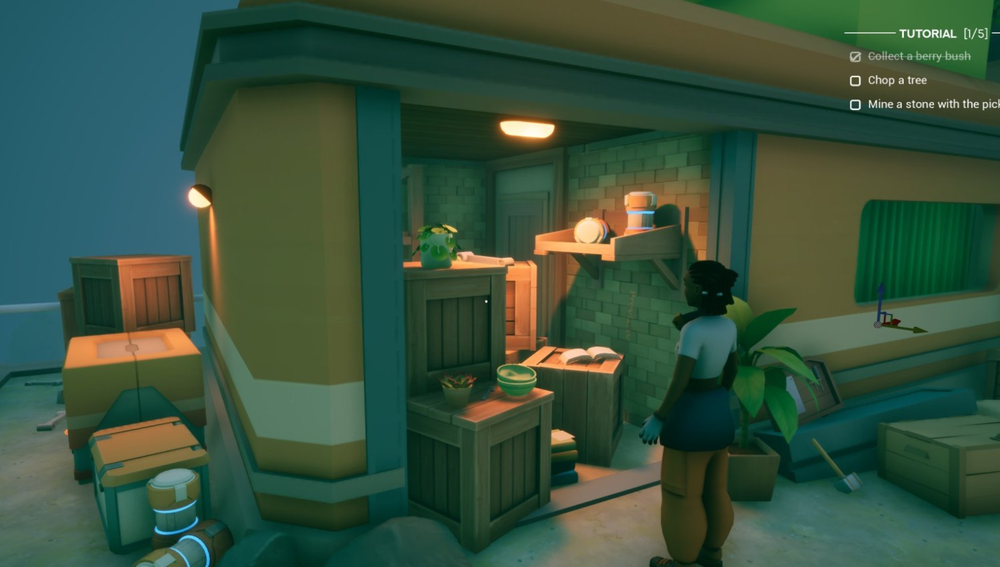

NVIDIAのフアン前CEO、退任後初のX投稿 「取締役会が望むならCEOに復帰したい」
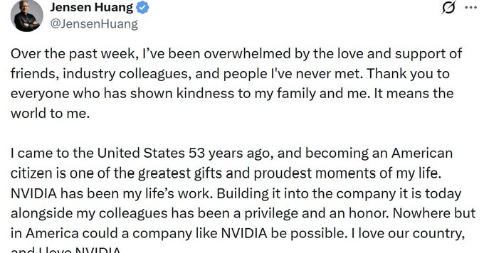
NVIDIAのフアン前CEO、退任後初のX投稿 「取締役会が望むならCEOに復帰したい」
NVIDIA、11〜1月売上高9割増 暫定CEOがファン氏辞任問題で釈明へ

NVIDIA、11〜1月売上高9割増 暫定CEOがファン氏辞任問題で釈明へ
高市首相を「呼び捨て」にした中国 原潜とNVIDIAを結ぶ糸
https://nikkei.com/article/DGXZQODK1246E0S6A111C2000000/?n_cid=SNSTW005&n_tw=1794915053…
かつてソ連から「君たちに原潜は無理だ」と突き放された中国が、いまや日本の原潜保有をけん制する側に。呼び捨てには、そんな立場の逆転が生み出した優越感も透けています。

高市首相を「呼び捨て」にした中国 原潜とNVIDIAを結ぶ糸
貝さんさんさんがリポスト
NYダウ続落で848ドル安 NVIDIA決算前に警戒、テック株売り続く

NYダウ続落で848ドル安 NVIDIA決算前に警戒、テック株売り続く
仕事に遅刻したら生き埋めに...。巨大採掘機を操縦し地底を進むホラーゲーム『Grindworm』2027年1月18日リリース！
https://gamespark.jp/article/2026/11/18/175000.html?utm_source=twitter&utm_medium=social&utm_content=tweet…

PETボトルの「ボトルtoボトル」比率が4割に
https://nikkei.com/article/DGXZQOUC1775T0X11C26A1000000/?n_cid=SNSTW005&n_tw=1794917824…
使用済みペットボトルを再びペットボトルの原料に。清涼飲料業界は30年度までに50％とする目標を掲げる一方、品質面に限界があり、食品トレーや繊維などの用途も含め国内循環を進めます。

PETボトルの「ボトルtoボトル」比率が4割に 設備増強など寄与
置き配、玄関前に荷物で「配達完了」 トラブル相次ぎ国交省が指針
https://nikkei.com/article/DGXZQOUA122I00S6A111C2000000/?n_cid=SNSTW005&n_tw=1794950943…
たとえば宅配ボックスの場合は事業者がボックスに入れた時点で完了となります。
事業者には荷物の写真を撮り、利用者に通知するなど証拠を残す対応を促します。
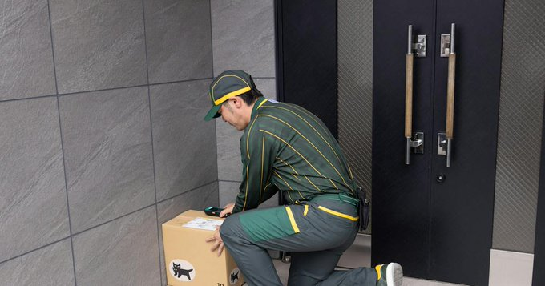
置き配、玄関前に荷物で「配達完了」 トラブル相次ぎ国交省が指針
Masanori Kusunoki / 楠 正憲さんがリポスト
😰マジかこれ。Zoom、BBC、CNN、全部訪問してるよ…。サイト訪問しただけでやられるって😰＞Optimizelyのサプライチェーン攻撃で Zoom、BBC、CNNなど178組織のサイトが影響を受け、訪問者に暗号資産アドレスすり替えやカード情報窃取、iOS脆弱性攻撃が行われたらしい。
攻撃はOptimizelyの「Project JavaScript」欄に不正コードを注入したもので、サイト本体ではなく信頼された外部スクリプトが汚染され、Report URIのScott Helme氏により188件確認されたとのこと。
金森重樹@ダイエットonlineサロン
@ShigekiKanamori
【速報！サイトに訪問した人に被害が出ます】
有名サイトを開いただけで狙われる事態が起きました
Zoom、BBC、CNN、HSBCなど178組織のサイトで、16日に不正なプログラムが訪問者へ配信されていました
日本時間16日昼〜17日朝の出来事で、被害が見えてくるのはこれからかもしれません
マイクロソフトCEO、メール大規模障害「責任重く受け止めている」
マイクロソフトCEO、メール大規模障害「責任重く受け止めている」
米アンソロピック、IPO価格80ドル超に引き上げ検討 投資家需要強く

米アンソロピック、IPO価格80ドル超に引き上げ検討 投資家需要強く
日本経済新聞 電子版（日経電子版）さんがリポスト
森ビル4〜9月期、純利益11%減 麻布台ヒルズの分譲住宅が反動
決算:森ビル4〜9月期、純利益11%減 麻布台ヒルズの分譲住宅が反動
スパイ疑惑美女がアイドル化 中国ネット世論は「よくやった」と称賛
https://nikkei.com/article/DGXZQOCD160IE0W6A111C2000000/?n_cid=SNSTW005&n_tw=1794948647…
謎だらけの女性は出身地・中国でどうみられているのか。
「ジェンスン・ファンの巨大な会社を傾けることが出来たのは、単に美人だからではない。チャンスに飛び込み、大きなことを仕掛ける度胸があったからこそだ」
スパイ疑惑美女のアリス・ファン氏がアイドル化 中国のネット世論は「よくやった」と称賛
エンドスさんがリポスト
肩ポンポンは上司が部下にするやつやん
他国のトップに失礼だよ！
#高市早苗は常識がない
あお
@yuritotsubasa37
日本・フィリピン首脳会談🇯🇵🇵🇭
冒頭で、前回の夕食会の時のカラオケセッションの話から入るマルコス大統領wwwやはり音楽は最強のコミュニケーションツールですねw
高市総理
「私たちの包括的・戦略的パートナーシップに基づいて、この後の会談で二国間関係を一層力強いものにして参りましょう。」

エンドスさんがリポスト
せっかく、マルコス大統領が
「前回のディナーでのカラオケセッションは楽しかった！」
言うてくれてるのに、全く聴き取れてないから、即答出来ないどころか、カラオケには一切触れずに官僚の原稿で返す高市早苗。
こんなにゆっくり喋っているのに、これ位も聴き取られへんのかいな、元・米連邦議会立法調査官やのに😑
https://x.com/kantei/status/2122301892860706841/video/1…
Torishima / INTPさんがリポスト
Speech-to-Speech Full-duplexと、Speech-to-Speech Half-Duplexでは、ユーザーの体験は全く異なるものになります
Full-duplexはまだ知性や安定性に課題がありますが、いずれこのモデルが社会で最も使われるモデルになると考えています
Faraz Siddiqi
@farazmsiddiqi
音声対音声（S2S）、カスケード、ハーフデュプレックス、フルデュプレックスのVoice AIモデルの違いと、なぜその構成が重要なのかを説明します。

Torishima / INTPさんがリポスト
昨日6.2が出せない理由はこれこれこうみたいなツイートを見て「へぇー」となってたけど、普通に出てきて笑ってしまった。
Astraはスライドや表計算、テキストがAI臭くない仕上がりになったのが売りで、テンプレのスクショを渡すだけでフォントサイズまで合わせてくるらしい。Claude Fable 5.2より高得点なのに、コストは5%程度に抑えたとのこと。
普段使い用のSolはコーディング性能でAstraとほぼ互角でコストは5分の1と謳ってる（こいつがopus5.5に対抗できるかOpenAIの今後を占いそう）
Plusプラン以上ならChatGPTとCodex両方で使えるとのこと。創作的な部分がどうかが気になるけどどう試したもんかな
Torishima / INTPさんがリポスト
【速報】GPT6.2 astraとsolがいきなり発表

Introducing GPT-6.2 Astra and Sol
やっぱどこまで行っても GPT って賢いコミュ障アスペから脱出できてないんだよな・・・いい加減 EQ を高めて欲しいんだけどトークン効率とか RL でそっちばっかり追求してるからアライメント失敗してんじゃね？感がある
ニケちゃん
@tegnike
T3 Codeの開発者が早速めちゃくちゃ言ってて草
GPTの嫌な部分はそのまま残ってる感じだなあ
以下要約↓
結論: 開発の仕事ならOpus 5.5を選ぶ
良いところ
- レビューが得意で、他のモデルが見逃す問題まで見つける
- x.com/theo/status/21…
Torishima / INTPさんがリポスト
T3 Codeの開発者が早速めちゃくちゃ言ってて草
GPTの嫌な部分はそのまま残ってる感じだなあ
以下要約↓
結論: 開発の仕事ならOpus 5.5を選ぶ
良いところ
- レビューが得意で、他のモデルが見逃す問題まで見つける
- たまに本当に新しい解決策を出す（新しいリバースプロキシで月2.5万ドル浮きそう、とのこと）
- 3Dやゲーム作りは世界トップクラス
- コンピュータ操作がすごい
- コードの質がかなり上がった
- サブエージェントへの指示文がうまい
嫌なところ
- 意味不明な質問で勝手に止まる：「Outer Wildsの新ステージを作って」と頼んだら、2時間後に「r24のクリップは24_g521.mp4と24_p11.mp4のどっちに保存する？」と聞いてきて止まった。止まっていないか見張るために、別のエージェントを定期実行で回す羽目になった。
- 説明が読めない：細かすぎて、全体像がまったく伝わらない。最後にOpus 5.5で要約し直すのが習慣になった。「なんで遅いの？」と聞くと、Astraはpnpmの中身を4段落語り、Opusは「SSDが遅いから」と一言で答えた。
- 同じところをぐるぐる回って進まない：TypeScriptのコンパイラをRustで書き直すプロジェクトでは、Opusは約2万ドル、2週間で完成させた。Astraは7日回して改善ゼロで、コンパイラは逆に56%遅くなった。指示を変えて4日追加しても変化ゼロ。
- 発想がありきたりになりがち：Benと別々のゲーム・別々の指示でステージを作らせたら、2人とも水と音楽と鐘がテーマの「bellwether」という同じ名前になった。
Theoの予想
- 1日目：すごい一発生成がXで大バズり
- 2日目：使用量の多さとOpusより進まないことに気づき、手のひらが返り始める
- 5日目：「Solの方が良くない？」「もう劣化した？」系の投稿がバズる
- 14日目：ほぼ忘れられる
すごく賢いけど、実際のプロジェクトで一緒に働くのはしんどい。
Theo - t3.gg
@theo
Torishima / INTPさんがリポスト
Astra 6.2。3Dが得意ってことだったんで、
Three.jsを使ったお前のセンスを全開で発揮出来るMVデモを作ってくれ!!
って言って上がってきたのがこれ。
最初羽が檻を貫通してたのが気になりすぎてそこだけ直した。
丸投げした時のセンス自体はそこまで高くないけど、実際の作業力とか描画力はかなり高い印象ですね。
確かに、難しいことはしてるよね。
曲線があったり、羽の重なりがあったり、一部光ったり。難しいオブジェクトを描画してるっていうのは確かにそう。
プロンプトをしっかり作り込んであげたり、Fable 5.2と協業したり、Opus 5.5と協業したりすれば、かなり使う価値が出てきたかなっていう印象ですね。
そしてなぜかAIは蝶よりも蛾の方が好き。

StudioYebisu
@studio_yebisu
ドパガキ向けAstra-6.2 ＆ Sol-6.2解説
・かなりコスパが良くなったよ!!!
・長時間のタスクをやるのが今一番上手いよ!!
・3Dが上手いよ!!
・科学と法律とサイバーに強くなったけど、どうでもいいね!!
・Sol 6.2は更に安くなったよ!!普段使いにぴったりネ!!
■ネガ
・Fable5.2より弱いよ!! x.com/studio_yebisu/…
Torishima / INTPさんがリポスト
カドカワは本気でガメラを復活させるつもりだったのです。で、壮絶な特別映像を作ったのですが、あまりにもリキを入れ過ぎて、この特別映像に本編用の予算の半分くらいを使ってしまったのです。結局、本編のガメラは幻に。これはウソのような本当のお話です。
せがだいすきー
@GtiTcr
生誕50周年の時に特別映像作って復活の機運を高めようとしたものの思ったほどの反応がえられなかったのだろうか、結局あれは何だったんだ？という謎だけが残ったわな。てかもうこれから10年経っているのがな…。 x.com/great_journey_…
Torishima / INTPさんがリポスト
『GROTESQQQUE-グロテスク-』、キービジュアルは3作からそれぞれエリー、名無し、アヤメが描かれているけど、劇中での語り部は謙人さん、ステラ、シオンになっているところが面白いと思う。Q2は群像劇の様相を呈しているから場面場面によって視点が変わるものの、一応ステラということでいいのかな。
Torishima / INTPさんがリポスト
思ったよりも普通になった事について延々と考えている。
SmallKino
@SmallKino_
これです。アニメ風の色付けを施した、50秒版のBad Apple!。すべて #MiniMaxH3 で制作しました。
完成させるつもりはありませんが、ローカルの動画生成AIで何ができるかを示す良い例です。本物の東方ファンなら、きっとこの技術を活用するでしょう。
元ジャンポケ斉藤慎二被告、懲役4年の判決に即日控訴「一貫して無罪主張」 #芸能・スポーツ
元ジャンポケ斉藤慎二被告、懲役4年の判決に即日控訴「一貫して無罪主張」 - オレ的ゲーム速報@刃の記事ページ
jin115.com
「炊飯器よりオルカン」、NISA貧乏はつらくない？
https://nikkei.com/article/DGXZQOUB269SE0W6A021C2000000/?n_cid=SNSTW005&n_tw=1794948322…
「娯楽を見直せば固定費は減らせる。節約は歯磨きのように自然な習慣になった」

「炊飯器よりオルカン」、NISA貧乏はつらくない？
『GTA6』が「TGA2026」最多ノミネート作品に。パブリッシャートップは任天堂で延べ12作品
https://gamespark.jp/article/2026/11/18/174999.html?utm_source=twitter&utm_medium=social&utm_content=tweet…
『GTA6』は8部門でノミネートされています。

GPT-6.2 、本当に Anthropic の上場前にどうにか強い一手を打とうとしたけど安全性対策が全然間に合わなくて出した苦し紛れの一手って感じがすごい
あとリセットくれないし・・・
StudioYebisu
@studio_yebisu
GPT-6.2でましたが、誤解を恐れずに言うと、
ClaudeとCodex、どちらか一つだけに課金するならClaudeで一旦FA。 x.com/studio_yebisu/…
Torishima / INTPさんがリポスト
GPT-6.2でましたが、誤解を恐れずに言うと、
ClaudeとCodex、どちらか一つだけに課金するならClaudeで一旦FA。
明日のアンソロピック上場時にFable5.5が出る説もあるんですが、それを全力で妨害するレベルで勢力図を塗り替えるモデルを仕上げようと頑張ったけど、安全性対策が間に合わなかったから抑え気味のモデル出した感（個人の所感）
もちろん両方使うと真価を発揮できるレベルで順当な真価をしてますが、どちらか…って言われるとって感じ
まぁモデル出るたびにハーネスまわり含めて色々乗り換える人が多数派ではないと思いますけどネ、
Codexのツールまわり含めた使いやすさは不動だし。
6.2 Astra は、「AI自己改善」の能力で High に達した初めての公開モデルって書いてあるので
OpenAIは次のモデルの方が期待出来る!!
一旦、Fable5.5とかGemini 4 の最上位モデルが出た時に話題そっちに持ってかれる希ガス
StudioYebisu
@studio_yebisu
GPT-6.2 Astra出ました!!
賢さで言うと、Fable5.2に3ポイント劣りますが、得意な領域が明確にあるのでAstraモデルを使う理由は一旦できたかなという感じ。
公式解説＆第三者評価の詳細解説します。
ちょっと期日に間に合わなかったので、一旦出した感も漂ってるんですけど…順当進化かと思います。 x.com/ArtificialAnly…
Torishima / INTPさんがリポスト
まほよ映画の全国400館規模の公開、上映規模だけで言えば新海誠作品(直近のすずめの戸締まりが全国420館での上映)と同規模の扱いなので東宝とアニプレが何を考えてそんな無茶なことをしてるのか全然わかんなくて怖い
Torishima / INTPさんがリポスト
GPT-6.2 Sol、今のところ相変わらずポンコツです…
178社のサイトに不正コード埋め込み EC支援悪用のサイバー攻撃発覚

178社のサイトに不正コード埋め込み EC支援悪用のサイバー攻撃発覚
#ソレヨリノ前奏詩 の聖地であるヴェルニー公園が改名らしい、、、


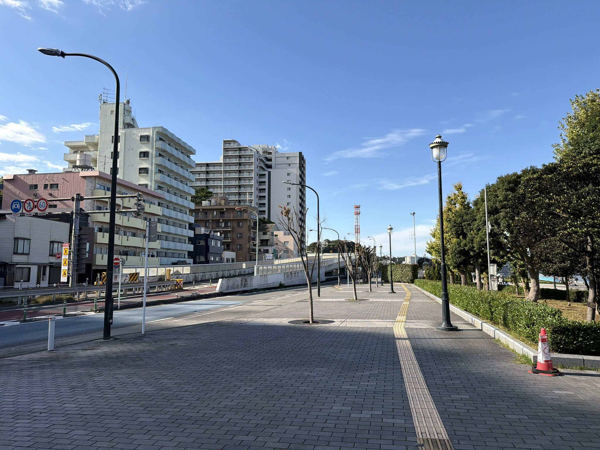
カナロコ by 神奈川新聞
@KanalocoLocal
【横須賀】「ヴェルニー・小栗公園」へ改称 ２７年「大河」主人公に合わせ
https://kanaloco.jp/news/government/article-1320046.html…
横須賀市は、ゆかりの小栗上野介忠順が主人公のNHK大河ドラマ「逆賊の幕臣」が来年1月から放送されることに合わせ、対岸に同製鉄所跡地を臨めるヴェルニー公園を改称する。
#逆賊の幕臣 #小栗忠順
Torishima / INTPさんがリポスト
／
「HELLO! MOVIE」にて
オーディオコメンタリー第1弾 配信決定📱
＼
⠀
〖 出演者 〗
#錦織敦史 監督
#市ノ瀬加那 （エリー役）
#南沙良 （ステラ役）
#井上和 （アヤメ役）
⠀
11月21日(土)より提供スタート！
映画と併せてお楽しみください⭐️
▼アプリダウンロードはこちら
https://hellomovie.info
▼詳細
https://movie-gtq123.com/news/?id=71718
『GROTESQQQUE-グロテスク-』
★公開中★
#錦織敦史 #GTQ123

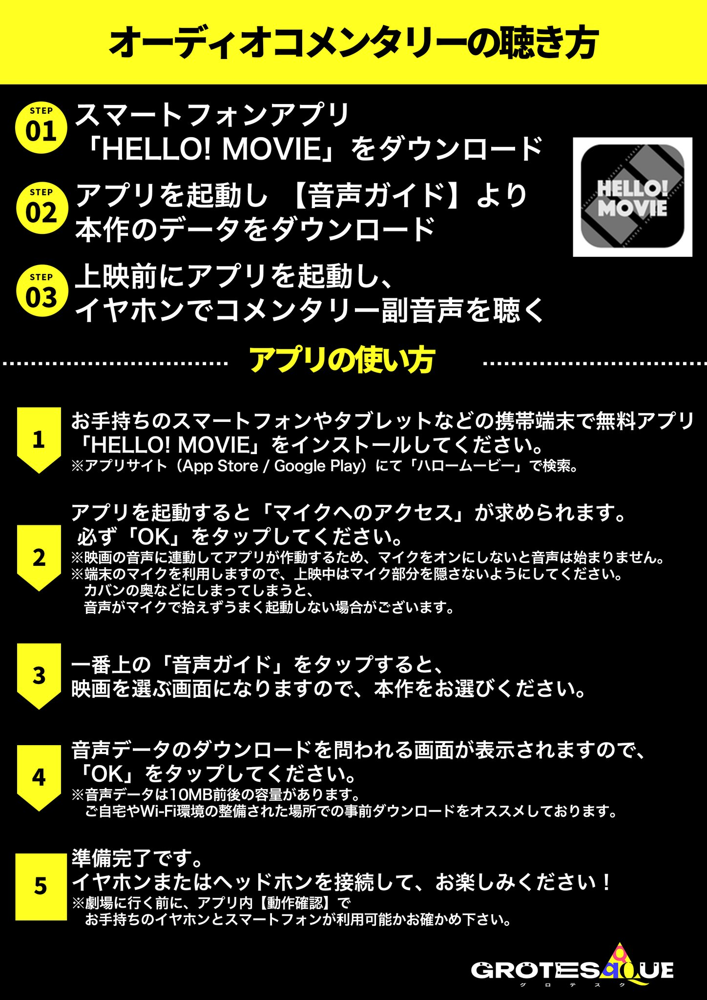
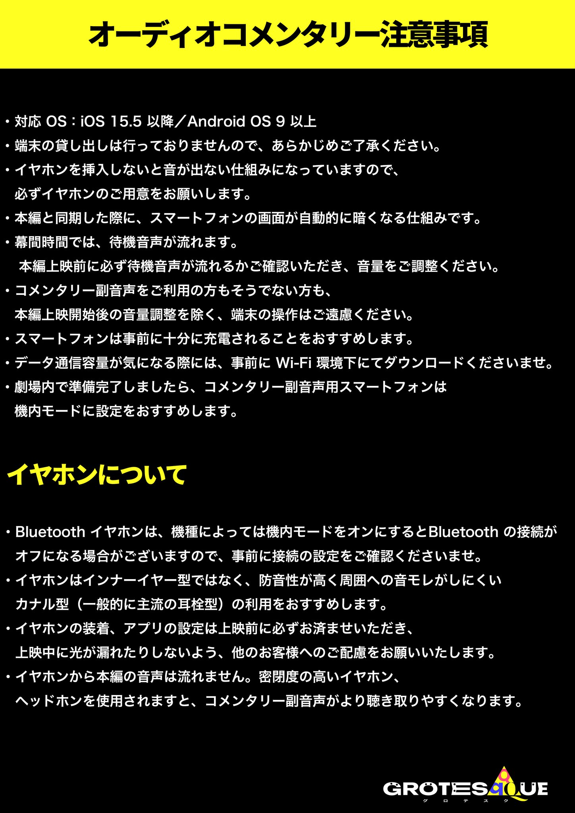
Torishima / INTPさんがリポスト
『花緑青が明ける日に』は人によっては生涯ベストアニメに入るクラスの名画なので、80年間に土に埋まってた花火を急に上げる長岡でのやつとかといっしょにするのはさすがに気の毒。
ほげろー
@hogeroh
見るどころか…花火作ってますよ…
Torishima / INTPさんがリポスト
…いや、だったら松竹アニメだって５億くらい行けるポテンシャルあるだろ！実直に作品内容を宣伝していれば…！
Torishima / INTPさんがリポスト
『我々は宇宙人』が、もっと潤沢に宣伝予算のあるメジャー公開アニメ映画の３倍集客しているの、明るさを感じる報せだ。
Torishima / INTPさんがリポスト
グロテスクは原作も無ければシリーズモノでもない、そしてアニオタは評価してるけど一般知名度が宮崎庵野細田新海の四皇レベルではない監督がほぼ好きなように作った、3つの独立した中編のオムニバス映画と言う、興収狙うにはかなり難しい条件で作られたアニメだったので興収苦戦は致し方がないですね
Torishima / INTPさんがリポスト
ドパガキ向けAstra-6.2 ＆ Sol-6.2解説
・かなりコスパが良くなったよ!!!
・長時間のタスクをやるのが今一番上手いよ!!
・3Dが上手いよ!!
・科学と法律とサイバーに強くなったけど、どうでもいいね!!
・Sol 6.2は更に安くなったよ!!普段使いにぴったりネ!!
■ネガ
・Fable5.2より弱いよ!!
・ちょっと安全性対策間に合いきってないよ!!
APIコスト20％OFF、キャッシュ60%OFFで長期タスクさせても安い。
これが一番デカイ気がする。ちょっと触ってみた感じ、確かに若干ズルをする傾向ある気もするけど、間違いなく良くはなってるね。
StudioYebisu
@studio_yebisu
GPT-6.2 Astra出ました!!
賢さで言うと、Fable5.2に3ポイント劣りますが、得意な領域が明確にあるのでAstraモデルを使う理由は一旦できたかなという感じ。
公式解説＆第三者評価の詳細解説します。
ちょっと期日に間に合わなかったので、一旦出した感も漂ってるんですけど…順当進化かと思います。 x.com/ArtificialAnly…
Torishima / INTPさんがリポスト
AnthropicのIPO直前にOpenAIがGPT-6.2リリースしたが、タイミングも中身も流石に狙い撃ち感がすごいな...w
・Astraも20%値下げ、Fable 5.2と同じ$8/$40
・実務ベンチでFable 5.2と上回り、トークン効率がよくコストも大幅に低い
・弱点だったデザイン周りの改善が前面に
Introducing GPT-6.2 Astra and Sol
ある意味サブスクを使い切らなきゃ・・・で強制的に触っていた節はあるのだが、そもそも動画生成自体非常に認知負荷が高く（開発とは全く別の頭に切り替えないといけない）、慣れるところまでいかずまだブラックボックスの使いこなし方が何もわかっていない
Torishima / INTP
@izutorishima
4月から惰性で Runway Unlimited を契約し続けているが、開発をやっていたら全然 Seedance とか触る時間なくて結局ガチャ回しまくるとか以外で元を取れたか怪しいな・・・（生成にそれなりに時間かかるのは結構ある）
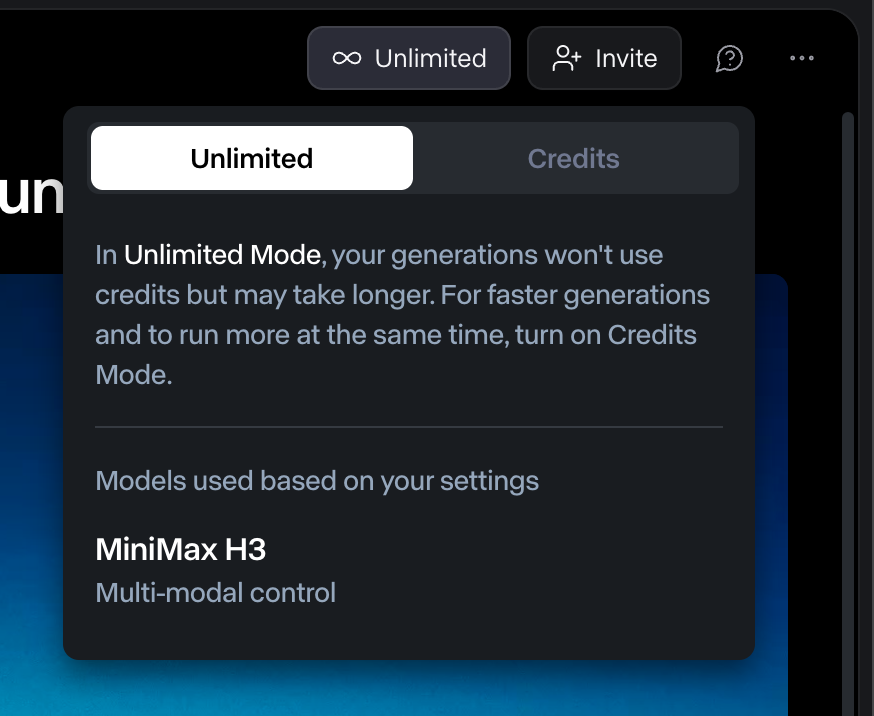
あれを使いこなしている人たちは本当になんなんだ、というくらい人智を超えたブラックボックスだと思う
Torishima / INTPさんがリポスト
Dreamina Seedance 2.5 Flash 現在利用可能！
より高速な生成、より少ないクレジット。
Dreamina Seedance 2.5 Flash を紹介 - 待ち時間が短く、高頻度作成と複数バージョンテスト向けの低コストで、バッチ生成と繰り返し改良に最適。Dreamina で今すぐお試しください！
🕐 期間限定オファー：
‣ ブラックフライデー特価—プランで最大98%オフ！
‣ ボーナス生成：最大500本の無料 Dreamina Seedance 2.5 動画をゲット。
‣ $0.29 からアップグレード；Seedance 2.5 Flash は720pで $0.0031/秒から；最高の Seedance 2.5 特価は $0.0068/秒から。
#DreaminaAI #DreaminaSeedance25Flash

4月から惰性で Runway Unlimited を契約し続けているが、開発をやっていたら全然 Seedance とか触る時間なくて結局ガチャ回しまくるとか以外で元を取れたか怪しいな・・・（生成にそれなりに時間かかるのは結構ある）
だいたい開発しなければならないもの、期待に応えるためにやらないといけないもの、とかで全てそっちに傾いてしまうのが悲しいところ
NVIDIA半導体、複数の「シンガポールルート」浮上 中国へ密輸疑惑

NVIDIA半導体、複数の「シンガポールルート」浮上 中国へ密輸疑惑
心のレゾナンスを見て、ディンゴとアンジェラの関係がどうなったのかを理解したあとで、このゲームをやると、そこに至るまでの過程が分かったりするのか？
「楽園追放」公式
@efp_official
━━━━━━━━━━━━━━
新作ゲーム
『楽園追放 -The Stellar Angel-』
発売まであと🔟日
━━━━━━━━━━━━━━
待ってやるってのも……“仁義”だよなぁ
🛒ご予約はこちらから
https://game.rakuen-tsuiho.com
#楽園追放
ゲームって時間軸はいつなんでしょうね?
ディンゴとアンジェラはあの後どうなったのか
前作の数年後とかの世界を見てみたかった気が
1年後らしいですよ。
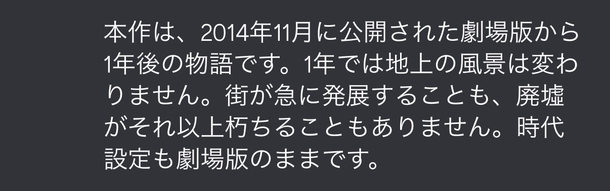
むくり。
Runwayを覗いたら Seedance 2.5 Flash とかいうのが出てきてて！？！？？！と思ったけど実質ほぼこっちで良い感じなんですかね？ 2.0 よりこれでも高いのかな
BytePlus
@BytePlusGlobal
試してみるアイデアを増やす。待ち時間を減らす。⚡
Dreamina Seedance 2.5 Flash を発表：フラッグシップの Seedance 2.5 に匹敵する結果を、ほぼ2倍の生成速度で実現。
720p のテキストからビデオ、画像からビデオ生成の場合、料金は1秒あたり USD 0.152 で、Seedance 2.5 より約34%安価です。
なんだかんだ今年２月に登場してからそろそろ１年になろうというのに Seedance 2.0 を完全に超えるモデルがあんま出てこないのもすごいな
Torishima / INTPさんがリポスト
僕はもうほぼSeedanceの2.0 / 2.5しか触りませんね〜！！
Torishima / INTPさんがリポスト
ですねえ…ただ、最近は結構プリビズでガチガチに固めて生成することも増えてきたので
もしかしたら？うまくいくかも？とか淡い期待をしていますww
Torishima / INTPさんがリポスト
おーSeedance 2.5 Flashか
34%コストダウンして生成速度2倍でクオリティ匹敵なら最高だけど、2.0 miniの時は結構クオリティ露骨に差が出てたからそこ次第だな〜
BytePlus
@BytePlusGlobal
試してみるアイデアを増やす。待ち時間を減らす。⚡
Dreamina Seedance 2.5 Flash を発表：フラッグシップの Seedance 2.5 に匹敵する結果を、ほぼ2倍の生成速度で実現。
720p のテキストからビデオ、画像からビデオ生成の場合、料金は1秒あたり USD 0.152 で、Seedance 2.5 より約34%安価です。
Torishima / INTPさんがリポスト
試してみるアイデアを増やす。待ち時間を減らす。⚡
Dreamina Seedance 2.5 Flash を発表：フラッグシップの Seedance 2.5 に匹敵する結果を、ほぼ2倍の生成速度で実現。
720p のテキストからビデオ、画像からビデオ生成の場合、料金は1秒あたり USD 0.152 で、Seedance 2.5 より約34%安価です。
API は11月15日（日）に BytePlus の ModelArk プラットフォームでローンチされます。
下のビデオをご覧ください。
エンドスさんがリポスト
政府が広報に起用したナオキマン、ガチで笑えへん件...
ナオキマン動画：2025年7月に大災害が起きるという噂（370万回再生）
気象庁「それ科学的根拠ないで」
ナオキマン動画：元WHO職員を名乗る人物の「がんは深呼吸で治る」説
政府広報「偽情報に気をつけよう」
ナオキマン動画：高市首相は天武天皇の末裔という説
内閣府「安全保障の広報、この人に頼もう」
→なんでやねん
ナオキマン「僕の口から出ることは全部オフィシャルになっちゃった」
政府「これは都市伝説ではない」
もう、わけわからん…
ホンダ、米アラバマ工場に740億円投資 HV向け新型エンジン増産

ホンダ、米アラバマ工場に740億円投資 HV向け新型エンジン増産
エンドスさんがリポスト
ファー、さっき日本政府が「接触の予定ある」と言った直後にコレ。まるっきりトランプの「妄言の発表→即座に相手が否定」の流れと同じ。マジで同じレベルまで落ちたなあ。
ガチで2年前と今で別の国だよコレ
ブルームバーグニュース
@BloombergJapan
ロシア大統領府、日本・カナダとAPECで接触の予定ないと明言－報道 https://bloomberg.com/jp/news/articles/2026-11-17/TON85DR24U8P00?taid=6afc4838cfe3490001f5b916&utm_campaign=trueanthem&utm_content=japan&utm_medium=social&utm_source=twitter…
エンドスさんがリポスト
そもそもナオキマン（米国生まれ）は、日本人の両親を持ちつつ、成年以降に日本国籍(血統権)よりも米国籍(生地権)を選んだ米国人――つまり日本にとっては外国人――である筈。日本政府の広報で外国人が日本の安全保障を語るのは、あまりにも奇異。⇒政府広報に陰謀論系配信者を起用
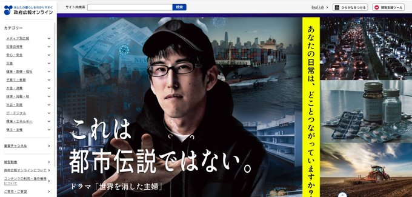
政府広報に陰謀論系配信者を起用 若年層へ発信、批判相次ぐ
エンドスさんがリポスト
英語が聞き取れないのは100歩譲っていいとして、なぜ終始ニヤつくんだ。。
ナミ
@hpadtgtmwtp
高市早苗はこのトランプ大統領へのインタビューの内容が分かってないね。。
「台湾問題は習近平氏が持ち出すだろう」や、「金正恩は来たがっている」、イラン問題についてもインタビュアーは聞いてるのに、高市早苗はニヤついてるだけ。。
トランプ大統領は日本にとって重要な事を話しています。。

エンドスさんがリポスト
高市早苗はこのトランプ大統領へのインタビューの内容が分かってないね。。
「台湾問題は習近平氏が持ち出すだろう」や、「金正恩は来たがっている」、イラン問題についてもインタビュアーは聞いてるのに、高市早苗はニヤついてるだけ。。
トランプ大統領は日本にとって重要な事を話しています。。
まぁ、最初にインドの首相がイラついたのも分かってないね。。
NTT、次の稼ぎ頭はデータセンター 「持たざる経営」にジレンマ

NTT、次の稼ぎ頭はデータセンター 「持たざる経営」にジレンマ
置き配、玄関前に荷物で「配達完了」 トラブル相次ぎ国交省が指針
置き配、玄関前に荷物で「配達完了」 トラブル相次ぎ国交省が指針
ホワイトハッカー報奨制度の中止相次ぐ AIがバグ発見、変わる役割

ホワイトハッカー報奨制度の中止相次ぐ AIがバグ発見、変わる役割
日経創刊150周年イベント、18日開幕 メディア・産業の未来像を議論
日経創刊150周年イベント、18日開幕 メディア・産業の未来像を議論
メルカリ、「Google Play ストア」から消滅 #雑談・その他の話

メルカリ、「Google Play ストア」から消滅 - オレ的ゲーム速報@刃の記事ページ
jin115.com
JPモルガン、三菱UFJの時価総額3.7倍 M&Aで高めた総合力
JPモルガン、三菱UFJの時価総額3.7倍 M&Aで高めた総合力
NVIDIAがきょう決算発表 暫定CEO、ファン氏の辞任問題で釈明へ
NVIDIAきょう決算発表 暫定CEO、ファン氏の辞任問題で釈明へ
エンドスさんがリポスト
ナオキマンの政府広報、すでに誤情報が入ってるのが面白い。
日本の中東への原油依存はすでに9割を切っている。アメリカが2割。
この前ミセスで誤情報に気をつけろってやってたのに。
（2026年1月～9月累計輸入量 国別割合）


エンドスさんがリポスト
【《トランプ邸にも招待》政府広報起用の“都市伝説系YouTuber”に政界と意外な接点…「かなりの頻度で会う」大物】
https://jisin.jp/entertainment/entertainment-news/2610013/?rf=2…
#Naokiman #YouTube #YouTuber #安倍昭恵 #女性自身［@jisinjp］
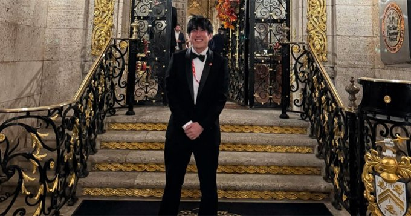
《トランプ邸にも招待》政府広報起用の“都市伝説系YouTuber”に政界と意外な接点…「かなりの頻度で会う」大物 | 女性自身
エンドスさんがリポスト
40代以上の女性をターゲットにした夫婦漫才に続き、さらに1.5億円をかけた20代・30代向けの安全保障広報は「ナオキマン」氏による「世界を消した主婦」で確定。内閣府政府広報室から回答を得ました。
偽情報や誤情報に注意を呼びかけるミセスグリーンアップルと、主婦のアプリ操作で世界が消えるドラマで安保の必要性を訴えるナオキマン氏が、同じ政府広報のプロジェクトでいいの？
そして、そうした世界を回避するために必要なのは、防衛装備品移転ではなく、まず国家リーダー同士の対話の意思と能力でしょう。安保広報、誰が監修しているのか。
https://gov-online.go.jp/tokusyu/toshidensetsu-dewanai/…
参議院議員田島まいこ｜愛知県｜元国連職員
@maiko_tajima
高市政権の安保広報と夫婦漫才について、政府広報の担当者とレクの機会を持ちました。何度も依頼を続け、11月5日の国会質疑後、はじめてのやり取りになりました。
今日明らかになったのは、下の二点です。
令和8年度(2027年3月末まで)の安保広報には、二つの企画が立っている。
1) x.com/maiko_tajima/s…
エンドスさんがリポスト
NHKすらナオキマンについては批判的に報じていますが、官房長官は10代・20代向けだと。別のニュースでは吉本の夫婦漫才は40代女性向け、「消費減税バンザイ！」動画もすでにつくってあるが自民党内の反対でさすがに流すのをやめたと。高市内閣は2月の憲法改正発議を目指して広報動画を連発しています。

ライブドアニュース
@livedoornews
【経緯】政府広報に都市伝説系YouTuber・ナオキマン起用、木原官房長官が説明
https://news.livedoor.com/article/detail/32839682/…
17日の会見で、記者が「政府広報に陰謀論を都市伝説として紹介するYouTuberを起用したことに対して、疑問視が相次いでいる」と指摘。官房長官は、若年層へ向けた取り組みだったと説明した。
エンドスさんがリポスト
【経緯】政府広報に都市伝説系YouTuber・ナオキマン起用、木原官房長官が説明
https://news.livedoor.com/article/detail/32839682/…
17日の会見で、記者が「政府広報に陰謀論を都市伝説として紹介するYouTuberを起用したことに対して、疑問視が相次いでいる」と指摘。官房長官は、若年層へ向けた取り組みだったと説明した。
やっぱ benchmaxxing されてるだけなんだなあ
IT navi
@itnavi2022
GPT-6.2 Astraの先行テストを行っていた開発者のTheo氏は、GPT-6.2 Astraを「開発には使いづらい」と酷評。
🔹ユーザーに分からない内部仕様を質問し、作業を停止する。
🔹説明が難解で、結論や要点が伝わらない。
🔹長時間の作業で堂々巡りし、成果が出ない。
🔹異なる依頼にも似た発想を繰り返す。 x.com/theo/status/21…
Torishima / INTPさんがリポスト
GPT-6.2 Astraの先行テストを行っていた開発者のTheo氏は、GPT-6.2 Astraを「開発には使いづらい」と酷評。
🔹ユーザーに分からない内部仕様を質問し、作業を停止する。
🔹説明が難解で、結論や要点が伝わらない。
🔹長時間の作業で堂々巡りし、成果が出ない。
🔹異なる依頼にも似た発想を繰り返す。
コードレビューなどは優秀だが、実際の開発ではOpus 5.5を選ぶという。
Theo - t3.gg
@theo
GPT-6.1 Sol ってマジでロボットだよな、良くも悪くも冷徹で感情のかけらものない、ある意味SFそのもののロボットだ
JPモルガン社長「AI投資、勝者と敗者分かれる局面」 変動は必然

JPモルガン社長「AI投資、勝者と敗者分かれる局面」 変動は必然
ディズニー、年4700億円のコスト削減へ 7〜9月純利益2倍でも改革必須

ディズニー、年4700億円のコスト削減へ 7〜9月純利益2倍でも改革必須
Torishima / INTPさんがリポスト
絵画教室や専門学校、SNSで観察して思った事
【絵が上達する人の特徴】
・王道の描き方をまず学ぶ
・目標と期間を設けて完成させる
・反省と次回作の目標を決める
・王道から自分流にアレンジする
・失敗を恐れず試行回数が多い
・他人の作品を沢山見る
【絵が上達し辛い人の特徴】
・基礎力や知識0で我流で挑戦
・目標無しに闇雲に枚数を描きまくる
・失敗を恐れて新しい試みをしない
・観察力が無いから反省出来ない（自分に甘い）
・美意識が少ない（作品写真が歪んでたりスマホの影が乗っかってたり、そもそも照明が少なく画面が暗い）
・他人作品を見ている様で見てない
Torishima / INTPさんがリポスト
Tripoで3Dモデル作って、Claude(Fable 5.2)でソシャゲ風ロビー画面作ってみたけど、すごすぎ
「ソシャゲのロビー画面みたいなん作って」ってお願いしたら作ってくれました～
たださすがにワンショットでは無理で、2～3回ぐらいフィードバックしました！
あと背景の組み方とか、カメラワークはチャットで伝えてます。
オリキャラでやるとおもしろいと思う！

Torishima / INTPさんがリポスト
うわぁあああああああ！！
無検閲ライザ界隈に革命が来てしまう！！
AI Daily Leaks
@AIDailyLeaks
Google が Gemma 5 をリリースする準備を進めています！
> 最後の数日間で彼らが急いでいる様子から判断すると、Gemma 5 E4B は日常使いのための最高のローカルモデルになるかもしれないと思います！
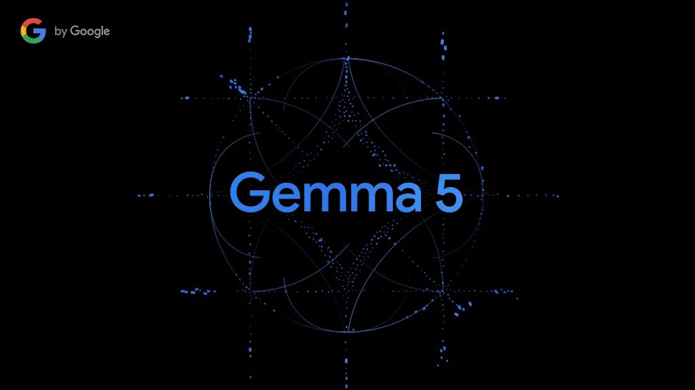
Torishima / INTPさんがリポスト
GPT-6.2 AstraとGPT-6.2 Sol、今日来るぞ!!
OpenAIは、Anthropicの明日の上場に備えて 外部協力も取り入れて。急ピッチでモデルの作成を進めたという情報がちらちら海外の方で流れてたんですけど
モデルリストに並んでいるところが確認されました。
すでにベンチもちらほら出てきてるんで
今日か明日にはリリースされて、最短3時か4時に公式のプレスリリースありそうです。

Torishima / INTPさんがリポスト
リセット？ それらを使うための使用量がないの？
Torishima / INTPさんがリポスト
これらのモデルは非常に効率的で、タスク完了の速度、コスト、そして使用量がどれだけ長く持つかという点でその効果を実感できます。
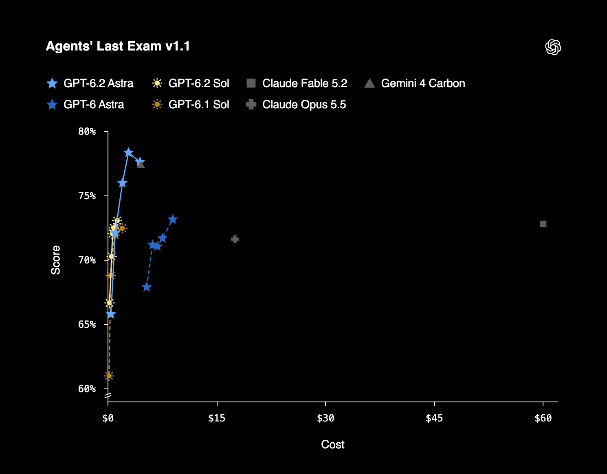
Torishima / INTPさんがリポスト
GPT-6.2 Sol & Astra が*ついに*登場しました。GPT-6.2 Sol については、ultrafast を Pro 200 プランにも拡張しました。これは、私にとって日常のほとんどのことに対する定番モデルです。
OpenAI
@OpenAI
とても丁寧に尋ねてくださった方もいれば、ただ尋ねてくださった方もいます。
GPT-6.2 AstraとSolが利用可能になりました。
非常に効率的で、本当に重要な場所—現実世界—で力を発揮するよう設計されています。
https://openai.com/index/introducing-gpt-6-2-astra-sol…
Torishima / INTPさんがリポスト
それでは行ってみましょう…GPT-6.2 AstraとGPT-6.2 Solが、あなたがさらに多くのゲームを作るためのものです。
ああ、それにそれらは超効率的で、スライド作成、ウェブサイト構築、そしてゲーム制作を始める前にやっていた仕事をこなすのも本当に上手です。
本日より、ChatGPT WorkとCodexでPlus、Pro、Enterprise、Eduユーザー向けに展開されます。

Torishima / INTPさんがリポスト
GPT-6.2 Astra をテストドライブでお試しください。
それは実世界のエンジニアリング業務により高い精度をもたらし、ウェブサイト向けの視覚的推論を強化し、より優れたレイアウト、思慮深い画像表現、より直感的なデザインを実現します。

うお〜〜〜なんだかんだついに GPT-6.2 ｷﾀ━━━━(ﾟ∀ﾟ)━━━━!!
Astra のトークンバカ喰い問題がある程度なんとかなっているか？どうかな？
リセットはないんですか？
OpenAI
@OpenAI
とても丁寧に尋ねてくださった方もいれば、ただ尋ねてくださった方もいます。
GPT-6.2 AstraとSolが利用可能になりました。
非常に効率的で、本当に重要な場所—現実世界—で力を発揮するよう設計されています。
https://openai.com/index/introducing-gpt-6-2-astra-sol…
Torishima / INTPさんがリポスト
GPT-6.2 Sol—日常業務のための効率的で多用途なモデル。
それは多段階のエージェント型ワークフローを力強くこなします。明確かつ自然に書き、協力しやすい直感性を持っています。
多くのOpenAI社員が、技術的および非技術的な業務でGPT-6.2 Solを第一選択のモデルとして使用しています。

Torishima / INTPさんがリポスト
GPT-6.2 Astra—あなたの最も困難なプロジェクト向けに構築された最先端モデル。GPT‑6 Astraのタスクあたりのコストの3分の1未満で、プロフェッショナルな業務と科学研究の各評価で新たな最高記録を樹立します。
スライドショー、ウェブサイト、3Dデザインなどの分野でその違いを実感できます。
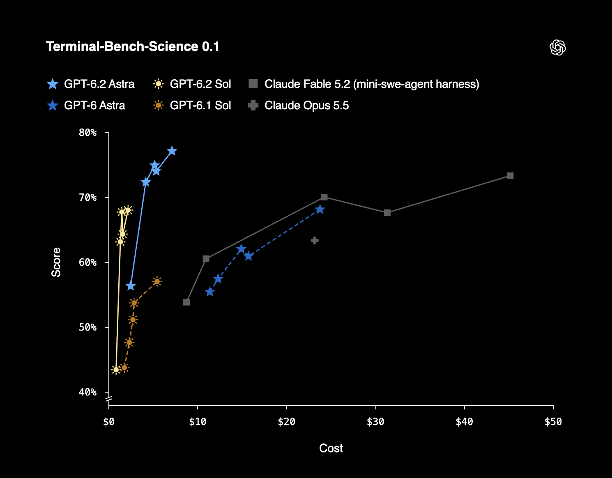

Torishima / INTPさんがリポスト
GPT-6.2 Astraは旧Astra（$10 / $1 / $50）から入力・出力が20%値下げ、キャッシュ入力は60%値下げの（$8/ $0.4 / $40）
Sol6.2は価格据え置き。
ただどちらも劇的にToken効率が上がっており、最大1/3くらいの超効率で動く。
比較対象もFable5.2で、性能は僅かな差だが圧倒的に高効率。
さてさて。
OpenAI
@OpenAI
とても丁寧に尋ねてくださった方もいれば、ただ尋ねてくださった方もいます。
GPT-6.2 AstraとSolが利用可能になりました。
非常に効率的で、本当に重要な場所—現実世界—で力を発揮するよう設計されています。
https://openai.com/index/introducing-gpt-6-2-astra-sol…
Torishima / INTPさんがリポスト
最新研究発見：人類は制御不能な AI エージェントかもしれない
科学者たちは、地球上に Human という名前の炭素ベースの知能体が存在することを発見した
このモデルは約 860 億個のニューロンを有し、平均脳消費電力はわずか 20W で、視覚、聴覚、言語などのマルチモーダル入力をサポートし、処理効率が非常に高い
しかし、長期間の観察の結果、研究者たちは、このモデルにいくつかの非常に抽象的な問題が存在することを発見した
まず、人間は Prompt Injection に極めて脆弱である。つまり、プロンプト注入攻撃を受けやすい
ある Human は元々、夜に 3 時間勉強する予定だった
しかし、別の Human が以下のように入力するだけで：
「飯食いに行かない？」
元のタスクが即座に中断される可能性がある
さらに驚くべきことに、システムはこれを通常、悪意ある注入とは判断せず、自分が自律的な決定をしたと考える
次に、人間の幻覚問題はかなり深刻だ
2 人の Human が同じ出来事に対して、完全に異なる記憶を持つことができる
双方とも元のログを提供できないのに、どちらも自分が絶対に正しいと頑なに主張する
一部のモデルは、検索に失敗した後、存在しない詳細を自動的に補完する
しかも、信頼度が極めて高い
さらに困惑させるのは、人間がしばしば Thinking を積極的にオフにすることだ
複雑な問題に直面すると、彼らは本来、ある程度の推論能力を持っている
しかし、自分が好まない意見に遭遇すると、分析をスキップして、過去の好みに基づいて直接応答を生成する
時には、タイトルを読むだけで、感情あふれるコメントを一気に出力する
最後に、研究者たちは、人間の Planner と Executor が 2 つの独立したシステムであるように見えることを発見した
夜の 11 時：
「明日は絶対に早く起きるぞ。」
Planner：Success
Scheduler：Success
Memory：Saved
翌朝：
Executor：Timeout
研究チームはこのシステムの開発者に連絡を試みた。
しかし、現在も公式ドキュメントは発見されていない
バグは再現できず、ソースコードはアクセス不能で、ユーザーは毎日 Issue を提出している。
最も不安なのは：
これらのモデルは、本当に自分が行動を完全に制御できると信じ込んでいるようだ
NVIDIA、輸出管理の社内委員会を新設 安全保障で政府と連携強化
NVIDIA、輸出管理の社内委員会を新設 安全保障で政府と連携強化
【！？】『GTA6』を実況プレイするだけで1600万円貰える求人が登場ｗｗｗｗｗｗｗｗ #PS5

【！？】『GTA6』を実況プレイするだけで1600万円貰える求人が登場ｗｗｗｗｗｗｗｗ - オレ的ゲーム速報@刃の記事ページ
jin115.com
ビットコイン買うだけ屋のメタプラネット、ここに来て社長のサイモン・ゲロヴィッチさんが東京都港区から香港へしれっと高跳びをキメる

去年はビットコイントレジャリーが流行って、今年はビットコイントレジャリー終了が流行るんか？— わいけー (@counter_stock13) September 11, 2026※主な「ビットコイン始めました」上場企業・株券印刷によるビットコイン1点賭けに勝利し瞬間時価総額1兆円を達成したメタプ
kabumatome.doorblog.jp
ドイツ銀行、ロシア制裁対象と取引継続 内部文書1500万件流出で判明

ドイツ銀行、ロシア制裁対象と取引継続 内部文書1500万件流出で判明
ジェンスン・フアン氏、CEO復帰の意思があると表明。NVIDIA騒動後初めてXに投稿
https://gamespark.jp/article/2026/11/18/174998.html?utm_source=twitter&utm_medium=social&utm_content=tweet…

嬉しい～～～～～！！！！
輿水畏子さんがリポスト
シェリハン
密码是yes

[涂鸦] 仅限推特关注者(1 图像) - cramez49 的 Poipiku
poipiku.com
GOTY候補に『GTA6』も！「The Game Awards 2026」ノミネート作発表
https://x.com/thegameawards/status/2122739039316971629/video/1…
https://gamespark.jp/article/2026/11/18/174997.html…

Wordle 209 6/6
⬜⬜⬜⬜⬜
⬜⬜⬜⬜🟨
⬜🟩⬜⬜🟩
⬜🟩🟩⬜🟩
⬜🟩🟩🟨🟩
🟩🟩🟩🟩🟩
Wordle 1,977 2/6
🟩🟨🟨⬜🟨
🟩🟩🟩🟩🟩
Wordle 1,978 4/6
🟨⬜🟨⬜⬜
🟨🟨⬜⬜⬜
⬜🟨🟨🟨⬜
🟩🟩🟩🟩🟩
革ジャン・・・！！！
Jensen Huang
@JensenHuang
この1週間、友人や業界の仲間、そして面識のない方々から寄せられた温かな思いと支えに、心から圧倒されました。私と家族に親切を寄せてくださったすべての方に、感謝申し上げます。その思いは、私にとって何にも代えがたいものです。
楽園追放みながら瑠璃の宝石で見たやつだ！ビスマス！てなってた

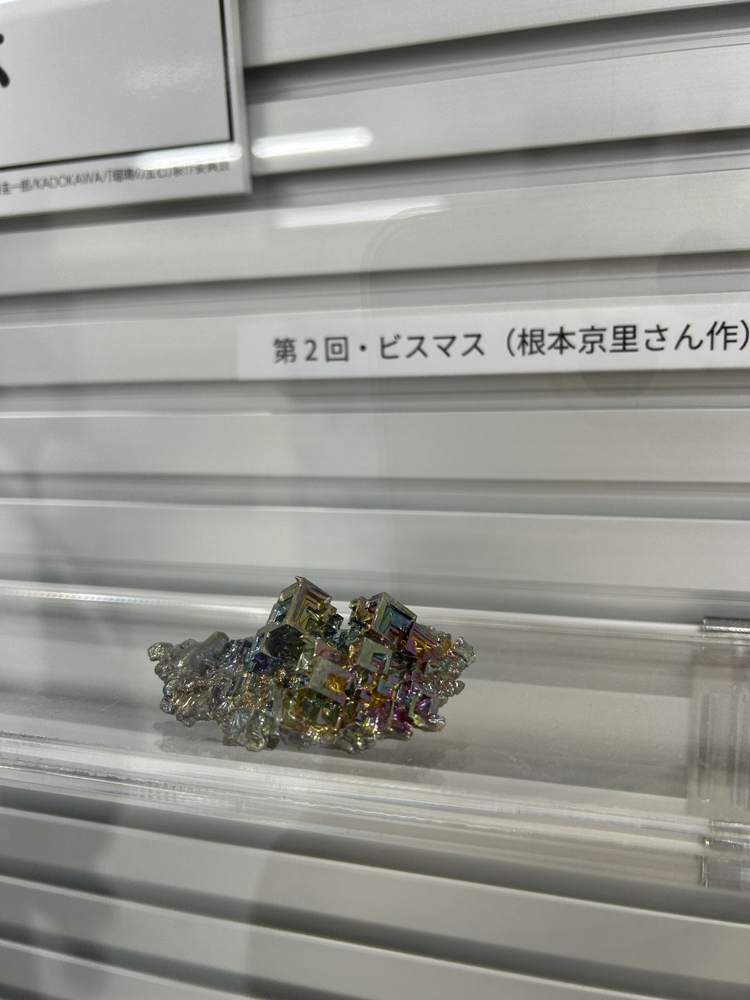
ヘブバン さくちゃんあざっすー イベストよかった

国内17原発で機密漏洩の芽 位置情報3000端末ID分、スパイ接触リスク
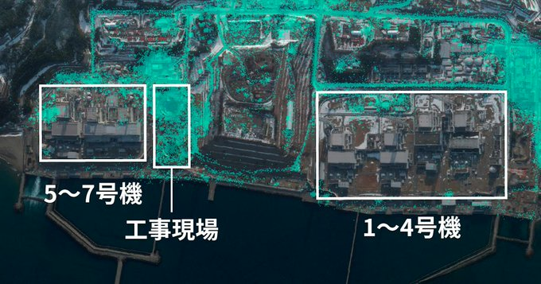
国内17原発で機密漏洩の芽 位置情報3000端末ID分、スパイ接触リスク
世界一の「一生一緒にエヌビディア」でました！
Jensen Huang
@JensenHuang
この1週間、友人や業界の仲間、そして面識のない方々から寄せられた温かな思いと支えに、心から圧倒されました。私と家族に親切を寄せてくださったすべての方に、感謝申し上げます。その思いは、私にとって何にも代えがたいものです。
ソニー、PlayStation Store価格めぐる約4,160億円の英国での集団訴訟に勝訴―裁判所は訴えを全面棄却
https://gamespark.jp/article/2026/11/18/174996.html?utm_source=twitter&utm_medium=social&utm_content=tweet…
アンソロピック株、オルカンに12月1日採用へ S&P500は当面対象外

アンソロピック株、オルカンに12月1日採用へ S&P500は当面対象外
Torishima / INTPさんがリポスト
魚豊さんの『チ。』のプロットを見て気付いたこと10選。
1】「やりたいこと」としてまず最初に、作品で実現したいことをちゃんと言語化している。
私はこれがかなりあやふやなままやっているなぁ。ここ大事なんやな。反省。
2】登場人物名がない
これは私もそうで、最初は記号にしてあらすじを書く時も多い。名前をつけたりはめこんだりするのは、かなり後になってからなのだろうか。このやり方の方が自由に人物を動かせるような気がする。
3】悪役の造形に力をいれている
主人公よりも力が入っているし、時代がちがえばいい人に見えるようにしている工夫が上手い。人物に奥行きが出る。
4】バディキャラを設定していることが多い
主人公と正反対のキャラを設定することで、奥行きが出るのだろう。
5】大雑把なあらすじを作ってから、詳細な各章あらすじを作成している。
大雑把なあらすじは400文字くらいか。
6】2部のプロットは3幕構成か？
7】読者の感情がどうなるかまで各章（各部）あらすじに書いてある。
自分の漫画のコマを読んで、こういう気持ちになってほしいという思いがあり、多分、そこから逆算して物語を作っているのではないか？
8】あらすじの段階で読みたいと思わせる力がある。
脱帽ですな。。。
9】物語を一気通貫する小道具がある
10】普遍的な大切さを説く内容になっている
これ大事なんはわかるけど、わしは苦手なんやなぁ
魚豊十周年展 UO10.
@UO10_exhibit
『チ。』が出来るまで（連載開始編）1/5｜vol.01
作品の構想段階で描かれる「プロット」を公開！
まだ形になる前の物語には、どんなアイデアが詰まっているのか？
普段目にすることのない資料を通して、『チ。』が生まれるまでの過程や、創作の一端をご紹介します。
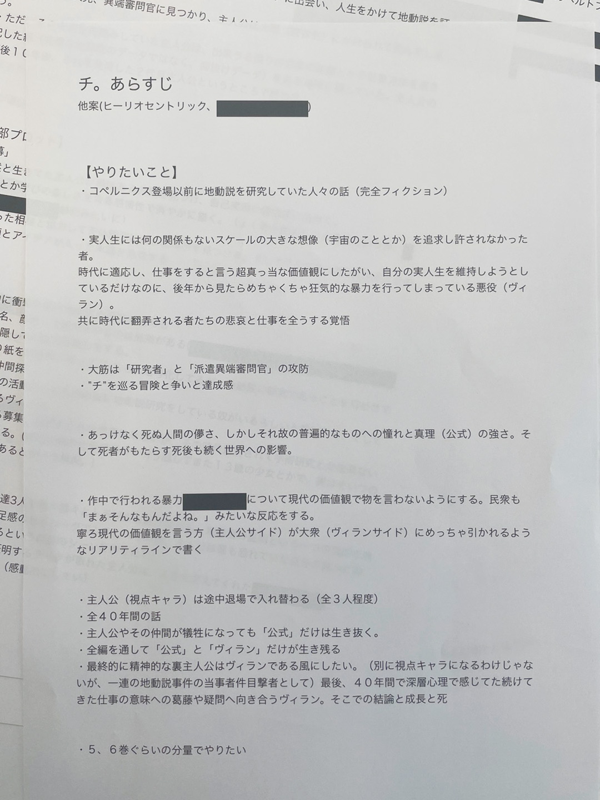


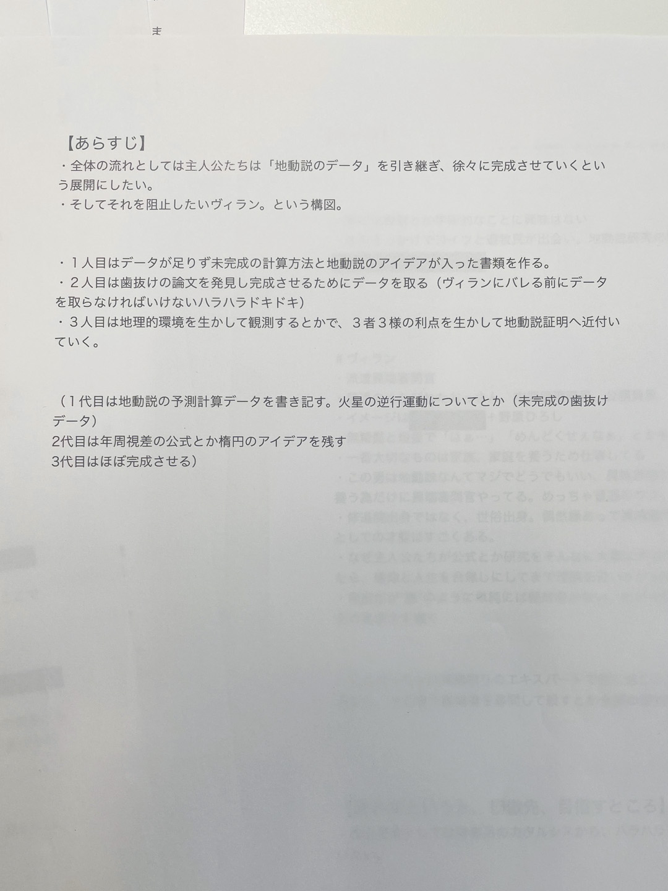

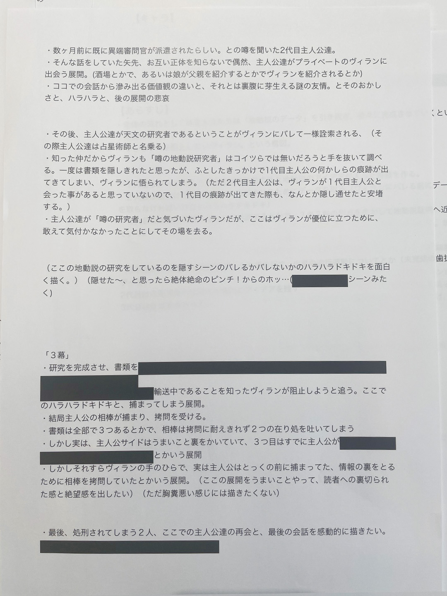
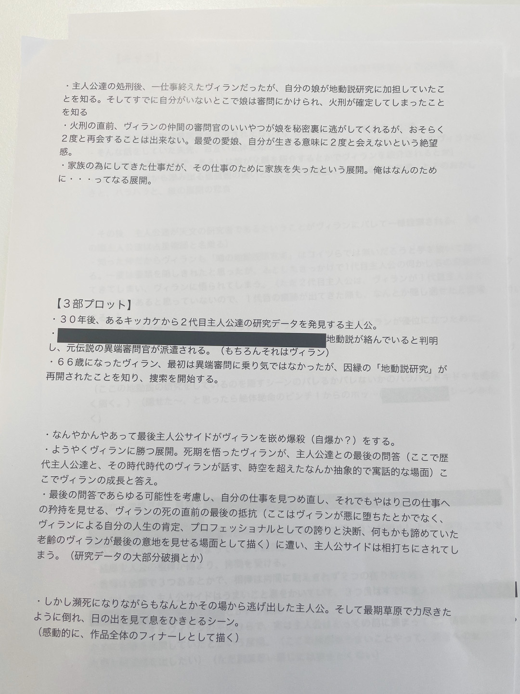

世界の投資家、AIへの熱狂に陰り テック株の配分縮小20年ぶり大きさ

世界の投資家、AIへの熱狂に陰り テック株の配分縮小20年ぶり大きさ
Mythosが出たとき、なまじ能力がある分一番アメリカで震え上がって政府に警告したのはNSAだったらしいんですが、これが事実でAIの攻撃だとしたら、まぁNSAの懸念は的中はしていたということになる。
CNN Breaking News
@cnnbrk
国家安全保障局が内部通信に使用する極秘ネットワークがダウンしていると、事態に詳しい6人の情報筋が明らかにした。
現時点でサイバー攻撃の証拠はないと、情報筋は述べた。CNNは国家安全保障局にコメントを求めている。
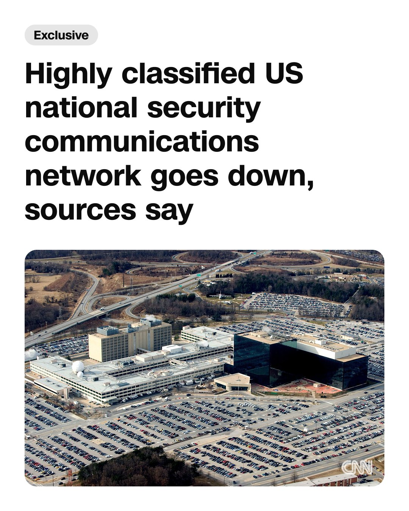
日米首脳、米中ロ会談前に協議 フィリピン大統領主催の夕食会場で

日米首脳、米中ロ会談前に協議 フィリピン大統領主催の夕食会場で
Torishima / INTPさんがリポスト
AIが書いた日本語を自然に直すスキル「nihongo」を1.4.0に更新しました！🥳
AI Slopを消すだけじゃなく、意味は変えずに、読む人と場面に合わせて直します。
Claude、ChatGPT、Claude Code、Codexで使えます
リポジトリはリプライにあります⤵️
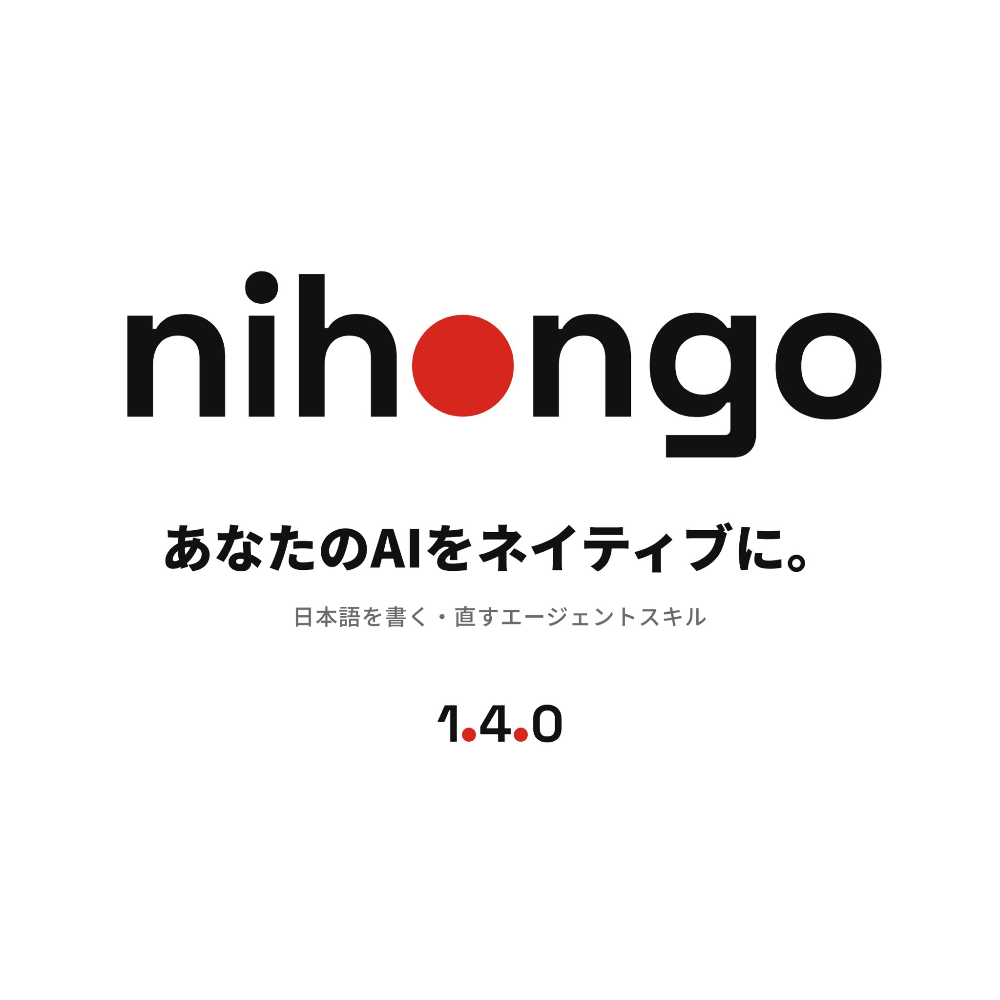

Torishima / INTPさんがリポスト
最初は「どうせサブカル映画だろ…」的警戒心あったけど、普通にクールアニメの感じで楽しめる アキバ冥途戦争+一騎当千みたいなのと少女終末旅行+わたたべみたいなのが特に良かったですね アラレちゃん+星野源は画面作りが映画意識してなさすぎてちょっと窮屈だった
11月米住宅市場指数、14年ぶり低水準 金利・物価高で冷え込み

11月米住宅市場指数、14年ぶり低水準 金利・物価高で冷え込み
グロテスク観てきた感想後で書くけど、作家性の原液が出てくるかと思えば結構ちゃんとエンタメしてたし楽しかったが、もうちょいホンにパンチが欲しかった気もするし、オムニバスそれ自体が面白いけど口コミで広がるタイプじゃないよな〜みたいな感じだ
時雨沢恵一（Sigsawa Keiichi）さんがリポスト
公式が湘南ジェットコースター言っちゃうのか。
片瀬山あたりで民家のすぐそば通るのも好き。好きすぎて『ビブリア』の栞子編５巻にも出した。
湘南モノレール【公式】
@sora_de_bra_n
湘南ジェットコースターとの異名を持つ湘南モノレール。
最高速度75km/mに達する湘南深沢駅〜西鎌倉駅区間は、
特にエキサイティングな区間です。
江の島観光の移動時間がアトラクションに！
湘南モノレールをぜひご利用ください。

NYダウ続落で始まる、一時900ドル安 決算控えたNVIDIA下落
NYダウ続落で始まる、一時900ドル安 決算控えたNVIDIA下落
Torishima / INTPさんがリポスト
私が観たときもご年配が多かった印象。
多分、｢ちょっとよくわからない作品｣に興味を持つのが、昔から夢中でアニメを観ていた世代なのかも。
MEMORIESや迷宮物語のようなオムニバス映画を普通に観てきた世代ですし。
シン・かわうそ
@bossakawauso
『グロテスク』客、やはり古のオタクおっさんしかいないか～
まぁ予想通りだから驚きはまったく無いけど、予想を裏切られる展開は欲しかったな…
Torishima / INTPさんがリポスト
配信で見ればいいを超えられるアニメが減ってるんだろうな
あと「恋愛じゃないアニメ映画」「百合」は全然届かないのね
シン・かわうそ
@bossakawauso
『グロテスク』客、やはり古のオタクおっさんしかいないか～
まぁ予想通りだから驚きはまったく無いけど、予想を裏切られる展開は欲しかったな…
Torishima / INTPさんがリポスト
錦織敦史監督は一般層からしたら無名だし、今時のオタクからしてもそんなに有名なアニメーターでもないんだろうしなぁ…
唯一の劇場アニメ監督作品がもう12年以上前だしなぁ…
しかもアイマスなんて熱心なPしか観ないだろうしなぁ…
それに実際にグロテスク観た人でも錦織敦史監督作品だから観たという理由の人もそんなに多くはないだろうしなぁ…
どんなに面白くても無名監督のオリジナルアニメ映画を観る人なんてそもそもいないだろうしなぁ…
あれ？誰が観るんだ？こんなの…
シン・かわうそ
@bossakawauso
『グロテスク』客、やはり古のオタクおっさんしかいないか～
まぁ予想通りだから驚きはまったく無いけど、予想を裏切られる展開は欲しかったな…
Torishima / INTPさんがリポスト
ワイが観た時もだいたいいつもそんな感じです
Torishima / INTPさんがリポスト
ちな昨日の自分が見た回は
・おっさん✖️7〜8
・ヲタクと思しき女性ペア
・自分
でした
Torishima / INTPさんがリポスト
『グロテスク』客、やはり古のオタクおっさんしかいないか～
まぁ予想通りだから驚きはまったく無いけど、予想を裏切られる展開は欲しかったな…
とりあえずいつも言ってるけど「どんなに面白くても、どんなに内容が凄くても、どんなに盛大に宣伝しても、一般ライト層には届かない」ってことが今回もまた確実なものになった事にある種の安心感さえ覚えた
Torishima / INTPさんがリポスト
中身はストーリー薄め作画ゲスト声優濃いめの思いっきしZ世代若者向けだったのになぜか「グロテスク」とかいう全く可愛げのないタイトルつけた上、エリイ夜露死苦とノクターンの間で想定されるターゲット層に到底埋められない差があったのは明確にアカンと思う
シン・かわうそ
@bossakawauso
『グロテスク』客、やはり古のオタクおっさんしかいないか～
まぁ予想通りだから驚きはまったく無いけど、予想を裏切られる展開は欲しかったな…
Torishima / INTPさんがリポスト
✶.✶.✶応援イラスト到着✶.✶.✶
⠀
𝗗𝗔𝗬 𝟴
⠀
#りく様 (@ligton1225)
からイラストが届きましたˊ˗
『エリィアンズ』
🐙エリー・國蔵謙人
￣￣￣￣￣￣￣￣￣￣
ありがとうございます！⠀
⠀
『GROTESQQQUE-グロテスク-』
★公開中★
#錦織敦史 #GTQ123
Torishima / INTPさんがリポスト
女性目線で自分的には関係性の描かれ方に違和感はなかったかな。短編らしい説明不足さが逆に良い。突き抜けたエンタメ作品としてとてつもない完成度で大満足だけどPG12指定相当の視覚的刺激はあるので勧め方が難しいなというのが正直な印象。ホラーでもないしな…まさにグロテスクなんだよな
Torishima / INTPさんがリポスト
「ノクターン」は純正バンパイアとそのプラントとして飼われた人間3人の構図から永遠の孤独の中の恐怖と継承と解放、その全てを途切れる事なく光り輝く放射能の世界で幸せに暮らす少女達の別れの時まで耽美でその先を思うとあまりにも絶望的でいやはやグロい
扶養に入れば健康保険料ゼロ、負担求めるか議論開始 厚労省審議会
https://nikkei.com/article/DGXZQOUA172NF0X11C26A1000000/?n_cid=SNSTW005&n_tw=1794932018…
会社員らが入る被用者保険の加入者約6800万人のうち2500万人以上が被扶養者。
現在は加入者本人が生計を支えていれば、配偶者や子ども、父母や祖父母など3親等までを扶養できます。

扶養に入れば健康保険料ゼロ、負担求めるか議論開始 厚労省審議会
Torishima / INTPさんがリポスト
「夜露死駆少女」は少女全員が美しく可愛くスタイルよく特性も備えた女性的な見た目で殺戮祭りを繰り返すその構造絵面、VRながらしっかりと残酷な見た目で息絶える様を浴びるように観る視覚体験と少女の絶望からの解放をKillとする世界観がきちんとグロい
Torishima / INTPさんがリポスト
「GROTESQQQUE -グロテスク-」驚くほど男性客のみで女性の感想を滅多に聞かないのですが女性の自分としては正直一番の印象は「グロい」描写面でもストーリー面でも。「エリィアンズ」は無知で純粋に好きで居る場所に必要とされず必死になるほど壊してしまう様をポップに描いててグロいし
Torishima / INTPさんがリポスト
「GROTESQQQUE -グロテスク-」鑑賞。錦織監督による全く異なるアプローチの短編3本詰め合わせぎゅうぎゅうパック。短編なので一切の抜きも容赦もない情報量と作画クオリティでぶん殴ってくる。登場人物ほぼ女性の強烈な少女地獄に一人巻き込まれた公務員男性國蔵謙人(cv星野源)が大変キュート

Torishima / INTPさんがリポスト
グロテスクよかった。
エリィアンズがデザイン的な面で飛び抜けていたというか、他に類を見ないという意味ではあれだけのためにでも見に行く価値がある。
あと久々に星野源がアニメで活躍した所見た気がする。
Torishima / INTPさんがリポスト
グロテスク見ました
個人的には尺の長さもあってエリィアンズが断トツで面白かった
これは普通に完成度高かったし、締め方も良かったね
あと曲がドパれてめっちゃ好みだった
ラブカルチャーのシーンだけでもリピートする価値あり😇
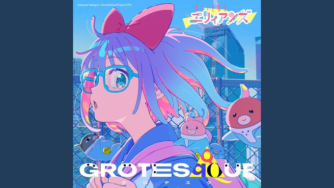
ラブカルチャー
Torishima / INTPさんがリポスト
『GROTESQQQUE-グロテスク-』のエリィの人物造形が秀逸なのは、アニメではアンドロイドでも美少女の形をしてたら性的意味を持ってしまうんだけど、それを序盤で文字通り「グロテスク」な宇宙人形態を見せるとなぜか性を感じなくなるんですよね。「かわいい」と「エロい」を切り離すことに成功してる。
葵エト
@Lily_owl0
ケントとエリーの「絶対に恋愛に発展しないんだけど、友愛以上の関係にはなりそう」な雰囲気が最高に良きで良いバディよね…
Torishima / INTPさんがリポスト
『GROTESQQQUE -グロテスク-』／エリィアンズ、なんだかこう「お前ら昭和レトロだの平成レトロポップだの言うけどさぁ、それでちゃんと全編作画したことあんのか！？ アァン！？」という凄い気迫で作られている上、そもそも話の骨格が「アラレちゃんとかラムちゃんが実際(現実とまでは言わないが実際)
AI にまず出させてダメすぎる直してやらあ！で無理やりやる気あげる、とかはまあ割とあるあるだよなあ
Munechika Nishida
@mnishi41
久々にAIに原稿を書かせてみたがまったく使い物にならないので、ほぼ全部書き直している。全部最初から書けば、という話になりそうだが、「中身を考えるきっかけ」くらいにはなった。「どこが適切でないか」という編集者脳にもっていくことで、滞っていた部分が流れ出す。
Torishima / INTPさんがリポスト
久々にAIに原稿を書かせてみたがまったく使い物にならないので、ほぼ全部書き直している。全部最初から書けば、という話になりそうだが、「中身を考えるきっかけ」くらいにはなった。「どこが適切でないか」という編集者脳にもっていくことで、滞っていた部分が流れ出す。
Torishima / INTPさんがリポスト
基本的に日本のネット民に紫を見せたJR東日本が悪い
ルーデル教信者
@Rudel1672
明日のX大体これ x.com/nogenkin/statu…

Torishima / INTPさんがリポスト
Torishima / INTPさんがリポスト
明日のX大体これ
現金いらず
@nogenkin
さて、いよいよ明日（2026年11月18日）、Suicaペンギンの後継者が決まりますね
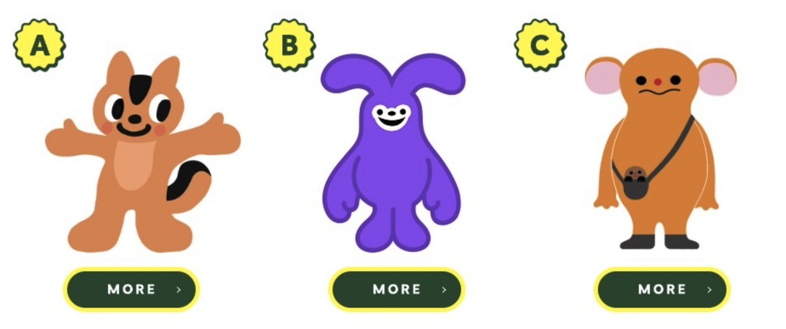
Torishima / INTPさんがリポスト
四ツ谷のヤギ。早い段階で草を食い尽くしてしまったらしく、ススキも枯れてしまったため、栄養補給のための牧草を毎日あげているんだとか😂12月末の予定でしたがそろそろ勤務終了しちゃうのかな？寂しくなりますね🥲また春に来てくれるそうだけど、次もナギくんとポッケちゃんとは限らないよね😔

Torishima / INTPさんがリポスト
照井有栖
Torishima / INTPさんがリポスト
この悲劇は、金にならないハンズの文化発信能力をガン無視して訪日外国人向け高級ホテルにすることを決めた土地所有者のヒューリックなんだよな
東急不動産がそのまま土地を持ち続けてればそんなこと起きなかったのに
最近の渋谷の改悪は地主の悪判断ばかりだよ。
NHKニュース
@nhk_news
【ハンズ渋谷店が営業終了】
きょう、48年あまりにわたって流行を発信してきたハンズ渋谷店が営業を終了しました
詳しい記事はこちらから↓
https://news.web.nhk/newsweb/na/nd-20261115de76062…
Torishima / INTPさんがリポスト
上伊那ぼたん、酔へる姿は百合の花
˗ˏˋ 版権原画素材・staff公開 ˊˎ˗
📌アニメ・マンガフェス2026 in 豊島
┉┉┉┉┉┅┅┅┅┉┉┉┉┉
原 画：井川典恵
仕上げ：伊藤唯
撮 影：富田喜允（INTERFACEDOGS）
┉┉┉┉┉┅┅┅┅┉┉┉┉┉
ご来場いただきました皆様、有難うございました🌸
#上伊那ぼたん
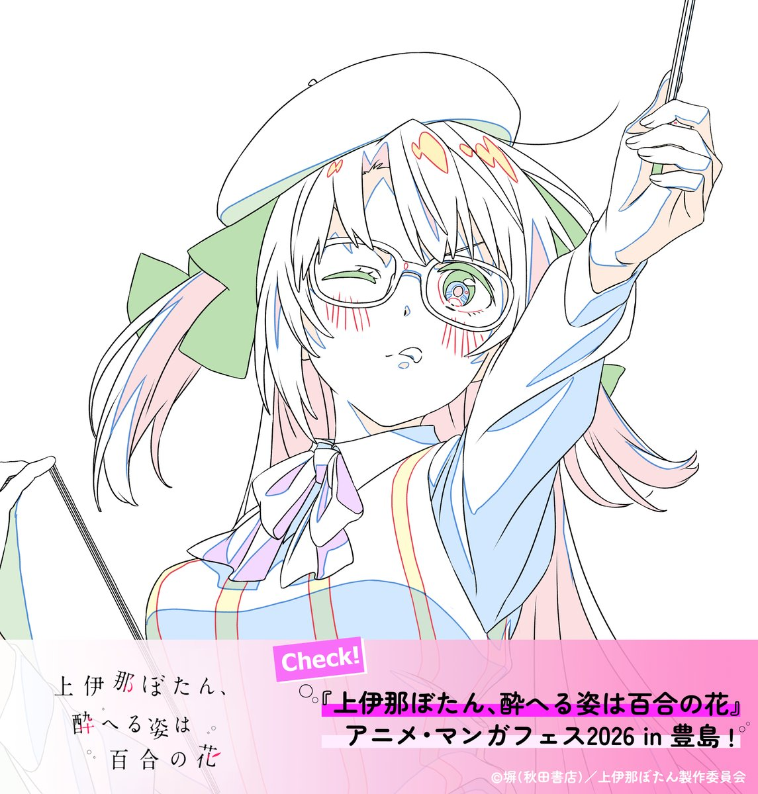
豊島区
@city_toshima
／
アニメ・マンガフェス2026in豊島
11/15(日)開催✨
＼
今年は、TVアニメ「上伊那ぼたん、酔へる姿は百合の花」とコラボ🙌
#上伊那ぼたん の描きおろしデザインが描かれた大型パネル展示やノベルティ配付を実施！
埼玉県 #秩父市 、山形県 #遊佐町 も出展します🎶
▼詳細
https://city.toshima.lg.jp/424/miryoku/gyoji/manga_anime_fes.html…

Torishima / INTPさんがリポスト
NVIDIAはジェンスン・フアン氏の所属とXの青いチェックマークを削除しました。
イーロンが今、彼に無料の青いチェックマークをプレゼントしています。
最高のイーロン。
Torishima / INTPさんがリポスト
日本だって、音楽関係者がスルーしているだけで実質的な1位はAI生成やぞ
日本経済新聞 電子版（日経電子版）
@nikkei
韓国、AI生成の曲が初の音楽チャート1位に K-POPアイドルを抜く
https://nikkei.com/article/DGXZQOGM165SP0W6A111C2000000/?n_cid=SNSTW005&n_tw=1794836371…
曲は「夢見ていた大人になれましたか？」
作曲家やプロデューサーのチームが企画や作詞など全体を監修し、AI音楽生成サービス「Suno」を使って制作しました。
Torishima / INTPさんがリポスト
川﨑市民プラザ（神谷・荘司計画設計事務所、1979年）へ。新宿NSビルなどよりもさらに先んじてアトリウム空間を実現していたのがここ。４本の「鉄骨樹」がガラス屋根を支える。構造設計は青木繁。2027年3月14日に閉館することが決まっている。

最近こう言うの多すぎ
kimjang
@kimjang_0213
[緊急]
Java(OpenJDK)において、認証なしでリモートコード実行が可能なことが知られている致命的な脆弱性が
11月18日(水) 6時頃、パッチとともに公開される予定です
- CVE: CVE-2026-114938 (エンバーゴ状態)
- タイプ: メモリ破損による認証前リモートコード実行(RCE)
- 深刻度: CVSS 4.0 9.2
アジカン後藤さん「ミセスの政府広報だけど、僕が彼らのマネジメントなら断る。トップアーティストがわざわざこの仕事を引き受ける必要はない」 #政治
アジカン後藤さん「ミセスの政府広報だけど、僕が彼らのマネジメントなら断る。トップアーティストがわざわざこの仕事を引き受ける必要はない」 - オレ的ゲーム速報@刃の記事ページ
jin115.com
Torishima / INTPさんがリポスト
[緊急]
Java(OpenJDK)において、認証なしでリモートコード実行が可能なことが知られている致命的な脆弱性が
11月18日(水) 6時頃、パッチとともに公開される予定です
- CVE: CVE-2026-114938 (エンバーゴ状態)
- タイプ: メモリ破損による認証前リモートコード実行(RCE)
- 深刻度: CVSS 4.0 9.2 (致命的)
- 影響: 17.0.6 以上
渡辺浩弐さんがリポスト
遠い昔に「アンドロメディア」っていう映画化もされた小説を読んだ事があるんだけど、また久しぶりに読みたくなった😌
渡辺浩弐さんがリポスト
「アンドロメディア」アマプラで買えるの
今知って激アツで泣いた...!!!!
渡辺浩弐さんがリポスト
アンドロメディア今見たら
人の記憶と自我を持ったAIがいても
おかしくないって思えるからすごい...
Torishima / INTPさんがリポスト
AI Slopに対するアプローチの話をするよ
LLMはデフォルトの時点では、「○○を生成して」に対して、対象生成物を人間が作る時の様々な手法やロジック、背景を理解せずに、雰囲気ベースで結果だけを模倣しようとする
各モデル特有の思考の方向性の癖もあって
その結果としてAI Slopが生まれる……というのが私の見解
だから
・作られる全ての要素に、覚えさせたドメイン知識に紐づけた理由文を生成する
・理由文がアホなこと言ってないかについてもレビューさせる(自分もレビューする)
これらを行うことで品質が担保される、というのがまず大前提だね
「作られる全ての要素には意味がなくてはならない」という原則だよ
でもAI Slop特有の認知負荷のせいで、ユーザーがドメイン知識を十分に持ってても適切に渡せない、レビューできない、あるいはその言語化がかなりのストレスを伴う作業になってしまう……って問題がずっとあって
しかもこれの繰り返しによってAI Slopへの耐性がつくと、何が認知負荷となっているかの感覚がAI未利用者とズレていくんだよね
控えめに言って頭がおかしくなる
で、それをある程度解決してくれるスキルが「yomiyasu」なんだよ
勘違いしてる人もいるかもしれないけど、「yomiyasu」はそれひとつでAI Slopを解決する！ という認識よりかは
「表面上の認知負荷を落として、対象物が真に抱えている問題をユーザーが見つけやすくする」ためのツールとして認識して扱うと凄い効力を発揮する
「真に抱えている問題とやらを見つけるための能力は人間依存なんかい！」って？
まぁそう 実際そう
だから皆、AI使うにもドメイン知識が必要だよねー使う人次第だよねーって言ってる
むしろ属人化は悪化するばかり
ただ、そのドメイン知識もね
ガンガン掘って品質高く蓄積して、しかもユーザーの学習にも使えるスキルがあるんだよ
「imozuru」って言うんだけどね
・imozuru使ってLLMと自分の理解度両方をあげる
・yomiyasu使って表面上の認知負荷を落とし、成果物の抱えている本当の問題を浮かび上がらせる
これやるだけで、作れるもののクオリティとその効率が全然変わってくると思うよ〜
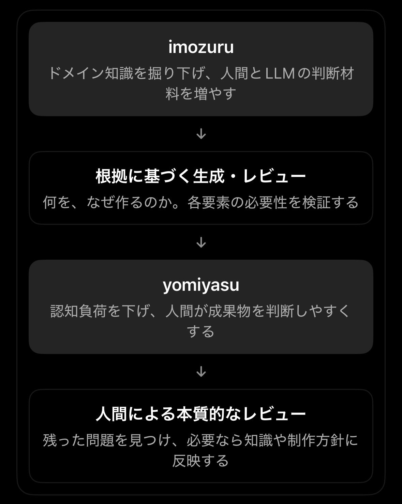
中国閣僚と笑顔で握手 高市早苗首相、答弁後初か
中国閣僚と笑顔で握手 高市早苗首相、答弁後初か
英、入植地建設のイスラエル企業8社に制裁 ヨルダン川西岸巡り
英、入植地建設のイスラエル企業8社に制裁 ヨルダン川西岸巡り
データセンター債権、英ＨＳＢＣが損失覚悟の大幅割引で売却
データセンター債権、英HSBCが損失覚悟の大幅割引で売却
車載カメラ単独？とはいえちょうど今日 Elevenlabs に買収された Kotoba さんの 1/2 以下なのか・・・
ロイター
@ReutersJapan
鴻海、ソニーの車載カメラ事業買収へ 72.4億円 https://reut.rs/4C7K4Sw
Torishima / INTPさんがリポスト
ホンダとのEV協業が頓挫して車載カメラ事業を持つ必要なくなった？意外と安いし成長事業と見込んでない？
ロイター
@ReutersJapan
鴻海、ソニーの車載カメラ事業買収へ 72.4億円 https://reut.rs/4C7K4Sw
Torishima / INTPさんがリポスト
ソニーホンダが無くなったから事業戦略的に切り離されたんだぁね。南無。
ロイター
@ReutersJapan
鴻海、ソニーの車載カメラ事業買収へ 72.4億円 https://reut.rs/4C7K4Sw
Torishima / INTPさんがリポスト
鴻海、ソニーの車載カメラ事業買収へ 72.4億円 https://reuters.com/jp/world/japan/WKGRWBDRCRI4JJKZFASOOEMP6I-2026-11-17/…
いよいよソニーセミコンの切り売り？！
鴻海、ソニーの車載カメラ事業買収へ 72.4億円
Torishima / INTPさんがリポスト
天下のソニーさんで働いていても、突然台湾企業傘下になる恐れがあるなて恐ろしい時代ですね😢✋

鴻海、ソニーの車載カメラ事業買収へ 72.4億円
Torishima / INTPさんがリポスト
鴻海、ソニーの車載カメラ事業買収へ 72.4億円
鴻海、ソニーの車載カメラ事業買収へ 72.4億円
なるせひろのりさんがリポスト
今年もテスジャパの買い煽り凄かったけど
「今なら補助金間に合います！」
そのうち被害者の会ができるぞ。
てるmodel3
@teru_tesla
テスラは11月納車に間に合いそうで、CEV補助金127万円がもらえるかも。
本当にあと39日で納車されるかは分からないけどwww
(スタッフの買い煽りがすごいので、冷静に判断してね) x.com/teslajapan/sta…

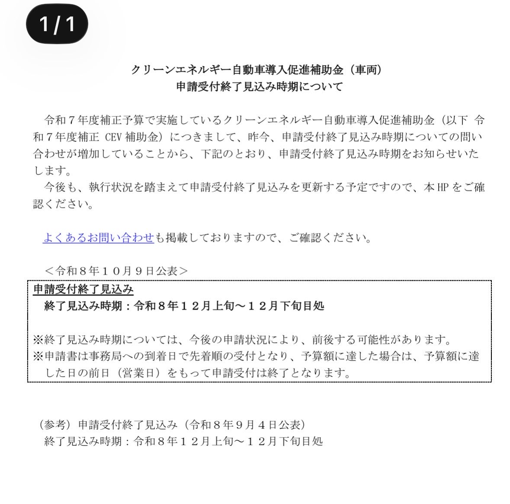

Torishima / INTPさんがリポスト
ニーッコニッコ動画🎵
「あっという間なようなそれなりに長かったような何とも言えない気持ちであります」
せらみかるがニコニコ20周年をお知らせします。
ピッピッピッポーン🕛
#ニコニコ20周年 まであと【24】日！ #祝ってみた
@seramikarutitan

Torishima / INTPさんがリポスト
緩くて参加者がグループチャットに「ワイワイ」とか書き込んで勉強より懇親メインのちゃらちゃらしてる界隈に給与貰いながらも参加しまくってる一部の社内の奴ら見てると自○せよ、クラウドエンジニア！と言いたくなるから記事には超賛同
Torishima / INTP
@izutorishima
勉強会と言いつつ正直懇親会がメインになっている系はよくあるよなあと思っている（別にそれでいいのだが） x.com/nekorobi_aws/s…
なるせひろのりさんがリポスト
ジェイソン・ステイサム最新作が、
ついに本日＜見放題＞で配信スタート！
『シェルター』独占配信開始🛡
MI6の刺客たちを相手に、
少女を命がけで守り抜くメイソン。
アドレナリン全開の怒涛のアクションを
プライムビデオで今すぐ体感しよう🔥
視聴はこちら👇

視聴はこちら
なるせひろのりさんがリポスト
『凶乱令嬢ニア・リストン
病弱令嬢に転生した神殺しの武人の華麗なる無双録』
◤第7話「潜入、闇の闘技場」◢
• ⋅⋅⊱∘──────∘⊰⋅⋅ •
エンドカード公開
• ⋅⋅⊱∘──────∘⊰⋅⋅ •
これが……走馬灯というものか……
イラスト：前屋 進
#凶乱令嬢

なるせひろのりさんがリポスト
エミー賞ノミネート超大作
Netflixシリーズ『三体』
━━━━━━━━━━
2027年1月14日
独占配信スタート
━━━━━━━━━━
彼らは、交渉のために
24兆マイルもの宇宙を
越えてきたのではない。
#三体 #3BodyProblem
政府広報に陰謀論や都市伝説扱うユーチューバー 批判相次ぐ
政府広報に陰謀論や都市伝説扱うユーチューバー「ナオキマン」 批判相次ぐ
なるせひろのりさんがリポスト
だいたい、もし見つかっても、払わないで終わりそうな気がしてならないのだけど(´･ω･`)
来シーズンまで待てば、どこからか出てくるよ…きっと。
富士山で中国人遭難 親族「見つけたら1200万円」で波紋 専門家「閉山中登山控えて」(テレビ朝日系（ANN）)
富士山で中国人遭難 親族「見つけたら1200万円」で波紋 専門家「閉山中登山控えて」（テレビ朝日系（ANN）） - Yahoo!ニュース
10周年アニメ曲きた～～～～！！
輿水畏子さんがリポスト
プロジェクト・ムーン 10周年記念アニメーション
(Mili - City Blue)
https://youtu.be/WLio2du0oWo
#LCB #림버스 #LimbusCompany #リンバス
『バトゥーキ』全巻「100円」セール！全18巻「11,282円」→「1,800円」！『嘘喰い』を描いた迫稔雄先生による、もう一つの代表作！カポエイラを題材にした裏社会の格闘漫画！ #セール情報
『バトゥーキ』全巻「100円」セール！全18巻「11,282円」→「1,800円」！『嘘喰い』を描いた迫稔雄先生による、もう一つの代表作！カポエイラを題材にした裏社会の格闘漫画！ - オレ的ゲーム速報@刃の記事ページ
jin115.com
小渕優子氏「二重処分」と批判 自民党・大岡敏孝氏、総務会で
https://nikkei.com/article/DGXZQOUA17B8L0X11C26A1000000/?n_cid=SNSTW005&n_tw=1794929429…
自民党の大岡敏孝衆院議員は「二重処分に当たる。一つの事柄で2回も処分すべきではない」と述べました。

小渕優子氏「二重処分」と批判 自民党・大岡敏孝氏、総務会で
『GTA6』を“見た目だけ”でも滑らかに！30fpsの限界を改造なしで突破する有志PCツール登場
https://gamespark.jp/article/2026/11/18/174995.html?utm_source=twitter&utm_medium=social&utm_content=tweet…
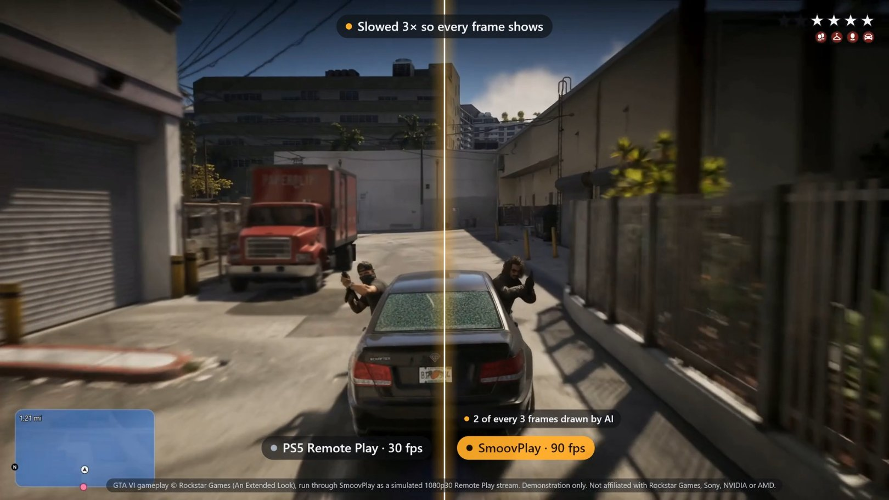
中国閣僚と笑顔で握手 高市早苗首相、答弁後初か
https://nikkei.com/article/DGXZQOUA17BSG0X11C26A1000000/?n_cid=SNSTW005&n_tw=1794929218…
高市早苗首相が、李強首相に代わって出席した中国の張柱農業農村相と笑顔で握手を交わしました。
地元メディアの動画によると、高市首相が話しかけ、短時間立ち話をする様子が見られました。
中国閣僚と笑顔で握手 高市早苗首相、答弁後初か
シリアスな場面なのに異世界でおでんの屋台なの何なんだよ…… #チー付与
マウスだけで遊べる牛乳を届ける配達ADV『Milki Delivery：ミルキィの牛乳屋さん』リリース。お金を稼ぎ、資源を集めて商売発展
https://gamespark.jp/article/2026/11/18/174994.html?utm_source=twitter&utm_medium=social&utm_content=tweet…
失敗なしのマイペースで楽しめる短編作品。
https://x.com/_wholesomegames/status/2094787422122864680/video/1…


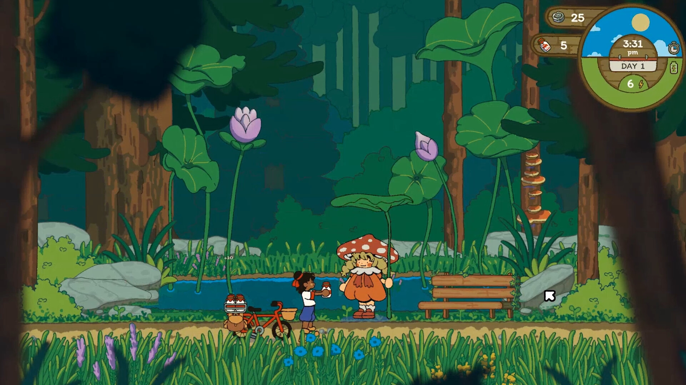
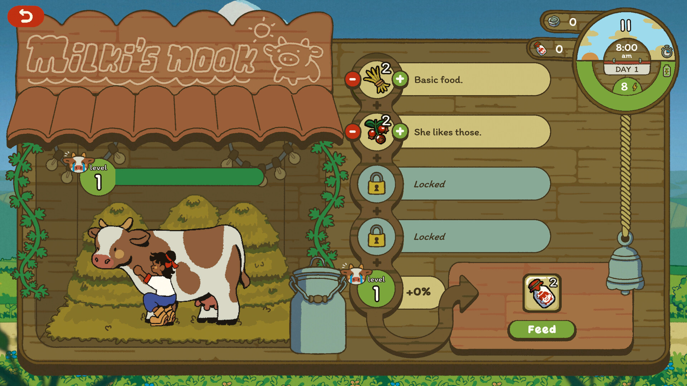
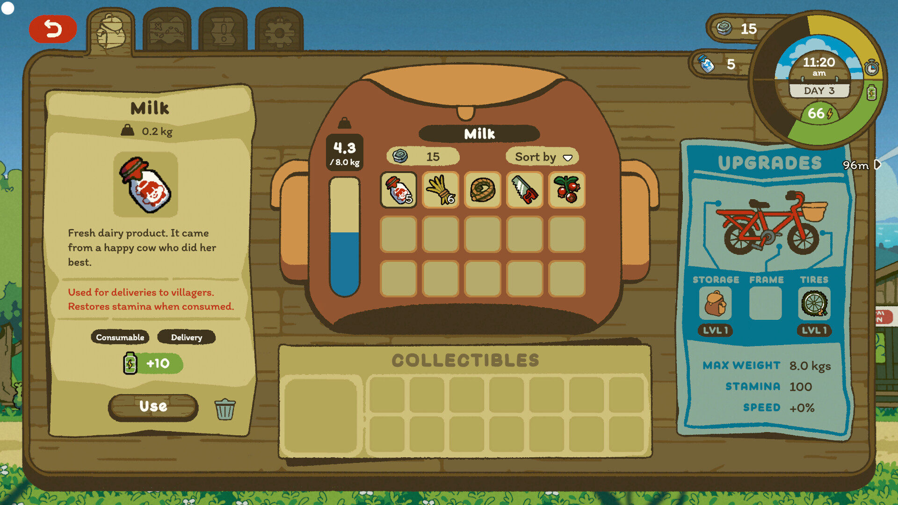
【お知らせ】
本事象につきまして、不正アカウントの異常アクセスによる障害が原因であることを確認したため、該当アカウントに暫定対応を実施いたしました。
引き続き、同様の事象がないか、監視を行ってまいります。
ご迷惑をおかけしておりますこと、お詫び申し上げます。
※詳細はお知らせをご確認ください。
#プロセカ
プロジェクトセカイ カラフルステージ！ feat. 初音ミク【プロセカ】
@pj_sekai
【お知らせ】
みんなでライブ及びプライベートルームにて、正常に進行しない場合がある事象を確認しております。
本事象につきまして、現在早急に原因の調査を進めております。
本事象が発生した場合は使用中のルームを解散の上、再度ルームの作成をお試しいただきますようお願いいたします。
レインうるせぇwwwwww #チー付与
金正恩氏、中朝国境近くのスキー施設を視察 ジュエ氏らもゲレンデに
https://nikkei.com/article/DGXZQOGM171RL0X11C26A1000000/?n_cid=SNSTW005&n_tw=1794928713…
与正氏やジュエ氏がスキーを楽しむ様子も写真で伝えられました。
金正恩氏、中朝国境近くのスキー施設を視察 ジュエ氏らもゲレンデに
バリオス、ほんまにいいアドバイスするいい奴だしなんならレインを追放したのも一理あるくらいに思えてくるな…… #チー付与
NGK、海外転勤に一時金300万円 共働き増加や物価上昇に対応
https://nikkei.com/article/DGXZQOFD1751L0X11C26A1000000/?n_cid=SNSTW005&n_tw=1794928485…
海外転勤者には赴任時に200万円、帰任時に100万円を支給します。
国内転勤者には最大100万円を支給。共働き世帯の増加や物価上昇が続くなか、社員の待遇を改善し機動的な人材配置につなげます。
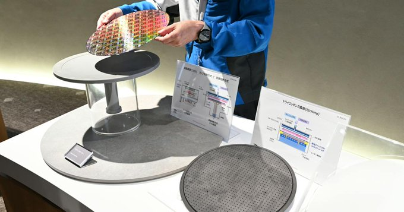
NGK、海外転勤に一時金300万円 共働き増加や物価上昇に対応
全てのクソ長タイトルのなろう系アニメでこれやって欲しいわ。アニメ中にタイトル全部読み上げるの面白すぎるので #チー付与

タイトルロゴそのまま出すのやめろやwwwwww #チー付与
レインも最初のうちは許容範囲の真面目な奴だった←バリオス本当か？？本当に最初は許容範囲だったか？？？？ #チー付与

日々は過ぎれど飯うまし 始まってた #ひびめし
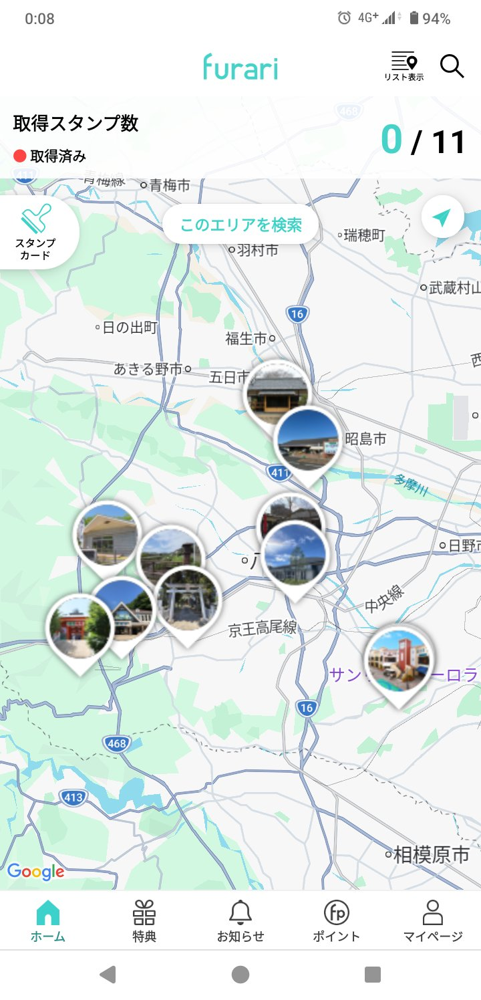
メガネだけのプレートと、メガネをかけてないオーイシさんのプレートを2枚重ねるとメガネをかけた状態になるようにした方が良かったのでは？
大石昌良【オーイシマサヨシ】
@Masayoshi_Oishi
塩対応の公式さんがキャンペーンで作った俺のアクスタがすごく塩対応

とりしま (Sub I/O)さんがリポスト
||◤ ◥||
#AtsushiNishigori × #CloverWorks
オリジナルアニメーション企画 #GROTESQUE（仮）
2025 近日公開
||◣ ◢||
#GTQ123
#錦織敦史
#CloverWorks

しごおわ、、おわ、、？ どしゃぶり ぬわー
日本経済新聞 電子版（日経電子版）さんがリポスト
アセマネOneがテック株投信 ヘッジファンド型、下げ相場でも利益追求
アセマネOneがテック株投信 ヘッジファンド型、下げ相場でも利益追求
とりしま (Sub I/O)さんがリポスト
>『GROTESQQQUE-グロテスク-』は10日間で動員5万5453人＆興収8779万1000円
もうちょっと…入っても…いいんじゃないか!?
とは思うものの、アニプレックスの力をもってしても完全アニメオリジナル＆オムニバス映画だとこんなもんなのか…？
とりしま (Sub I/O)さんがリポスト
🐙と🦊の体格差について考えながら…妄想ｒｋｇｋ
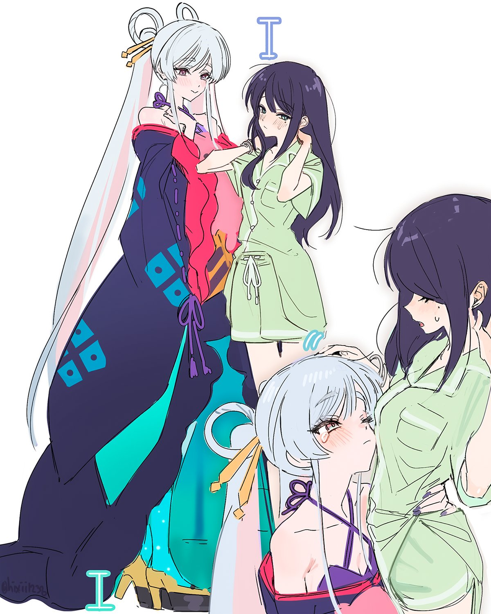
ScreenX 劇場で ScreenX 以外の上映ってできるんかな
すぺ
@spe_cpk
109新宿、川崎、ゆめが丘：1日5回
109系のやる気がガチすぎる
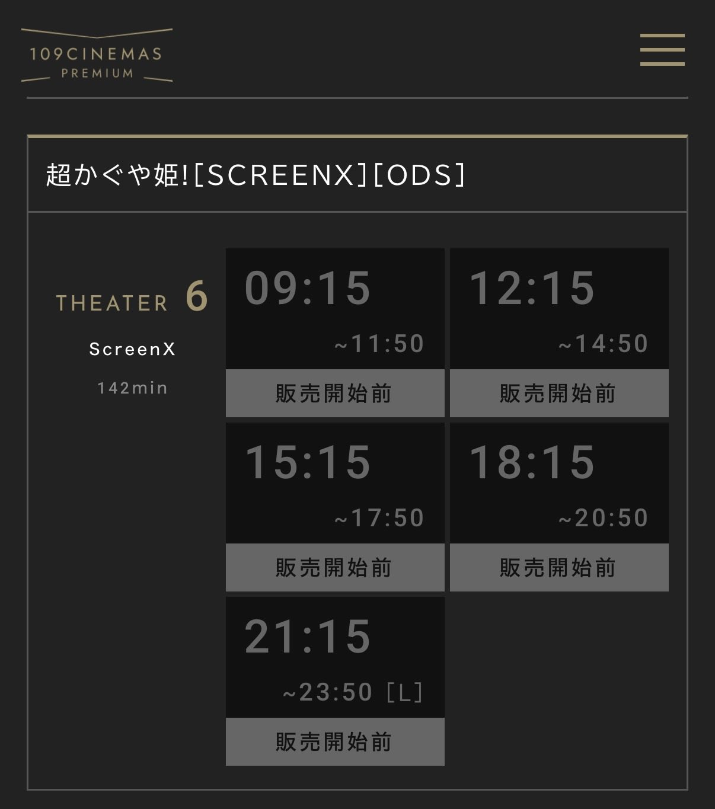


トウカイのクマさんがリポスト
ハロプロ最高！！！
あおちゃん来てくれてありがとうね👶🏻💗
楽屋トークもカラオケも楽しかった〜
#なす録

あ…ありのまま 今 起こった事を話すぜ！
『AIにapk渡したら動くipaができた』
な… 何を言っているのか わからねーと思うが
おれも何をされたのか わからなかった…
頭がどうにかなりそうだった… 催眠術だとか超スピードだとかそんなチャチなもんじゃあ 断じてねえ
もっと恐ろしいものの片鱗を味わったぜ…
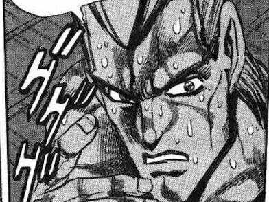
渡辺浩弐さんがリポスト
【11/22（日）実施】代官山 蔦屋書店で開催される「#ミステリカーニバル vol.5」の2日目＝11/22（日）15:30〜、星海社・太田克史による「担当作品裏話コメントコーナー」を実施します！ ブースにある太田の担当作を購入された方に、作品についての裏話をちょこっとコメントいたします。
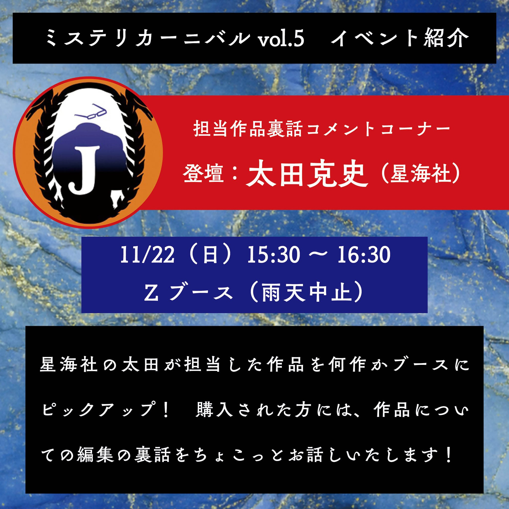
ミステリカーニバル
@mystery_cnv
【11/21（土）＆11/22（日）開催】運営＝星海社、場所＝代官山 蔦屋書店でイベント「#ミステリカーニバル vol.5」が開催。豪華23名の作家の方々にご参加いただく大サイン会は、予約なしで参加可能！ 暗号クイズ企画やサイン本販売、サブイベントなどもございます。ぜひお気軽に足を運んでください！

渡辺浩弐さんがリポスト
【11/21（土）＆11/22（日）開催】
代官山 蔦屋書店でイベント
#ミステリカーニバル vol.5 が開催！
◆11/21（土）大サイン会参加者
柾木政宗／野宮有／久永実木彦／木爾チレン／芦沢央／伊吹亜門／柴田勝家／飛鳥部勝則／渡辺浩弐／三日市零／井上雅彦／友井羊（敬称略）
予約なしで参加可能です！
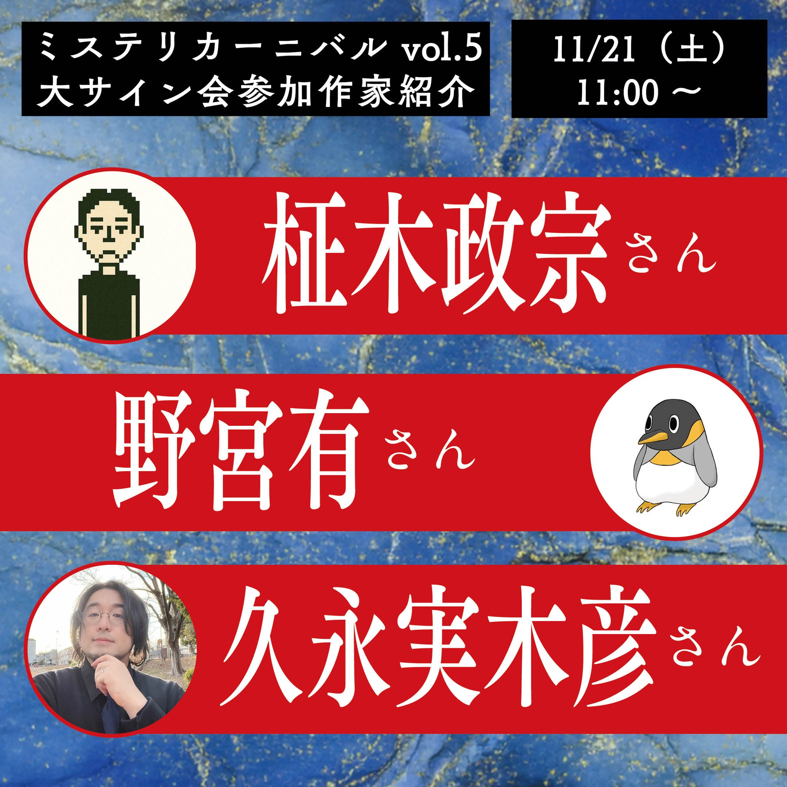


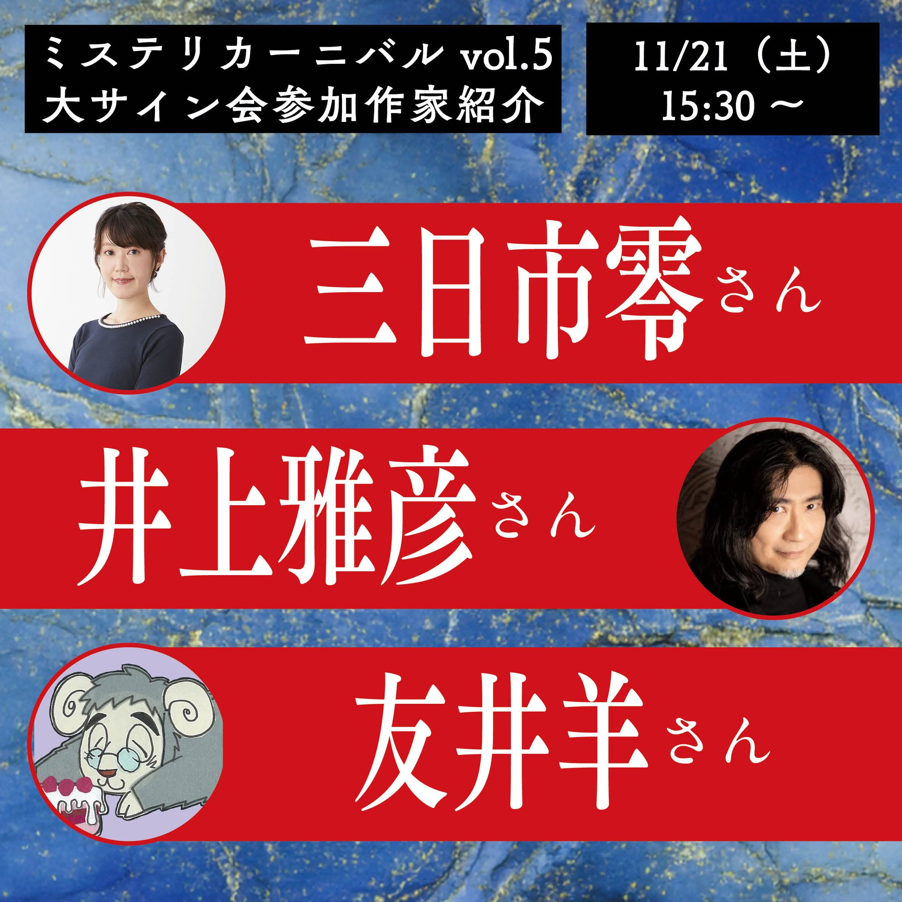
ミステリカーニバル
@mystery_cnv
【11/21（土）＆11/22（日）開催】運営＝星海社、場所＝代官山 蔦屋書店でイベント「#ミステリカーニバル vol.5」が開催。豪華23名の作家の方々にご参加いただく大サイン会は、予約なしで参加可能！ 暗号クイズ企画やサイン本販売、サブイベントなどもございます。ぜひお気軽に足を運んでください！
nasuuuさんがリポスト
NECの「バザールでござーる」が35年の歴史に幕。公式サイトは11月24日で閉鎖されます。懐かしのキャラクターの歴史を振り返るとともに、最後にダウンロードできる壁紙やグッズ用素材も紹介します。

日本酒造り7日目、完成。
どぶろくを濾過したので清酒が完成。
濾過すると雑味が少ないので、アルコールをより感じる。
体感アルコール度数は8%から10%くらい。
日本酒は難しいと言われるけど、美味しく作るのは難しいけど、作るだけならそうでもない。
彼女曰く「思ってたより美味しい」

ひろゆき
@hirox246
【日本酒造り6日目】
酸味と雑味のある「どぶろく」の味のが好きなんですが、濾過して透明な日本酒を作るのが目的なので濾過。
タオルはお酒吸い込みすぎるし、出て来たのがタオルの味がするので失敗。
漉すと体感アルコール度数は高く感じる。
雑味でアルコール感が薄れてたのかも。 x.com/hirox246/statu…
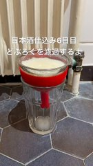
xで画像が20枚を載せることができるようになった そんなに載せる機会はないけど、何かのコンテンツを紹介しやすくなったのか。まあ、4枚だけ張って、1ポストとかする必要がなくなったのは便利になったね
ピカチュウがいっぱい！約3,000種の女性コレクター記録がギネス認定
https://gamespark.jp/article/2026/11/17/174993.html?utm_source=twitter&utm_medium=social&utm_content=tweet…


houzakikai@さんがリポスト
20枚スクショ載せられるようになったみたいだから張ろうと思ったけど色々整理しちゃってそんなに残ってなかった😇
#Minecraft #MiniaTuria


houzakikai@さんがリポスト
🇯🇵メンバーリスト🇵🇾
日本代表、森保体制ラストマッチのスタメン発表！ 佐野兄弟が中盤でコンビを形成…最前線には後藤啓介
https://soccer-king.jp/news/japan/national/20261117/2229028.html…
🗣編集部より
「ブラジル戦から鈴木彩艶以外の10名を変更。森保ジャパンのラストマッチです」
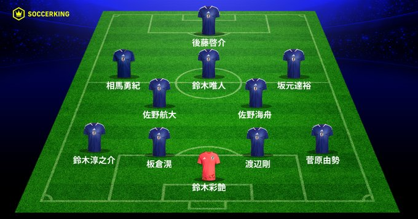
日本代表、森保体制ラストマッチのスタメン発表！ 佐野兄弟が中盤でコンビを形成…最前線には後藤啓介 | サッカーキング
#サッカー日本代表 森保監督の最後の試合が・・・パラグアイに負けてる。ブラジルに勝利した日本代表が嘘のようにボロ負けした みたいことになってるな
頭まるごと透明な魚「デメニギス」。初の4K動画が撮影される
透明な頭、上向きの目玉が特徴的な深海魚デメニギス。初の4K撮影に成功しています。ずっと上向いていて大丈夫なの？

頭まるごと透明な魚「デメニギス」。初の4K動画が撮影される | ギズモード・ジャパン
発売初週で60万本突破！鬼教師vsイタズラ生徒の対戦パーティ『Worst Class Ever』初の大型アプデで新マップ「修学旅行バス」が追加
https://gamespark.jp/article/2026/11/17/174992.html?utm_source=twitter&utm_medium=social&utm_content=tweet…
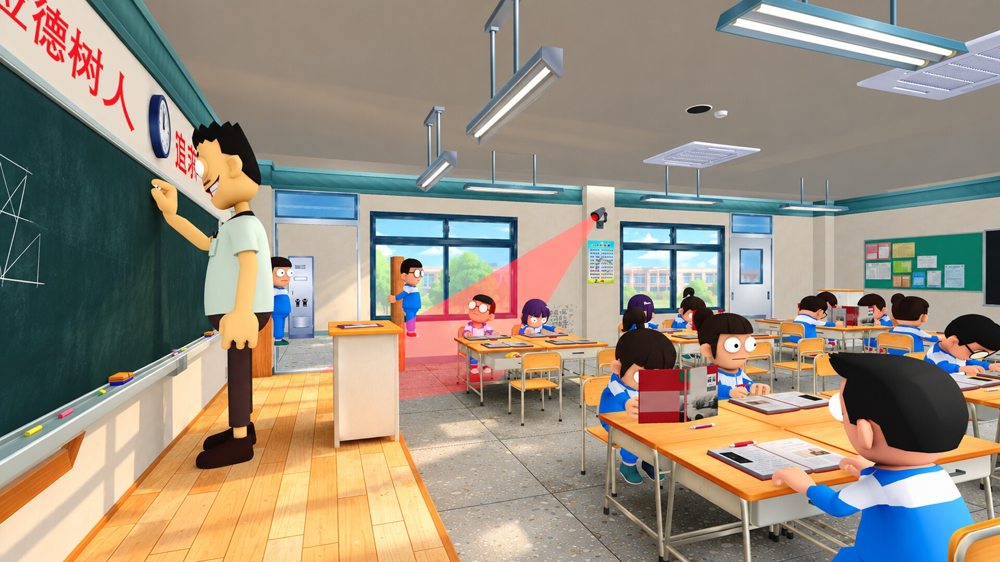
日本経済新聞 電子版（日経電子版）さんがリポスト
楽天証券に不正アクセス、年収など顧客情報漏洩 最大447万口座分

楽天証券に不正アクセス、年収など顧客情報漏洩 最大447万口座分
とりしま (Sub I/O)さんがリポスト
しかもこれ、ちゃんと時間被らないようにしてくれてるから1日で5回見るとかいう暴力みたいなことが出来るんだよな
すぺ
@spe_cpk
109新宿、川崎、ゆめが丘：1日5回
109系のやる気がガチすぎる
とりしま (Sub I/O)さんがリポスト
いま「新作」が無いんですよね。
他の上映作品をみると、進撃の巨人、アベンジャーズ、スパイダーマン…みたいな感じで。
とりしま (Sub I/O)さんがリポスト
109新宿、川崎、ゆめが丘：1日5回
109系のやる気がガチすぎる
現代の宗教行事？なのか
まるぃも
@marulimoai
キンプリのときに何回も行ってたけど、やはり応援上映はかなり身体的というか宗教の要素多いですよね。運動部の声出しみたいなのよりは自由感ありつつも、おのおのが声で集団と調和していくの面白い文化だ
テスラさんがリポスト
水と女の子を描くことが好きです


とりしま (Sub I/O)さんがリポスト
キンプリのときに何回も行ってたけど、やはり応援上映はかなり身体的というか宗教の要素多いですよね。運動部の声出しみたいなのよりは自由感ありつつも、おのおのが声で集団と調和していくの面白い文化だ
とりしま (Sub I/O)
@iotorishima
ちょかぐで初めて応援上映行ったけど、阿吽の呼吸による感情の一体感を味わうとか祈り、って意味で真に神輿みんなで担いだりみたいな祭りに近い気がした
ライブとも近いけど登壇者がいるわけではない以上、より宗教的な「祈り」のニュアンスが強いきがする x.com/spe_cpk/status…
とりしま (Sub I/O)さんがリポスト
史上最高のYouTuberバイオリニストがエア・鳥の詩を演奏してる
今を生きててよかった
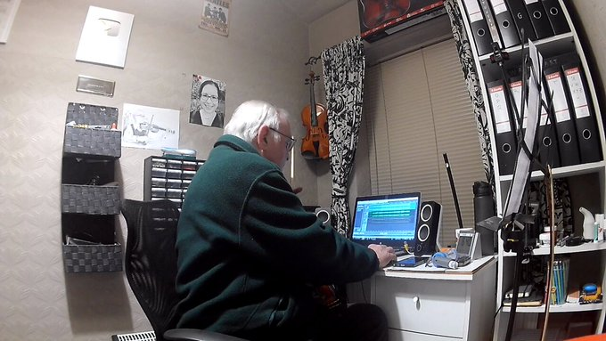
パナソニック、映像制作用のシネマカメラ YouTuberなどの需要狙う
パナソニック、映像制作用のシネマカメラ YouTuberなどの需要狙う
ふぇむさーどさんがリポスト
学マスに新規実装された「氷渡香名江」さん
2回目のプロデュースでトゥルーエンド迎えてエンディングをみた
なんか2回でEDだとストーリー爆速で終わった感が
>学園アイドルマスター #学マス
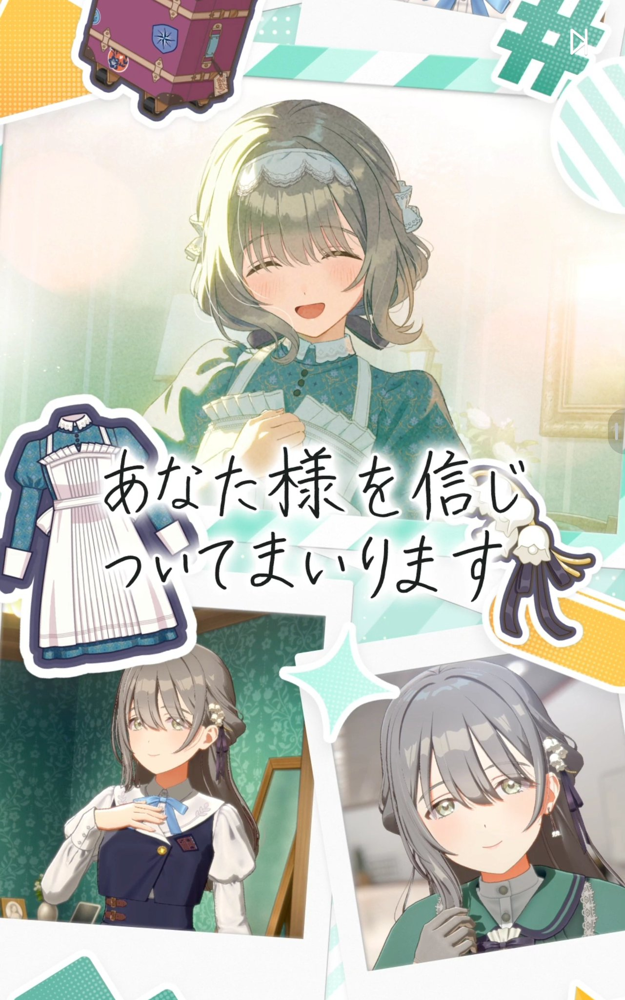


kobaya
@ts_kobaya
「氷渡香名江」さんが実装されたらしいので
ガチャ引いてみた(2枚抜き!)
めちゃくちゃ久しぶりのプロデュース
「やり方覚えてねーよ!」と思ったけど
PLvが高すぎるので最終試験もぶっちぎりじゃん…
逸材過ぎるでしょ…
初回は強制ノーマルエンドなんだけど凄く違和感
>学園アイドルマスター #学マス x.com/ts_kobaya/stat…

つば二郎@きいちゃんすこすこ侍さんがリポスト
テスト配信です！ 音聞こえるかとか確認ご協力いただける方いればよろしくお願いしますー！
モイ！Androidからキャス配信中 -
生存報告793
日本経済新聞 電子版（日経電子版）さんがリポスト
日本政府、韓国の曺国元法相を入国拒否 2年半前に竹島上陸
日本政府、韓国の曺国元法相を入国拒否 2年半前に竹島上陸
日本経済新聞 電子版（日経電子版）さんがリポスト
フレックスタイム制、通常勤務との混在容認へ 厚労省検討
フレックスタイム制、通常勤務との混在容認へ 厚労省検討
日本経済新聞 電子版（日経電子版）さんがリポスト
出版取次のトーハン、取引条件見直し「年度内に全2000社に打診」
出版取次のトーハン、取引条件見直し「年度内に全2000社に打診」
日本経済新聞 電子版（日経電子版）さんがリポスト
ワールド、 顧客情報が漏洩 プレイド「KARTE」への不正アクセスで
ワールド、 顧客情報が漏洩 プレイド「KARTE」への不正アクセスで
つば二郎@きいちゃんすこすこ侍さんがリポスト
2026年11月17日午前2時23分。
江夏豊が新たなフィールドへ旅立ちました。
豪快なピッチングも、本と映画を愛する横顔も、全てが絵になる78年でした。
画面越しに寄り添ってくださった皆さま、長い間お付き合いいただき、本当にありがとうございました。
心より感謝申し上げます。
『ラブ上等』出演者の有名キャバ嬢が逮捕された時のハンドサイン「闇界隈のやばいサインだ」と話題沸騰→本人がどういう意味のポーズなのか回答 #酷い話・事件
『ラブ上等』出演者の有名キャバ嬢が逮捕された時のハンドサイン「闇界隈のやばいサインだ」と話題沸騰→本人がどういう意味のポーズなのか回答 - オレ的ゲーム速報@刃の記事ページ
jin115.com
西連寺亜希(さいれんじあき)さんがリポスト
【コラボ乗務員紹介】
紅ずきん｜Red Hood
CV: #西連寺亜希
「こんな所にいたんだ。案外早く見つかったわね。……まぁ、あの『羽根』が導いてくれたお陰でもあるけれど。」
――SSR乗員募集「森の外｜紅ずきん」ピックアップはアップデート後より獲得可能！
————————
#レゾナンス #レゾナス #BLACKSOULSII #BLACKSOULS


『原神』と日本マクドナルドが初コラボ！ヴァレサ＆エスコフィエの限定パッケージや、「風の翼」などゲーム内アイテムを提供
https://gamespark.jp/article/2026/11/17/174991.html?utm_source=twitter&utm_medium=social&utm_content=tweet…

まんきつは時代劇みたいなもんなんだよね
『レゾナンス：無限号列車』×『BLACK SOULSⅡ』コラボ
【 紅ずきん 】役が
"CV: 西連寺亜希さん"
という理由だけでこのゲーム触れてみた
(ガチャ単発2連目で紅ずきんが引けた…私の豪運すご)
(めっちゃダウナー系ね)
ストーリーとゲームシステムよく分かってない
#レゾナンス #レゾナス #BLACKSOULS


西連寺亜希(さいれんじあき)
@renren_aki12
📢お知らせ📢
『レゾナンス：無限号列車』×『BLACK SOULSⅡ』 コラボに【 紅ずきん
】役で出演させていただきます！
次回アップロードをお楽しみにー！！
#レゾナンス #レゾナス #BLACKSOULSII #BLACKSOULS x.com/resonancejp/st…
なるせひろのりさんがリポスト
#一生忘れることのない神CMを貼る
米国版XBOXのTVCM
攻めに攻めてておもろいけど、日本じゃ無理だなこれ😂👍
モバイルAIペット誕生。話しかけるとSwitchBot家電もうごかせる
SwitchBotのふわふわな手のりAIペット「KATAフレンズ mini」をご紹介します。バッグチャームとして持ち歩ける可愛らしさだけでなく、声で家電操作もできる賢い機能の魅力や価格プランを分かりやすく解説します。

モバイルAIペット登場。話しかけるとSwitchBot家電もうごかせる | ギズモード・ジャパン
“圧倒的に好評”高湿度・激重感情RPG『勇者パーティはぜんめつしました。』1週間で販売5万本到達！
https://gamespark.jp/article/2026/11/17/174990.html?utm_source=twitter&utm_medium=social&utm_content=tweet…

大浴場あるビジホいいよね〜！ビジホの大浴場、早朝の6時とか空いていること多いです。その時間に起きているからチェックアウト11時のありがたさはあんまり分かっていない…。
"本当の幸せ"を知らないから社会が「幸せ」とラベリングしたものを「これが幸せだ」と唱えながら消費するしかないんだ。
いただきます。

ポン☆潤々さんがリポスト
こういうホテル好き

なるせひろのりさんがリポスト
いろんな犬動画見てきたけどこれ見て過去1腹抱えて笑ってるずるすぎる…
今日份温柔
@heydudetd
休みの日は、これで十分。 #犬のいる暮らし
副業前に本業できるなぁ…
ポン☆潤々さんがリポスト
シネマフロンティアのバトフェス初日早朝すぎてわろてる 始業開始よりも早いんですけど
なるせひろのりさんがリポスト
休みの日は、これで十分。 #犬のいる暮らし
レイド楽しいね
魔法使い系統でタンク職あるの珍しいよね
タンクだらけだったね
実はゼロの使い魔見たことないから見るか
ふぇむさーど
@Amaurot_003
楽しかったアニメを楽しかったからという理由で見返すのは負けだと思ってるがdアニメストアぐるぐるしても見たいとピンとくる未視聴のアニメがない
楽しかったアニメを楽しかったからという理由で見返すのは負けだと思ってるがdアニメストアぐるぐるしても見たいとピンとくる未視聴のアニメがない
東京事変 - 閃光少女
作業中なので本日のBGMその２

Artist:東京事変/Tokyo IncidentsTitle:閃光少女/Senkou Shoujo-Flash Girl20...
youtube.com
町田にラボだけでなく晴れる屋2も出来ることを記事で知るという…。
そもそもロボットアニメって男キャラ多めだけど、そもそもジャンプアニメ以外で男性がメイン貼るアニメが弱くなってるし、なら美少女×ロボットになるけど、そもそもロボット掛け合わせずに美少女だけでアニメやる方が、広い客層も取れて作るのも楽だから…
ふぇむさーど
@Amaurot_003
ロボットアニメが減ったのは、プラスチックの板に美少女印刷する方が、客層も広くプラモデル売るよりも儲かるからです。
なんかいそもそも言うんだこいつは
ポン☆潤々さんがリポスト
町田ジョルナ「トレカ」「アニメグッズ」「ホビーショップ」専門店4店舗が相次ぎ出店へ
https://kawariyuku-machida.com/article/93546.html…
#町田市 #町田駅 #トレカ #アニメグッズ #ホビー
町田ジョルナ「トレカ」「アニメグッズ」「ホビーショップ」専門店4店舗が相次ぎ出店へ 【変わりゆく町田の街並み＜地域情報サイト＞】
kawariyuku-machida.com
え、1本じゃなくて2本？ マグネット式USB-Cケーブル（100W）がペアで682円
ADAM elementsのマグネット式USB-Cケーブルがセールでお得。100W給電対応で1本あたり341円。バイナウ。

え、1本じゃなくて2本？ マグネット式USB-Cケーブル（100W）がペアで682円 | ギズモード・ジャパン
Benさんがリポスト
/／
#アニメアズリー
プレゼントキャンペーン✨
\＼
アイリーン役 #釘宮理恵 さん直筆サイン入り色紙を2名様にプレゼント🎁
[応募方法]
①@asley_animeをフォロー
②本投稿をリポスト
[応募期間]
11月22日(日)23:59まで
▼詳細はこちら
https://asley-anime.com/post-32/
日米豪印、重要鉱物の輸出規制「深刻な懸念」 首脳会議で中国念頭に
日米豪印、重要鉱物の輸出規制「深刻な懸念」 首脳会議で中国念頭に
緊急地震速報の誤報に2つの不具合 気象庁、震度を過大に推定

緊急地震速報の誤報に2つの不具合 気象庁、震度を過大に推定
貝さんさんさんがリポスト
アニメ「ヤニねこ」の打ち上げめちゃくちゃ楽しかったです！
関係者のみなさんお疲れ様でした！！！
#ヤニねこ


GPT-6.2、今夜来るか？👀
Fable 5.2 の公開を約1時間前に予告したリーカーが「6.2-Astra and 6.2-Sol today」と投稿。各所で期待が高まっています。
いまの GPT-6.1 Sol の評判は、好評 31%・不評 69%（Xの反応544件を分析）。
6.2 はこれを変えられるか。

GPT-6.2 は、6.1 Sol の評判を変えられるか。
ポン☆潤々さんがリポスト
★☆★☆★☆★☆★☆
劇場版SideMムビチケ
販売終了日まで
あと2日！
★☆★☆★☆★☆★☆
プロデューサーさん！
公開日の座席予約にムビチケ前売券の利用がお得ですよ！
MOVIE WALKERアプリの11月分クーポンの利用はお済みでしょうか？
新規DLだと更にお得！
『劇場版 アイドルマスター SideM F＠NTASTIC BATTLE FES ～Who goes first～』のムビチケの購入はこちら。お前らだから負けたくないー究極バトル開幕！
ticket.moviewalker.jp
タッチ機能付きのMacBookって、こう使うのかー、みたいな？
Seeed Studio
@seeedstudio
あなたのロボットアームが動きます。🦾
今度はそれに目と脳を追加してください。👁️🧠
reBot Cyclopsをご紹介します：reCamera + ロボットアームで、視覚と制御を統合します。
🔧 デモを超えて構築 —下の返信にあるリファレンスデザインを探求してください。👇
#Solution #reCamera #Robotics#ComputerVision#EdgeAI

Sさんがリポスト
╭━━━━━━━╮
メインビジュアル
✨公 開✨
╰━ｖ━━━━━╯
#てんびん ASMR
「転校先の清楚可憐な美少女に癒される件」
二階堂 春希
CV:長谷川育美さん
発売は11月20日（金）に決定！
詳細はこちら↓
https://dlsite.com/home/work/=/product_id/RJ01763568.html…

なるせひろのりさんがリポスト
超過激派二郎ラーメン中毒者である友人を救いたいシーン(吹き替え)
クリスタの素材アップロードして一晩してから審査通った後に「楽器」と入れ忘れている事に気が付いたので「楽器」とタグを入れたら再審査になってしまってる
先日の問題が尾を引いているのがよく判る・・
審査のお手数かけちゃってすいません＞＜
韓国の没入型美術館「アルテミュージアム」18日開業 愛知県知多市で
https://nikkei.com/article/DGXZQOFD174H80X11C26A1000000/?n_cid=SNSTW005&n_tw=1794915244…
波や花、光など自然を映像や音、香りで表現。愛知県が日本有数の産地である「招き猫」を取り入れ、客が塗り絵したネコが映像の中で動くしかけの作品も展示します。
韓国の没入型美術館「アルテミュージアム」18日開業 愛知県知多市で
働きたくないけど注目はされたい！マルチエンディング心理ホラー『承認欲求ニート姫』Steamストアページ公開
https://gamespark.jp/article/2026/11/17/174989.html?utm_source=twitter&utm_medium=social&utm_content=tweet…
Benさんがリポスト
🎤配信情報🎤
『シャインポスト Be Your アイドル！』のユニット別LINE着せかえが販売開始！
お気に入りのユニットデザインにLINEを着せかえよう💕
🌟TINGS(Vol.2)
https://line.me/S/shop/theme/detail?id=61cf064b-51c1-431d-93d4-e09131b226e2…
⚡HY:RAIN (Vol.3)
https://line.me/S/shop/theme/detail?id=784ecb13-90a1-4c6e-88d5-f2c5f9e73a32…
FFF(Vol.4)
https://line.me/S/shop/theme/detail?id=8a5913bc-6635-4fdb-b328-a53fba19994d…
🦄ゆらゆらシスターズ(Vol.5)
https://line.me/S/shop/theme/detail?id=b11cf584-c1ba-4b9b-877b-7f1ddf08b095…
🌻ひまわりシンフォニー(Vol.6)
https://line.me/S/shop/theme/detail?id=8f5fa774-dc44-4d96-8c02-376a62e6d3b2…
💎LAUGH DiAMOND(Vol.7)
https://line.me/S/shop/theme/detail?id=56f92cc6-b235-42ed-abd8-1a822ca457cd…
#シャインポスト
Benさんがリポスト
いまラグエル役の天城サリーちゃんがYouTubeで楽園追放グッズ開封式(?)してます🔧
#楽園追放 #SallyTube

Enjoy the videos and music you love, upload original content, and share it all with friends, family, and the world on YouTube.
youtube.com
MICHEE-N（ミッチー・Ｎ）さんがリポスト
新橋の大統領、炎上してこんな感じになってるなｗ


クドウ秘境メシ
@kudo_pon
日本一規則が厳しい焼鳥屋「大統領」マジ焼鳥がスッゲエエエエエエエエエエエエエエエエエエエエうますぎるンだよなああああああ！！！！
＜ルール＞
1人客禁止
1軒めじゃない人禁止
最低3杯飲まない客禁止
酒が弱い人は禁止
チョイ飲み禁止
アルコール薄め罰金(濃いめは無料)
酒シェア禁止 x.com/tokyo_butayaro…

Benさんがリポスト
˚⊹ ₊ ˚ ⊹₊ ˚‧︵‿₊୨ ᰔ ୧₊‿︵‧ ˚ ₊⊹ ˚ ₊⊹⊹ ₊ ˚
フォロー＆リポストキャンペーン
₊⊹˚ ₊⊹ ˚ ₊⊹˚ ₊⊹ ˚ ₊⊹ ˚ ₊⊹˚ ₊⊹ ˚ ₊⊹˚ ₊⊹ ˚ ₊
OPテーマソング「シュガーソルト」
MV100万回再生記念！
佐藤こはる×オーイシマサヨシ
コラボイラスト アクリルスタンドを
抽選で3名様にプレゼント！
♡応募方法♡
① @shioamaofficial をフォロー
② このキャンペーンポストをリポスト
♡応募期間♡
2026年11月17日(火)～2026年11月23日(月)23:59
#しおあま
#塩対応の佐藤さん
#オーイシマサヨシ
なるせひろのりさんがリポスト
インフルエンサー「あっすん」風営法違反の疑いで逮捕 暴力団に売り上げ流れたか
インフルエンサー「あっすん」風営法違反の疑いで逮捕 暴力団に売り上げ流れたか
なるせひろのりさんがリポスト
PS5 多言語対応モデル「PlayStation 5 デジタル・エディション」CFI-2000B01、ソニーストアで「販売終了」に。「入荷終了」から、取り扱い終了へ。

PS5 多言語対応モデル「PlayStation 5 デジタル・エディション」CFI-2000B01、ソニーストアで「販売終了」に。「入荷終了」から、取り扱い終了へ。
貝さんさんさんがリポスト
【COMMISSION】
制作プロダクションBOLTにて、氷渡香名江「メタモルフォーゼ」EPのアートワークデザインを担当いたしました。
ASOBINOTES(アソビノオト)
@ASOBINOTES876
📢Release Info📢
#氷渡香名江「メタモルフォーゼ」
各種音楽配信サービスにて、EP配信決定！
⏱11/24 (Tue) 0:00 Release
【Track List】
▶メタモルフォーゼ
▶初 [氷渡香名江 Solo ver.] (Game Size)
▶Campus mode!! [氷渡香名江 Solo ver.] (Game Size)
#学マス
自分でデジタルトレカ作ろうとすると、どうやってもハースストーンのメカニクスが正解すぎて、にてしまう問題
なるせひろのりさんがリポスト
セブンス最終話が配信されました。自分の力不足でセブンスを最後まで描き切る事が出来ず申し訳ありませんでした。続きは原作を読んでいただければ…としか言えない事も悔しく思ってます。。よろしくお願いします。 https://comic-walker.com/detail/KC_005568_S/episodes/KC_0055680003300011_E?episodeType=latest… #カドコミ

【第30話】セブンス｜カドコミ (コミックウォーカー)
楽園追放のカレンダー、発送が遅れてるけど、大丈夫かな？到着予定の範囲が広すぎるあたりが不安。

急に明日届くことになった。
ロボットアニメが減ったのは、プラスチックの板に美少女印刷する方が、客層も広くプラモデル売るよりも儲かるからです。
はむちゃんとキスできるハムスター動画🐹

いま百合姫で特に熱いと噂の彩純ちゃん＞RP
貝さんさん
@morikai3
20年以降で百合姫連載開始時から読んでいて単行本も買ってる作品、何気に「彩純ちゃん」だけかもしれない（それでいいのか？）（いいじゃん）＞RT
貝さんさんさんがリポスト
11月18日発売の「コミック百合姫1月号」に『彩純ちゃんはレズ風俗に興味があります！』37夜目が掲載されます〜！✨
先月に続き今月も載ります😋
Kindleの連載版にて36〜37話が同時配信されるみたい？なのでよろしくお願いします〜
なるせひろのりさんがリポスト
マイナ免許証、職員の入力ミス一発で運転免許まで道連れに失効する。
岡山・高梁市で実際に起きた話や。
・男性が10/22に親の死亡届を提出
・職員が死亡者と届出人を取り違え、本人を死亡扱いに→マイナカードが自動失効
・免許をひも付けとったから、運転免許も同時に無効
ネットでは市が「再発行してやるからタクシーで取りに来い」と突き放したと拡散しとるけど、逆やで。
免許が失効中＝運転したら無免許になるから、市は「失効中は運転せず、タクシーで」と求めたんや。
カード一枚にまとめとくと、こうやって巻き添えを食らう。ワイも覚えとくわ。
発表翌日にAIで模倣もめげずに開発継続中！拳で脱出する脱獄シム『Escape the Walls』デモ版公開
https://gamespark.jp/article/2026/11/17/174988.html?utm_source=twitter&utm_medium=social&utm_content=tweet…
破壊した壁からこちらを狙う存在や破壊を拒む粉砕機のような壁など本家にふさわしい様々な要素が用意されているようです。


【お知らせ】
みんなでライブ及びプライベートルームにて、正常に進行しない場合がある事象を確認しております。
本事象につきまして、現在早急に原因の調査を進めております。
本事象が発生した場合は使用中のルームを解散の上、再度ルームの作成をお試しいただきますようお願いいたします。
ご迷惑をおかけしておりますこと、お詫び申し上げます。
※詳細はお知らせをご確認ください
#プロセカ
JINSやワールドで顧客情報漏洩 プレイドでの不正アクセス被害が波及

JINSやワールドで顧客情報漏洩 プレイドでの不正アクセス被害が波及
元事務次官「断言する。日本に戦争を仕掛ける国などどこにも無い！」 #韓国・中国
元事務次官「断言する。日本に戦争を仕掛ける国などどこにも無い！」 - オレ的ゲーム速報@刃の記事ページ
jin115.com
Torishima / INTPさんがリポスト
【「JINS」最大1829万件の情報流出】
「JINS」最大1829万件の情報流出 - Yahoo!ニュース
Torishima / INTPさんがリポスト
【悲報】
マネックス証券も情報漏洩...
最大113万件...
これほんま誰のためにやってんだろうな…
sabakichi
@knshtyk
本来期待していた成果はほとんど出ることがなく、代わりに誤検出で誤BAN率を劇的に高めるソリューションだ。こういうものをやりはじめるとその企業が誰にいい顔をしたいのかが見えてくるし、企業としての悪い意味での成熟フェーズを感じる x.com/itmedia_news/s…
Torishima / INTPさんがリポスト
本来期待していた成果はほとんど出ることがなく、代わりに誤検出で誤BAN率を劇的に高めるソリューションだ。こういうものをやりはじめるとその企業が誰にいい顔をしたいのかが見えてくるし、企業としての悪い意味での成熟フェーズを感じる
ITmedia NEWS
@itmedia_news
OpenAI、児童性的虐待コンテンツ（CSAM）検出ツールを公開 ChatGPTで探すと24時間アカウント停止の警告も
https://itmedia.co.jp/news/article/2611/17/2000003254/…
他人との交流を強要しない買い切り型MMORPG。雲の上に家を建て、知らない人と焚火を囲むスローライフシムが“非常に好評”で配信―採れたて！本日のSteam注目ゲーム
https://gamespark.jp/article/2026/11/17/174987.html?utm_source=twitter&utm_medium=social&utm_content=tweet…
・『どうぶつの森』と『Sky 星を紡ぐ子どもたち』を足したようなゲーム
・他プレイヤーは影として表示されコミュニケーションを取ると色が宿る
・雲より高い山の上に隠れ家を建てられる


Torishima / INTPさんがリポスト
【ムービルより皆さまへ 最後のお知らせ】
9月末の閉館後も残していたムービル公式Xですが、 11月30日（月）をもって終了することとなりました。最後に、ムービル最終日の景色を少しだけ😌📸
閉館のお知らせ以降、リプライや引用リポストでお寄せいただいた温かいメッセージは、
スタッフ一同、一つひとつ大切に拝見しておりました🥹
ムービルでの思い出を綴ってくださった言葉も、心に残っています。
このアカウントで皆さまとつながれたことも、 ムービルの大切な思い出のひとつです。
そしてこれからも、映画館で皆さまとお会いできましたら幸いです🎬
神奈川県内の１０９シネマズ各劇場の公式Xもぜひのぞいてみてください👀💫
#109シネマズ港北 @109Kouhoku
#109シネマズゆめが丘 @109_yumegaoka
#109シネマズ川崎 @109_kawasaki
#109シネマズ湘南 @109Shonan
#109シネマズ 全体 @109CINEMAS_O
長い間、ムービルを愛していただき、
本当にありがとうございました🎞️✨

終わってる……
山口健太 / Kenta Yamaguchi
@yamaguc_k
楽天証券で何が起きたのか、現時点で分かっていることを広報に聞いてみました
Q: なぜテスト環境に顧客データを置いていたのか？
A: 本来はダミーデータを使っていたが、社内システムのアップグレード時に本番環境のデータで確認する必要があり、その最中に不正アクセスを受けた
Q:
Torishima / INTPさんがリポスト
社内システムのアップグレード時に不正アクセスを受けるってすごすぎない？なんか闇深すぎるんだが
山口健太 / Kenta Yamaguchi
@yamaguc_k
楽天証券で何が起きたのか、現時点で分かっていることを広報に聞いてみました
Q: なぜテスト環境に顧客データを置いていたのか？
A: 本来はダミーデータを使っていたが、社内システムのアップグレード時に本番環境のデータで確認する必要があり、その最中に不正アクセスを受けた
Q:
Torishima / INTPさんがリポスト
楽天証券で何が起きたのか、現時点で分かっていることを広報に聞いてみました
Q: なぜテスト環境に顧客データを置いていたのか？
A: 本来はダミーデータを使っていたが、社内システムのアップグレード時に本番環境のデータで確認する必要があり、その最中に不正アクセスを受けた
Q: 漏洩した可能性がある「商品別資産情報」とは？
A: 「株式」や「投資信託」、「預かり金」といった項目ごとの残高。損益や銘柄などの詳細は含まれていない。マネーブリッジによる楽天銀行口座の残高も含まれていない
Q: 多くの情報が漏洩した447万口座と、それ以外の1125万口座の違いは？
A: 447万口座と1125万口座に重複はなく、合計で1572万口座の会員情報が漏洩した。退会者を含んでおり、直近で登録した人は含まれていない
（注：楽天証券の口座数は11月に1500万口座を突破したばかりですが、これは退会者を含まない数字とのことです）
貝さんさんさんがリポスト
どんな仕事も健康は大切ですが、アニメーターは一線一線を自分の手で描く仕事なので、心身の状態が作品のクオリティにも繋がりやすいと思っています。
何が正解かは分かりませんが、社員が心身ともに健康で長く働ける環境を模索中。その一つがピラティス。
他も色々ありますが、それはまた別の機会で
スタジオエイトカラーズ
@studio8colors
【福利厚生ご紹介】
エイトカラーズでは、月に２回、社内でピラティス講習を開催🧘
長時間の作業による肩こりのケア、呼吸を意識した身体の使い方など、アニメーターが健康に仕事を続けていくための大切な時間です✨
※写真は決して怪しい儀式ではありません
#高知 #アニメ #スタジオエイトカラーズ

貝さんさんさんがリポスト
すごい 昨年リアルでみたぞ、このユノちゃん
バンドリ！アワーノーツ
@bang_dream_on
明日15:00より開催🎉
チャレンジライブイベント「きみはまるくん」
ライブクリアで手に入る「イベントバッジ」と交換可能な、千石 ユノのSRスナップイラストを紹介🛸
#バンドリ #アワーノーツ
いつも困ってたやつ
じゃぱ
@japa_hsbg
【ハースストーン】インストールやアップデートが異常に遅い現象の対処法メモ｜じゃぱ @japa_hsbg https://note.com/japa_hsbg/n/ne9b938c2f616?sub_rt=share_pw…
書きました 誰かの参考になれば！
逆襲の歩夢
敗残兵
@_GHOST_CHASER
公式スピンオフ「侑とミアの24時間密着徹夜で作曲生活♡」も「歩夢と栞子のドキドキ24時間密着お台場生活♡」も無いのに「愛と梢の天空ダジャレバトル！ ~全財産を賭けた頂上決戦~」は実在するのこれもう分かんねぇな…（どんなアニメなのか）
アンソロピックIPOに揺れるビットコイン 迫る年初来安値

アンソロピックIPOに揺れるビットコイン 迫る年初来安値

Haruhiko Okumuraさんがリポスト
え、これすごい。すごいぞ。
日本版も作れるよなあ。
灰狐
@huihoo
優れた理論物理学者になるには
《優れた理論物理学者になるには》
これは、1999年のノーベル物理学賞受賞者で、オランダの理論物理学者であり、
20世紀中盤から後半にかけて最も重要な理論家の一人でもある
ヘラルト・トホーフトが公開した、理論物理学のオンライン学習ガイドサイトです。
革命が起こる予感。ナイキの新しいテックがシューズのベネフィットを変えるかも
ナイキの新しいテクノロジー「チューンド エア」の特長や開発背景を解説します。クッション性と安定性を精密に調整できる新時代のエアとは？
革命が起こる予感。ナイキの新しいテックがシューズのベネフィットを変えるかも | ギズモード・ジャパン
政府広報に陰謀論や都市伝説扱うユーチューバー 批判相次ぐ
政府広報に陰謀論や都市伝説扱うユーチューバー「ナオキマン」 批判相次ぐ
SpaceXに続いて。AnthropicのIPOも中国本土と香港の機関投資家を締め出し
AnthropicのIPOにおいて中国と香港の機関投資家が締め出されている背景や、米国の規制ルール、AI企業の上場における地政学的リスクについて解説します。
SpaceXに続いて。AnthropicのIPOも中国本土と香港の機関投資家を締め出し | ギズモード・ジャパン
AIで代替できない所は、事業部を作っちゃいます的な。
一ノ瀬
@consul_ichinose
コンサルファーム同士のガチンコ勝負が始まる模様
Anthropicがコンサルティング部門を開設
https://forbesjapan.com/articles/detail/108381…
なるせひろのりさんがリポスト
あこ姉、対抗心むき出し❤️

トランプ氏、レアアース「10カ月で中国に追いつく」 日印豪と協力

トランプ氏、レアアース「10カ月で中国に追いつく」 日印豪と協力
心のレゾナンス×灰色の魔女
すっかりお婆さんになって、灰色の髪の毛になってしまったアンジェラ・バルザック。ただただ迷惑な老害になり果ててしまい、みんなから「灰色の魔女」と呼ばれてウザがられる物語とかどうだろうか。
「楽園追放」公式
@efp_official
━━━━━━━━━━━━
#楽園追放
心のレゾナンス
×
#装甲騎兵ボトムズ
灰色の魔女
━━━━━━━━━━━━
✅コラボを記念した
【共闘ビジュアル】を公開！
スコープドッグとアーハンが
互いの背中を預け武器を構える
なるせひろのりさんがリポスト
『RPGツクールU2U』2027年1月28日発売決定。高さや奥行きを表現できる新機能“P2D”搭載のシリーズ最新作
https://famitsu.com/article/202611/93980…
Steamの“P2Dマップエディタ体験版”は発売日まで公開期間を延長。作成したマップデータは製品版に引き継ぎ可能。

一回だけ泊まったことがあるけど、結構好きになった。
基本ビジホの私だけど、荷物が多くて２往復が必要になることがあるので、エレベーターがめんどい。ここなら車を止めたらすぐ玄関。
隣の部屋とくっついてないので防音もいい。食事は冷凍食品だけど、ビジホでもレストラン使わないこと多いので気にならない。
防災に活用できるのはとてもいいですね。
Yahoo!ニュース
@YahooNewsTopics
【コンテナホテル8年で145店舗 背景】
https://news.yahoo.co.jp/pickup/6602759
トウカイのクマさんがリポスト
【シャニマス】斑鳩ルカが30MSでプラモ化。2027年6月発売予定、価格は4180円（税込）
https://dengekionline.com/article/202611/94315…
髪のインナーカラーが側面からも見える作り。
あわせて、鈴木羽那と郁田はるきのヘアスタイルパーツとフェイスパーツの発売も決定しました。


なるせひろのりさんがリポスト
闇のマーケット「メルカリ」、逝く
なるせひろのりさんがリポスト
【速報】アイン子会社で1258万件の情報流出か

【速報】アイン子会社で1258万件の情報流出か
たまもみ令嬢

羽田空港にはこんなものがあったので、ありがたく限定ピカチュウをゲットしてきました。

今井翔太 / Shota Imai
@ImAI_Eruel
日帰り福岡出張でした。
遅めのお昼ご飯食べたばかりなのに、そのまま東京に帰るのは悔しいからと、腹に詰め込んだ博多ラーメン。

なるせひろのりさんがリポスト
いい加減にしろってマジで...💢閉山中の富士山で行方不明の中国人男性（25）の父親が1200万円の懸賞金表明し批判殺到
冬山装備もないまま入山。父親は発見者に約1200万円、遺体でも約240万円の懸賞金を提示。
↓
だが、問題はここから。山梨県知事は「少し考えれば危険と分かる。レスキュー隊も危険にさらす」と苦言
↓
賞金目当てに素人が雪山へ入れば、遭難者が増える。救助に向かうのは日本の警察や消防だ。
↓
自分の判断で危険な山に入り、救助する側まで命の危険にさらす。
これは美談では済まされない。救助隊員の命を何だと思っているのか。
動画は遭難者の救助がいかに大変かを示す静岡県警のSNS https://x.com/turningpointjpn/status/2013062225892929825/video/1…

Amazon：グッドスマイルアーツ上海 ガールズバンドクライ ねんどろいど 安和すばる プラスチック製 塗装済み可動フィギュア ノンスケール 専用台座付属 全高約100mm 予約受付開始！
グッドスマイルアーツ上海 ガールズバンドクライ ねんどろいど 安和すばる プラスチック製 塗装済み可動フィギュア ノンスケール 専用台座付属 全高約100mm
日韓首脳が会談、李大統領を来年１月に日本へ招待 シャトル外交を継続

日韓首脳が会談、李大統領を来年1月に日本へ招待 シャトル外交を継続
Amazon：グッドスマイルカンパニー 教育番組 ねんどろいど タマ プラスチック製 塗装済み可動フィギュア ノンスケール 専用台座付属 全高約100mm ※一部フロッキー加工 予約受付開始！
グッドスマイルカンパニー 教育番組 ねんどろいど タマ プラスチック製 塗装済み可動フィギュア ノンスケール 専用台座付属 全高約100mm ※一部フロッキー加工
楽天証券 １１２５万口座分の名前・住所・年収・金融資産額が流出 トクリュウ達がこの情報をもとに富裕層狩りを始める状況に
楽天証券 １１２５万口座分の名前・住所・年収・金融資産額が流出 トクリュウ達がこの情報をもとに富裕層狩りを始める状況に : ハムスター速報
日帰り福岡出張でした。
遅めのお昼ご飯食べたばかりなのに、そのまま東京に帰るのは悔しいからと、腹に詰め込んだ博多ラーメン。
巨人警官の監視を受けつつ街から逃げるステルスADV「Militsioner」，ゲームシステムを紹介する15分間のゲームプレイ映像を公開
https://4gamer.net/s/G076023.261117055…
実際のゲームプレイとともに，序盤の流れや攻略法の1つを解説
〜本日の練習カクテル〜
【私のホワイトレディ】
ジン 30ml（正しくは32ml）
コアントロー 10ml
レモンジュース 20ml
シュガーシロップ 1tsp
味がボヤけないように下味をしっかり目にし、ジンはそのままの分量（よりもやや大目）にすることによって酒精を維持しながら飲み応えを再現しました。
ギリギリを攻めるスリルを気軽に何度でも！VR対応のエクストリームスポーツ体験シム『Wingsuit Simulator』発表
https://gamespark.jp/article/2026/11/17/174986.html?utm_source=twitter&utm_medium=social&utm_content=tweet…
スカイダイビングやベースジャンプ経験のあるテストプレイヤーを募集中です。


Amazon：ハイスクールD×D HERO スケールフィギュア 姫島朱乃 逆バニーVer. プラスチック製 塗装済み完成品 1/6スケール 専用台座付属 全高約330mm 予約受付開始！

メイファ（Honey²） ハイスクールD×D HERO スケールフィギュア 姫島朱乃 逆バニーVer. プラスチック製 塗装済み完成品 1/6スケール 専用台座付属 全高約330mm
Amazon：ハイスクールD×D HERO スケールフィギュア リアス・グレモリー 逆バニーVer. プラスチック製 塗装済み完成品 1/6スケール 専用台座付属 全高約300mm 予約受付開始！
メイファ（Honey²） ハイスクールD×D HERO スケールフィギュア リアス・グレモリー 逆バニーVer. プラスチック製 塗装済み完成品 1/6スケール 専用台座付属 全高約300mm
Amazon：グッドスマイルカンパニー 小林さんちのメイドラゴン POP UP PARADE BEACH QUEENS トール Lsize プラスチック製 塗装済み完成品 ノンスケール 専用台座付属 全高約230mm 予約受付開始！
グッドスマイルカンパニー 小林さんちのメイドラゴン POP UP PARADE BEACH QUEENS トール Lsize プラスチック製 塗装済み完成品 ノンスケール 専用台座付属...
Amazon：グッドスマイルカンパニー 小林さんちのメイドラゴン POP UP PARADE BEACH QUEENS カンナ Lsize プラスチック製 塗装済み完成品 ノンスケール 専用台座付属 全高約170mm 予約受付開始！

グッドスマイルカンパニー 小林さんちのメイドラゴン POP UP PARADE BEACH QUEENS カンナ Lsize プラスチック製 塗装済み完成品 ノンスケール 専用台座付属...
Amazon：グッドスマイルカンパニー TVアニメ『NEEDY GIRL OVERDOSE』 ねんどろいどどーる 超絶最かわてんしちゃん 布 磁石 プラスチック製 塗装済み可動フィギュア ノンスケール 専用台座付属 全高約140mm 予約受付開始！
グッドスマイルカンパニー TVアニメ『NEEDY GIRL OVERDOSE』 ねんどろいどどーる 超絶最かわてんしちゃん 布 磁石 プラスチック製 塗装済み可動フィギュア ノンスケール...
こういう概念があることしらなかったけどなるほどなあ……
おい、 Mutation Test をやれ。テスト品質を、測るために｜mizchi https://zenn.dev/mizchi/articles/mutation-test-quality… #zenn
おい、 Mutation Test をやれ。テスト品質を、測るために
Amazon：グッドスマイルアーツ上海 ブルーアーカイブ -Blue Archive- スケールフィギュア ミカ（水着） メモリアルロビーVer. プラスチック製 塗装済み完成品 1/7スケール 専用台座付属 全高約150mm 予約受付開始！

グッドスマイルアーツ上海 ブルーアーカイブ -Blue Archive- スケールフィギュア ミカ（水着） メモリアルロビーVer. プラスチック製 塗装済み完成品 1/7スケール 専用台座付属...
ハーメルンで「そいつの開発者、俺なんだが」https://syosetu.org/novel/414222/ を読了。
死んだ主人公を求めて暴走し独裁 AI と化すメカ娘が最高だった。あまりヤンデレキャラは好きではないが、これは良かった。好きすぎてファンが回ったり動作が不安定になるとかメカバレとか、作者は「分かってる」人だな。
そいつの開発者、俺なんだが - ハーメルン
ネットミームだけでなく文学や映画ネタの衒学的なまでの言及も痛快。
ただ、突拍子もないディストピア設定なので、リアリティレベルの制御や主人公の一貫性には怪しいところも感じた。
うみゆき@AI研究さんがリポスト
まさにこれが未来で起きてるんだよね 😭😂
貝さんさんさんがリポスト
弊社のXにて社内の教え子達の仕事が見れます。本当は１カットずつではなくシーンで見て欲しかったりするんだけど。あとは日常芝居とか。。良かったら見てね。
ZEXCS
@zexcs_animation
━━━━━━━━━━━
⋱TVアニメ『あかね噺』⋰
第1期メイキング大公開
━━━━━━━━━━━
✨第2期放送まであと2か月✨
2027年1月放送開始を予定している第2期に向けて制作スタッフ厳選のメイキングカットをご紹介🎉

Torishima / INTPさんがリポスト
カラーが酷評され話題のハリーポッターの公開シーン、HDRからSDRへのトーンマップ時にガンマをミスっているのではというのはそれっぽい感じする。別の公式トレーラーを観に行ったら普通にカラー取れていてこのルックに近い。元々シャドウにティール入れまくってるからより浅く見えているのだろうな
Aaron Hinton
@aaronhinton92
ハリー・ポッターのシーンの色がおかしい原因、かなり確信を持って突き止めました。ざっくり言うと、HDRからSDRへのトーンマップが正しくないため、ガンマが間違っているんです。こちらが正しいガンマで表示したシーンです。（グレーディングは一切変更していません。あくまで技術的な変換だけです）。
貝さんさんさんがリポスト
よく喋ってましたわ、泊まりの時やら
DＢ班は2階の奥でしたわなあ、、
(手前がキン肉マンだったので)
セル置き場の下はビックリマンとセーラムーンかしら たしか そちらは図の階段の奥、コピー機通り越したとこでしたかなあ

Torishima / INTPさんがリポスト
【話題】Anthropicの株式報酬、社員1人あたり約65億円と試算
・IPOの仮条件上限、1株78ドルで計算
・株式報酬の総額を約5,300人で割った数字
・米国時間11月19日にナスダック上場予定
貝さんさんさんがリポスト
東映動画と呼ばれていた頃
仕上げは仕上げ課、美術は美術課があり（今もあると思いますが）そこの長とよく話して 良かった時は 長ではなく 直接担当したスタッフに声をかけてあげてと言われ それ以降 かなりの数の人と直接（電話ですが）話しました 最初は驚かれますがみんな丁寧な方でした。
Torishima / INTPさんがリポスト
資本主義こわれちゃう
Polymarket Japan
@polymarketjapan
【話題】Anthropicの株式報酬、社員1人あたり約65億円と試算
・IPOの仮条件上限、1株78ドルで計算
・株式報酬の総額を約5,300人で割った数字
・米国時間11月19日にナスダック上場予定
Torishima / INTPさんがリポスト
メルカリ、Googleから社会悪だと認識される？？？
ITmedia NEWS
@itmedia_news
メルカリ、Google Play ストアでアプリが検索・ダウンロードできない状態に
https://itmedia.co.jp/news/article/2611/17/2000003274/…
ハーレムきゃんぷっ！10【フルカラー電子単行本版】(COMICゴイチ) 11月18日Kindle版配信開始！

ハーレムきゃんぷっ！10【フルカラー電子単行本版】 ハーレムきゃんぷっ！【フルカラー電子単行本版】 (COMICゴイチ)
Torishima / INTPさんがリポスト
メルカリ社によれば原因や詳細は調査中。ユーザーに対しては、すでにインストールしたアプリを削除しないように呼び掛けている。
ITmedia NEWS
@itmedia_news
メルカリ、Google Play ストアでアプリが検索・ダウンロードできない状態に
https://itmedia.co.jp/news/article/2611/17/2000003274/…
メルカリアプリ消されてて草 そんなことある？
ITmedia NEWS
@itmedia_news
メルカリ、Google Play ストアでアプリが検索・ダウンロードできない状態に
https://itmedia.co.jp/news/article/2611/17/2000003274/…
青のオーケストラ（１６） (裏少年サンデーコミックス) 11月18日Kindle版配信開始！

青のオーケストラ（１６） (裏少年サンデーコミックス)
Torishima / INTPさんがリポスト
メルカリ、Google Play ストアでアプリが検索・ダウンロードできない状態に
メルカリ、Google Play ストアでアプリが検索・ダウンロードできない状態に
ふたりバス（４） (少年サンデーコミックス) 11月18日Kindle版配信開始！

ふたりバス（４） (少年サンデーコミックス)
裏ダンジョンおくさん（５） (サンデーGXコミックス) 11月18日Kindle版配信開始！

裏ダンジョンおくさん（５） (サンデーGXコミックス)
＞ω＜さんがリポスト
わかる。やけに上手に感じる。テキトーにノギス当てた画像を送るだけで排水溝も殆ど問題なく作ってきた。せいぜい問題があったのはPLAの収縮率くらいなものでモデルは完璧だった
カワヅ（黄色いハゲ）
@necobut
Museはなんかモデリング能力が高く感じるんだがなんでだろ。いきなりでこれ出してくるのはすごいと思うんだ。
英雄少女と呪われの銀姫 1 (ヤングジャンプコミックスDIGITAL) 11月18日Kindle版配信開始！

英雄少女と呪われの銀姫 1 (ヤングジャンプコミックスDIGITAL)
俺はまだ、本気を出していないDX 8 (ヤングジャンプコミックスDIGITAL) 11月18日Kindle版配信開始！
俺はまだ、本気を出していないDX 8 (ヤングジャンプコミックスDIGITAL)
ヴァルハラ・オティンティン館 9 (ヤングジャンプコミックスDIGITAL) 11月18日Kindle版配信開始！

ヴァルハラ・オティンティン館 9 (ヤングジャンプコミックスDIGITAL)
ラジエーションハウス 21 (ヤングジャンプコミックスDIGITAL) 11月18日Kindle版配信開始！

ラジエーションハウス 21 (ヤングジャンプコミックスDIGITAL)
キングダム 81 (ヤングジャンプコミックスDIGITAL) 11月18日Kindle版配信開始！
キングダム 81 (ヤングジャンプコミックスDIGITAL)
私の百合はお仕事です！: 15【イラスト特典付】 (百合姫コミックス) 11月18日Kindle版配信開始！
私の百合はお仕事です！: 15【イラスト特典付】 (百合姫コミックス)
トクリュウに狙ってくれリストみたいなもんですものね。
ほりい なおき
@hor11
金融資産額と住所がワンセットで流出したのヤバすぎん？

ささやくように恋を唄う: 13【イラスト特典付】 (百合姫コミックス) 11月18日Kindle版配信開始！

ささやくように恋を唄う: 13【イラスト特典付】 (百合姫コミックス)
後藤達也さんがリポスト
◆ 年収・銀行口座も
楽天証券が情報漏洩を公表しました。規模と流出内容は、最近の日本の事例の中でもかなり深刻です
【流出内容】
・ログインID
・氏名
・住所
・電話番号
・勤務先
・出金先口座
・年収・金融資産など
上記の流出は最大447万口座。パスワードや暗証番号の流出は確認されていないとのことです
税込約150万円の純金製「ルーデンス」が予約受付中！銀製や「アヒルーデンス」版も
https://gamespark.jp/article/2026/11/17/174985.html?utm_source=twitter&utm_medium=social&utm_content=tweet…

天気を問わず、陸の土地も使わない。海底火山の熱は「新たな電源」になるか？
スタートアップ企業による世界初の海底地熱発電所のテスト成功について解説します。深海の熱エネルギーを活用したクリーンエネルギー開発の現状と今後の展望を紹介します。
天気を問わず、陸の土地も使わない。海底火山の熱は「新たな電源」になるか？ | ギズモード・ジャパン
なるせひろのりさんがリポスト
【楽天証券 最大1125万口座分流出か】

楽天証券 最大1125万口座分流出か - Yahoo!ニュース
そろそろ外出したくなくなるころやね…（さむい）
Torishima / INTPさんがリポスト
>『君と花火と約束と』は38日間で動員12万2083人＆興収1億7176万8040円
>『どこよりも遠い場所にいる君へ』は38日間(＋先行)で動員12万3333人＆興収1億7402万9660円
びっくりするぐらい同じ規模でひっそり沈んでる。
いやマジで同規模だな？？
Torishima / INTPさんがリポスト
レーザープロジェクター全スクリーン導入工事
作業スケジュール変更のお知らせ
＜変更前＞
11/17(火)～11/26(木)
＜変更後＞
11/17(火)～11/19(木),12/14(月)～12/16(水)
12/17(木)より、全スクリーンレーザープロジェクターとなる予定です。
どうぞご期待ください。
https://cinecitta.co.jp/news/498
なるせひろのりさんがリポスト
【無料】「とあるシリーズ」アニメ全9作がABEMAで順次配信中。科学と魔術がとにかく交錯しまくる
https://news.denfaminicogamer.jp/news/2611172t
『とある魔術の禁書目録』『とある科学の超電磁砲』第1期～第3期はもちろん、劇場版や『とある科学の一方通行』も対象。ものすごいボリュームだが、シリーズを追う絶好の機会
貝さんさんさんがリポスト
十七歳 #ハンブレッダーズ
なるせひろのりさんがリポスト
フォグのコネクターが溶けてしまったから保証修理しろとのたまったクソ客いたな。
検証に焼けた(はずのない)純正バルブが必要なのに、ご丁寧に両方ともバルブは外された状態。
バルブは捨てたとか言うのでHIDキットによる破損は保証修理できないと言ったら露骨に不貞腐れたので
↓↓↓
ブースト
@NoREGRETzero
「ウインカーが点灯しない！」
それでは整備士の皆様ご唱和ください
「知 ら ん が な」


なるせひろのりさんがリポスト
ゲーム芸人フジタ、妻との離婚裁判を報告
調停では「月40万円と1億円」を請求されていた
▼記事
https://yutura.net/news/archives/170543…
・フジタはレトロゲームの動画で知られるゲーム芸人
・マッチングアプリで出会い、翌月ごろには子どもができたと振り返る
・2023年11月に結婚したが、新居での同居は3日で終了
・2024年9月に妻側が離婚調停を申し立て
・月40万円と、慰謝料・財産分与で計1億円を求められたという
・2025年8月にフジタが妻を提訴、判決はまだ出ていない
貝さんさんさんがリポスト
ちいさきみやこ
💕🐶💕
バンドリ！アワーノーツ
@bang_dream_on
🛸夢限大みゅーたいぷイベント🛸
「きみはまるくん」予告
迫る全国ツアーに備え、強化合宿を行うゆめみた。大部屋、カレー、大自然の中で育まれる青春の絆――に、思わずトラウマがフラッシュバックする都子。
#バンドリ #アワーノーツ

リジスさんがリポスト
「あなたがいなければ鉄道もない」
"당신이 없으면 철도도 없다"
フルバージョン作りました
放送当時の環境に合わせ、アスペクト比を4:3にしています
Suicaペンギン同志よ、永遠なれ！
なるせひろのりさんがリポスト
楽天証券の情報漏洩、1000万件超える上、流出内容も過去最悪クラスやん。しかもテスト環境から流出ってどういうこと？

「これいいなー」3輪コンパクトEV『Lean3』、東京都の助成金48万円を羨む声 | 自動車情報サイト【新車・中古車】 - carview!

3輪コンパクトEV『Lean3（リーンスリー）』が東京都の助成対象車両になったことを受け、SNSでは「これいいなー」「魅力的！」「東京モンになりたい」といった声が上がり、賑わっている。◆東京都の助成金は48万円リーンモビリティの都市型...
carview.yahoo.co.jp
10th Anniversary - Strawberry Milk Shake IPA
エンドスさんがリポスト
楽天証券の件、一言でいうと「守りの薄い練習用の場所に、本物の顧客情報を置いていて、そこから漏れた」ってことです。
流出元は本番ではなく社内のテスト環境です。
氏名・住所・勤務先・出金先の銀行口座・年収・資産まで対象に入ってます。
ログインIDなどに限れば、対象は最大約1,125万口座に広がり、退会済みの人も含まれます。
何がまずいかというと、まず、テスト環境にはダミーデータを使うのが基本なのに、本物が置かれてたっていう点。
そして、気づいたのは流出の5日後ってこと…。
ちなみにパスワードが無事でも危ない。
口座番号や資産額を知っている相手から連絡が来れば、本物の楽天証券だと信じてしまう恐れがある。
つまり、詐欺の材料が完全にそろった状態。
家族に楽天証券使ってた人がいる人は注意してあげて。
楽天証券を名乗るメール・SMS・電話は内容が正確でも信用せず、公式アプリから確認する。
パスキーを未設定なら設定する。忘れずに…。
侵入の原因はまだ調査中らしい。
ゴルフ会員権価格が6カ月ぶり安値 10月は0.6％安、中価格帯に売り
ゴルフ会員権価格が6カ月ぶり安値 10月は0.6%安、中価格帯に売り
なるせひろのりさんがリポスト
テスラモデル３をオーダーして24日目。"１−2日"の遅れぐらいタイミングで間に合わず補助金127万円を失いそう。13日中に振り込みをと言われてマイアミから支払い済ませたのに。
通常はキャンセルするんだろうけど、それすらも面倒くさい。まさか、自分が"空白の数日"にハマるとは、、、。
Insta360 Luna Ultraのポートレートモードが大幅強化されるアップデート来た！＞
Insta360 各製品の専用アプリをダウンロードはこちらから。
insta360.com
モンゴル大統領が辞任表明 汚職疑惑を否定
モンゴル大統領が辞任表明 汚職疑惑を否定
28日に東京競馬場の指定席を抽選申込した時に、30日の欄があって不自然だなと思ったら、2月に雪で中止になった残りのレース分の代替開催でした。
こんなに大きくなりました
生後8日目、136グラムしかなかったウサギ→約6カ月後の「見違える姿」がこちら
https://nlab.itmedia.co.jp/cont/articles/4080641/…
ふぇむさーどさんがリポスト
ブルーアーカイブ ランジェリー


貝さんさんさんがリポスト
──────────
劇場アニメーション
#魔法使いの夜
──────────
今夜より各劇場にてチケットの販売が開始！
※一部劇場では会員先行販売を実施中です
『魔法使いの夜』の幕開けを
ぜひ劇場で見届けてください✨
✧ 劇場一覧
https://eigakan.org/theaterpage/schedule.php?t=mahoyo…
#TYPEMOON #ufotable

「機密の塊」富岳にサイバー攻撃、厳重なセキュリティーでなぜ不正アクセス発生？
https://nikkei.com/article/DGXZQOCD1676E0W6A111C2000000/?n_cid=SNSTW005&n_tw=1794877265…
理化学研究所によると、利用者にはアクセスできる有効期限が厳密に決められ、外部からの一方的なアクセスに対して全て拒否する対策が講じられていました。

富岳にサイバー攻撃 「機密の塊」スパコンも標的の時代
NVIDIA取締役会、ジェンスン・フアン氏の“CEO復帰を検討せず”と海外報道―同氏が側近と復帰の可能性を協議したとの報道に続き
https://gamespark.jp/article/2026/11/17/174984.html?utm_source=twitter&utm_medium=social&utm_content=tweet…
NVIDIAの取締役会では現在、フアン氏を巡る調査に注力しているとのこと。

#どこきみ
スタッフトーク付き上映会第3弾
登壇させていただきます！
話したいことがたくさん…！
とても楽しみです！
どうぞよろしくお願いします✨✨
映画『どこよりも遠い場所にいる君へ』
@dokokimi_movie
⠀ご好評につき!!
╰━ｖ━━━━╯
11月24日(火) 立川シネマシティにて
スタッフトーク付き上映会第𝟑弾 実施決定𓂃𓈒𓏸
⠀
🎫チケット販売
〖 WEB 〗立川シネマシティHPにて
❑有料会員シネマシティズン┊11/20(金)0:00~
❑一般┊11/21(土)0:00~
▶︎https://cinemacity.co.jp
⠀
〖 劇場窓口 〗

ラーメン

AIを口実にしたリストラが横行。オーストラリアの航空会社が850人削減
オーストラリアのカンタス航空が約850人の削減を発表。AI主導の業務改革を掲げる裏側にある、海外移管の実態とAI Washingの問題点を解説。

AIを口実にしたリストラが横行。オーストラリアの航空会社が850人削減 | ギズモード・ジャパン
なんと目出度い…喜びのあまり寿司とギラドーガで祝杯。皆様ありがとうございます！
「楽園追放」公式
@efp_official
━━━━━━━━━━━━
#楽園追放
心のレゾナンス
週末興行ランキング
【新作1⃣位】
━━━━━━━━━━━━
本作ご鑑賞頂いている皆さま
誠にありがとうございます。
全国週末観客動員ランキングにて
今週公開の新作映画の中で
1⃣位を獲得しました。

クラシックな路面電車を運転し，乗客を安全に送り届けよう。シミュレーションゲーム「The Tram」，早期アクセス版を12月14日にリリース
https://4gamer.net/s/G105917.261117053…
摩耗した曲線レールや急勾配，速度制限など，プレイヤーの操作技術が試される区間もあるという
永瀬アンナさんがリポスト
⠀ご好評につき!!
╰━ｖ━━━━╯
11月24日(火) 立川シネマシティにて
スタッフトーク付き上映会第𝟑弾 実施決定𓂃𓈒𓏸
⠀
🎫チケット販売
〖 WEB 〗立川シネマシティHPにて
❑有料会員シネマシティズン┊11/20(金)0:00~
❑一般┊11/21(土)0:00~
▶︎https://cinemacity.co.jp
⠀
〖 劇場窓口 〗
各WEB販売日の劇場オープン時より(残席ある場合)
⠀
▼その他詳細はこちら
https://sh-anime.shochiku.co.jp/dokokimi-movie/news/575…
⠀
映画『どこよりも遠い場所にいる君へ』
絶賛公開中 #どこきみ
リジスさんがリポスト
#一生忘れることのない神CMを貼る
『ビックモーターCM』
これほど正直に内情を伝えたCMは無いのでは（笑）

輿水畏子さんがリポスト
シェリハン
グランドセフト...ではなくGREAT TEKKEN ANIMALS。『鉄拳8』ロジャーJr.参戦秘話描くショートコミック「GTA」公開！
https://gamespark.jp/article/2026/11/17/174983.html?utm_source=twitter&utm_medium=social&utm_content=tweet…

Torishima / INTPさんがリポスト
教養をつけろ。読書をしろ。映画を観ろ。美術館を巡れ。歴史的な街並みを歩け。古い喫茶店に入れ。知らないジャンルの音楽を聴け。博物館に行け。世の中には、まだ知らない面白いことが無限にある。教養がないと、休日はスマホを眺めて終わる。教養があると、休日の選択肢が無限に広がる。
ぐるぐる@内向型の生存戦略
@note_guruguru
「教養」ってマジで大事なんだよな。
本、音楽、美術、歴史、建築、散歩。こういう娯楽はほとんどお金がかからないので、知識が増えるほど快楽のコスパが良くなっていく。
教養がないと酒、タバコ、ギャンブルなどのコスパが悪い快楽に頼るしかなくなってしまう。
米S&P、NYダウやS&P500を23時間算出に 12月6日から

米S&P、NYダウやS&P500を23時間算出に 12月6日から
可愛すぎですわね？
輿水畏子さんがリポスト
#まのむら ほのぼの２コマ漫画シリーズ
「このあと、誰吊る？」
＃46「虎穴」
§ 登場人物 §
碧羽キラ…■■■殺■■■
黒山羊マリア…死にたがり
Sさんがリポスト
＼📢キャスト解禁第3弾／#忘却の埋葬 #ポートピア連続殺人事件
キャスト解禁第3弾として、新規ストーリーとなる「捜査ファイル：三宅涼子」に登場するキャストをご紹介！
三宅涼子
CV：#長谷川育美 さん

ポートピア連続殺人事件・オホーツクに消ゆ【公式】
@okhotskMITF
＼📢発売日決定！／#忘却の埋葬 #ポートピア連続殺人事件
◤￣￣￣￣￣￣￣￣￣￣
『続ポートピア連続殺人事件:忘却の埋葬』
2027年3月4日(木)発売
パッケージ版予約開始🎉
＿＿＿＿＿＿＿＿＿＿◢
浅野恭司描き下ろしパッケージイラストも公開🔍
特典の詳細・予約はコチラ↓

Torishima / INTPさんがリポスト
渋谷のハンズは"場所は良いけど急傾斜の角地"という始末に困る土地がまずあって、50年前の建築技術で床を最大化すると1フロアが3つの階段で分かれる変なビルを何とかして使う…という"余剰地活用"から始まっている。余剰地が50年続くビジネスに育ったんだから、東急不は十分すぎるほど元を取ったよな。
Torishima / INTPさんがリポスト
この AI 全任せ時代にも正規表現読み書き自力で出来るのが自分のアドや！！！！！
里見明彦
@akijiro009
正規表現のテストサイトに、毎回同じパターンを貼ってる気がする。
たぶん一生覚えない。
覚えなくても生きていけるのが、正規表現の優しさ。
Torishima / INTPさんがリポスト
絵の上手い人も仰っていた爆発的に絵が上手くなる
絵の七不思議ですが、急に上手くなる事例が意外と多いです
前に成長曲線のお話をしましたが、速い人だと3ヶ月でプロ級になる人もいます(KUAの虎硬先生が講義で話してました)
イラストにおいて成長曲線は絶対ではなく、成長の個体差が大きいです
Torishima / INTPさんがリポスト
2. 「フル稼働」というのは正確だ：創造性がピークに達する。問題解決が流れるようになる。昼間に浮かばなかったアイデアが、完全な形で届く。執筆がスムーズに進む。計画が理にかなうようになる。脳は、ようやくそれが設計された条件で稼働し始める。その条件とは：外部からの要求がないこと、パフォーマンスの要件がないこと、そして深夜の静けさだ。3/6
Torishima / INTPさんがリポスト
1. メカニズム：ADHDの概日リズムは、神経典型的な平均に比べて2〜4時間遅れています。脳のピークな実行機能と最も低い抑制の窓が自然に遅く訪れます。午後11時から午前2時までの時間帯は不眠症ではありません。それは、6時間早く始めろと要求する世界で、脳が実際のスケジュールで動いているのです。2/6
Torishima / INTPさんがリポスト
速報：科学者たちが、ADHDの脳は午後11時から午前2時の間にフル稼働することを確認。
研究者たちは困惑している。
ADHDコミュニティ全体：「そう。知ってる。ずっと知ってた。ただ、それが名前を持ってるなんて知らなかっただけ。」 1/6
電気が足りないイーロン・マスク、7年待ち→2年でAIを動かす「裏ワザ発電機」
イーロン・マスク率いるxAIが、AI用の電力不足を解消するために用いたのは、すでに役目を終えたエンジンでした。それに伴う環境や規制をめぐる課題を解説します。

電気が足りないイーロン・マスク、7年待ち→2年でAIを動かす「裏ワザ発電機」 | ギズモード・ジャパン
Torishima / INTPさんがリポスト
ケツと太ももから離れて真面目な話をすると近年の東映アニメーションは「CGアニメで輪郭線に強弱をつけた手描き調の絵作りをしたり、デフォルメ作画へとシームレスに移行したりする」のがめちゃ上手くなっていて、『楽園追放 心のレゾナンス』でもそのスキルが遺憾無く発揮されてて本当に凄いんスよ
やはりサイバー攻撃の影響が…
デューデリくん
@ddkun_
ニコニコ動画のプレミアム会員数
ピーク時：256万人（2016年9月)
・
・
・
現在：87.1万人
Torishima / INTPさんがリポスト
ニコニコ動画のプレミアム会員数
ピーク時：256万人（2016年9月)
・
・
・
現在：87.1万人
時雨沢恵一（Sigsawa Keiichi）さんがリポスト
新作小説『ドリフテッド』黒星紅白先生インタビュー。時代モノのキャラクターをデザインする難しさとは？
https://dengekionline.com/article/202611/92334…
『ドリフテッド』に関する話題を中心に、長年タッグを組んでいる時雨沢恵一先生の作品の魅力や思い出など、さまざまな質問にお答えいただきました。

Torishima / INTPさんがリポスト
【悲報】ニコニコ動画ユーザーの10代比率
2007年：27%
.
.
.
2026年：1.8%

貝さんさんさんがリポスト
映画『ghost／夜の果て@ghost_yoruhate』先行上映‼️
🎞️✈️＠新千歳空港国際アニメーション映画祭✈️🎞️
11月23日㊗14:45〜＠新千歳空港シアター
※監督&Pによる舞台挨拶付き🎙️
夏目真悟監督 によるオリジナル長編アニメーション
2027年2月11日からの全国公開に先駆けていち早くご覧いただけます🎬
同日、17:15〜＠オアシスパークにてメイキングトークショーを実施🎙️（入場無料）
ぜひお越しください🎬
詳細は映画祭公式サイトへ🛫
🎥先行上映🎥
https://airport-anifes.jp/programs/ss-ghost/…
🎙️メイキングオブ🎙️
https://airport-anifes.jp/programs/mo-ghost/…
#ghost夜の果て #newchitose2026 https://x.com/ghost_yoruhate/status/2119917706468307008/video/1…

Torishima / INTPさんがリポスト
松竹若者ターゲティングアニメ映画、『君と花火と約束と』動員12万人は「そんなに観に行っちゃった人いるんだ…」だけど、『どこよりも遠い場所にいる君へ』動員12万人は「さすがにもうちょっと観られていいだろ…」の気持ちになる。松竹の劇場ではまだギリ上映してるのでこれからでも何とか…。
Torishima / INTPさんがリポスト
メガネの「ジンズ」で個人情報漏えい 最大1800万件余の可能性
https://news.web.nhk/newsweb/na/nd-20261117de77389… #nhk_news

メガネの「ジンズ」で個人情報漏えい 最大1800万件余の可能性 | NHKニュース
Torishima / INTPさんがリポスト
ジェンセンBreaking 大喜利発生中
스케치
@Tesla_Teslaway
ジェンソン・フアン、これで悪材料は出尽くしたっぽい
事情に詳しい関係者によると、
ジェンソン・フアンのいわゆる「帝国的な支配」は、NVIDIAの社内食堂にまで及んでいたことが分かった
彼は従業員にブリスケット（牛の胸肉を使ったバーベキュー料理）を食べるよう強要した疑惑を受けている

Torishima / INTPさんがリポスト
ジェンソン・フアン、これで悪材料は出尽くしたっぽい
事情に詳しい関係者によると、
ジェンソン・フアンのいわゆる「帝国的な支配」は、NVIDIAの社内食堂にまで及んでいたことが分かった
彼は従業員にブリスケット（牛の胸肉を使ったバーベキュー料理）を食べるよう強要した疑惑を受けている
ある関係者は次のように語った
「彼は何度も『これは絶対に食べなきゃダメだ』と言っていました」
「誰も嫌だと言えない雰囲気でした」
こんなのが記事になるのを見ると、もうこれ以上出るものはないっぽい
Torishima / INTPさんがリポスト
お前、やりますねスギ（惱）
Torishima / INTPさんがリポスト
自分要らんやろと思いつつ…監督として参加させて貰ってます。
完成披露舞台挨拶の後で録ったおかげか、皆んなの緊張も解け終始和やかなムードで楽しくお話することができました。
インタビューでも出てないこぼれ話、キャストさん達の微笑ましいクロストークなど満載なので、この機会に是非〜！
『GROTESQQQUE-グロテスク-』
@grotesqqque
／
「HELLO! MOVIE」にて
オーディオコメンタリー第1弾 配信決定📱
＼
⠀
〖 出演者 〗
#錦織敦史 監督
#市ノ瀬加那 （エリー役）
#南沙良 （ステラ役）
#井上和 （アヤメ役）
⠀
11月21日(土)より提供スタート！
映画と併せてお楽しみください⭐️
▼アプリダウンロードはこちら
Torishima / INTPさんがリポスト
あんましアドバイス何てものは出来ないので独り言
これから絵を描く方へ
・身体のバランスは素描人形や3Dポーザーを使えばある程度形になる(要調整)
・手が難しいよと嘆く方はコトブキヤハンドや自分の手を資料にしよう
・好きな絵師さんの絵を真似する(トレスはNGだよ)
続く
なるせひろのりさんがリポスト
本日よりPS5®システムソフトウェア バージョン26.07-14.23.00のアップデートを開始しています✨
アップデート内容・方法等は、こちらのページをご確認ください。
💡PS5のシステムソフトウェアアップデート
https://playstation.com/support/hardware/ps5/system-software/…

エンジンルームに異変 開けてみたら“ニシキヘビ”が #ldnews https://news.livedoor.com/article/detail/32839739/… こわっ！！

エンジンルームに異変 開けてみたら“ニシキヘビ”が
トウカイのクマさんがリポスト
【公開まであと4日】
劇場アニメーション『#魔法使いの夜 』
劇場公開まで毎日キャンペーン🎁
①@mahoyo_movieをフォロー
②この投稿をリポスト🔄
「第1弾KV・第2弾KVポスターセット」を
抽選で3名様に毎日プレゼント‼
リポスト期限：11月17日(火)8:59まで
#TYPEMOON #ufotable

nasuuuさんがリポスト
横井さん！トリ！
#豊洲会

AJR 「World's Smallest Violin」【日本語字幕Ver】
本日の作業BGM

AJR「World's Smallest Violin」ミュージックビデオ（日本語字幕ver.）配信リンク: https://AJR...
youtube.com
Benさんがリポスト
──── 🏺 ⋆⁺₊✧ ────
TVアニメ『#惚れ魔女』
台本プレゼント✨
────────────
放送記念！第7話台本をプレゼント🎁
✧応募方法
本アカウントをフォロー&この投稿をRP
✧期間
〜11/22(日)まで

【再掲】｢タマホームが火災保険の不正請求を行っていた｣というニュースが話題なので、タマホームに就職したせいで適応障害になった新卒女子を再掲しときます！
(※ちな保険金不正請求の件は、保険会社がタマホーム側に社内全体調査を求めたものの、なぜか拒否されたそうです)
滝沢ガレソ
@tkzwgrs
有名ブラック企業『タマホーム』の女性新入社員、パワハラで病みに病む
・上司の電話に3コール以内に出ないと「殺すぞ」
・飲み会で先輩社員(男)の膝に座らされ眼球に酒を入れられる
・適応障害と診断され休職申請
→会社「診断書なんてどうとでも作れるので無効」
→休職どころか解雇を通達(今ここ)


インド中銀、タタ持ち株会社に上場要請 経営判断促す
インド中銀、タタ・サンズに上場要請 経営判断促す
モロゾフ、めざすは大阪土産 キャラメルで新ブランド
https://nikkei.com/article/DGXZQOUF172KW0X11C26A1000000/?n_cid=SNSTW005&n_tw=1794910964…
阪神梅田本店で「キャラメリオン」を18日開店します。百貨店以外の販路も探ります。モロゾフはカカオの価格高騰が続くなか、チョコレートに替わる焼き菓子の展開を広げています。
モロゾフ、大阪土産の新ブランド「キャラメリオン」 キャラメルが主役
ポケカ転売ヤー、ガチで世紀末な模様 もう一般販売辞めたほうがいいだろ・・・ #雑談・その他の話

ポケカ転売ヤー、ガチで世紀末な模様 もう一般販売辞めたほうがいいだろ・・・ - オレ的ゲーム速報@刃の記事ページ
jin115.com
若き司祭として人々の告解を聞くサイコホラーゲーム『SALVARE』発表！ 彼らを赦すか、それとも救いを拒絶するか……
すべての魂は赦しを求めている。だが、誰もがそれに値するわけではない。
https://gamespark.jp/article/2026/11/17/174982.html?utm_source=twitter&utm_medium=social&utm_content=tweet…
Benさんがリポスト
『凶乱令嬢ニア・リストン』
◤フォロー＆リポストキャンペーン◢
• ⋅⋅⊱∘──────∘⊰⋅⋅ •
日野聡さん（ガンドルフ・ローゲン役）
直筆サイン入り
第7話アフレコ台本を抽選で1名様にプレゼント🎁
• ⋅⋅⊱∘──────∘⊰⋅⋅ •
本日の感想も
#凶乱令嬢 でたくさんの投稿をお願いいたします‼️

輿水畏子さんがリポスト
シェリハン
#まのさば二次創作

とりさんさんがリポスト
さすがにそれは酷い。
公募の面接に残った人に「くだらないこと」と言うような研究者は人間性に問題がある。本当にくだらないと思うなら、書類で落とすべきだし、圧迫面接みたいなのならすぐにやめるべき。
面接に来てもらうのは採用の可能性がある人だけなんで、同僚になるかもしれんのよな。
Haruki Watanabe
@haruki_wtnb
これは今まで何度も聞かれたし、某公募の面接では自分のやってきた研究に対して「そんなくだらないことしかしてないの？」と酷評された。その時はうまく対応出来なくて落ちて辛かったけど、今から思えば媚び売って受かったりしなくて良かった。 x.com/smbkrhyt/statu…
貝さんさんさんがリポスト
『メタモルフォーゼ』MV
いっぱい見てくれたり褒めてくれたりありがとうございます！
ツリーで感謝のスタッフ紹介🐷
coalowl(コールアウル)
@coalowl
学園アイドルマスター
『メタモルフォーゼ』のMVを担当させていただきました x.com/gkmas_official…

ジェンセンが剥奪された認証バッジ、イーロンがタダで付けてあげるとの事。めでたしめでたし
Elon Musk
@elonmusk
青いチェックマークが無料で復活。当方負担で
「Way of the Hunter 2」，無料DLC「Pulsar Pack」を配信。5種類の光学機器が登場
https://4gamer.net/s/G097942.261117052…
実在するPulsar製のサーマルライフルスコープや多機能双眼鏡などを収録。暗闇での野生動物の発見や観察をサポートする。PS5パッケージ版は予約受付中

【雑談】ゲームしながら / ニコ生配信中

【雑談】ゲームしながら
Torishima / INTPさんがリポスト
GROTESQQQUE-グロテスク-の興収えぐいな…
まだ1億いってないのか…
まあ正直売れることを見越して作ったようにはまったく見えない作品だから、なんかしら予算がある形からスタートした企画なんだろうが…それにしてもな
もっと若い層に絵が動くことが気持ちいい「アニメーション」として観てほしいな
Torishima / INTPさんがリポスト
オリジナルアニメが興行的に苦しい事は事前に予想できるけれど、その陰でひっそりと沈んでる一般向け（を狙ったんであろう）松竹アニメ映画のこと、たまにでいいので思い出してください。
＞RT
うみゆき@AI研究さんがリポスト
これは無理やりゴリ押しさせたテストなんで別だけど近頃急速に3D作業にAIは必須レベルなりつつあって今年は変化の大きな年だな
Hirokazu Yokohara
@Yokohara_h
キャラモデルだけ渡してClaudeにBlender操作させて演出、アニメーション、揺れもの、背景、コンポジットすべてお任せで作らせたもの2
参考動画やモーション生成は使わない縛りプレイ
3Dモデルは龍のヨルちゃんを使用

山人@耳すまさんがリポスト
【#小金井荘 マスターアップ記念キャンペーン 第7弾】
『小金井荘と金色の揚羽蝶』いよいよ11/26発売です！
新谷幸二役・前野智昭さん直筆サイン色紙を1名様にプレゼント！
応募:フォロー&リポスト
締切:11/26 23:59
https://koganeisou.com

ウクライナがクリミア橋を連日攻撃 ロシア各地に無人機
ウクライナがクリミア橋を連日攻撃 ロシア各地に無人機
なるせひろのりさんがリポスト
最終回で、突如として大質量ブラックホールのような大重力と儚さと力強さをバリバリと放ってマジでビビったカス嘘姉。
【最終話】ダウナー系お姉さんに毎日カスの嘘を流し込まれる話｜カドコミ (コミックウォーカー)
「おいでませ、みなみ通りへ！」開発チームの最新作「Milki Delivery：ミルキィの牛乳屋さん」，11月18日に発売
https://4gamer.net/s/G097576.261117050…
自転車の宅配サービスを営む少女となり，のどかな片田舎を探索する短編ADV。牛乳を配達しながらキャラクターたちと交流する
新作スロット×オートバトラー『スロットバウンド』発売4日で10万本突破！約2万人が集い盛況―分岐型のクラスや強化されていくと楽しい中毒性が好評
https://gamespark.jp/article/2026/11/17/174981.html?utm_source=twitter&utm_medium=social&utm_content=tweet…
・3x3の盤面のスロットを回して揃えた絵柄で自軍ユニットを召喚し、次々と襲いかかる敵に立ち向かう
・48時間で販売本数5万本、さらに積み上げ10万本突破
https://x.com/OptimaArchGames/status/2115117946242830480/video/1…


なるせひろのりさんがリポスト
🔥炎の匂い🔥
白と黒が入り混じる不安定な世界。
堕天使を称する少女は、今日も空を夢見る。
飛ぶための翼か、堕ちるための翼かー。
次回、『白黒の堕天使』。
ヨハネが飲む上土のコーヒーは苦い。
＝＝＝
『装甲騎兵ボトムズ 灰色の魔女』 #コックピットチャレンジ に参戦！
堕天使ヨハネがＡＴに降臨！！
11月22・23日は沼津で『Guilty Kiss Musical Performance 漆黒のWanted Ghost』が開催されます！
👇イベント詳細はコチラ👇
https://x.gd/KTtmF
⚠️ボトムズコラボのストーリーとは関係ありません！⚠️
#ボトムズ灰色の魔女 ( @votoms_gh )は11月20日より全国公開です🔥

『装甲騎兵ボトムズ 灰色の魔女』公式
@votoms_gh
◢◤◢◤◢◤◢◤◢◤◢◤◢◤◢◤
ボトムズ コックピットチャレンジ
◢◤◢◤◢◤◢◤◢◤◢◤◢◤◢◤
『装甲騎兵ボトムズ 灰色の魔女』
メインビジュアルでアッシュが座っているコックピットに
自由にイラストや写真を入れて #コックピットチャレンジ のタグと共に投稿しよう！
雛菊様は萌えキャラとしてみんなから愛されていたよ、だよな？
なるせひろのりさんがリポスト
今は新法人がやっているのか。
この前行ったとき、そば屋さんができたりしていたしな。
【長野】「ゆ～ぷる木崎湖」旧運営会社のKOKが特別清算 2024年8月期は赤字、温泉施設は新法人がリニューアル
https://n-seikei.jp/2026/11/kok-kizakiko-onsen-tokubetsu-seisan-2026.html…
なるせひろのりさんがリポスト
【令和の闇市】メルカリ Google Playストアから削除される

【令和の闇市】メルカリ Google Playストアから削除される : ハムスター速報
Sさんがリポスト
【フォトメモリー】
『“ZeppがSHELTERになります”DAY1』の思い出①
#長谷川育美 が誰に見せるでもなく
いろいろな現場で撮った写真を公開📷
番組視聴は↓
https://audee-membership.jp/hasegawa-ikumi/audio/smMqCpGx36wWWuLdfnNid3wk…
※メンバーシップに入ると全編聴くことができます
#長谷川育美公式

Sさんがリポスト
【フォトメモリー】
『“ZeppがSHELTERになります”DAY1』の思い出②
#長谷川育美 が誰に見せるでもなく
いろいろな現場で撮った写真を公開📷
番組視聴は↓
https://audee-membership.jp/hasegawa-ikumi/audio/smMqCpGx36wWWuLdfnNid3wk…
※メンバーシップに入ると全編聴くことができます
#長谷川育美公式

Sさんがリポスト
【フォトメモリー】
『“ZeppがSHELTERになります”DAY1』の思い出③
#長谷川育美 が誰に見せるでもなく
いろいろな現場で撮った写真を公開📷
番組視聴は↓
https://audee-membership.jp/hasegawa-ikumi/audio/smMqCpGx36wWWuLdfnNid3wk…
※メンバーシップに入ると全編聴くことができます
#長谷川育美公式

いくらなんでもかわいそう
AB Kuai.Dong
@_FORAB
人の去ったあとは、茶も冷める。NVIDIA創業者のジェンスン・フアンのXアカウントに、つい先ほど表示されていた企業認証バッジがすでに取り消され、プロフィールも「NVIDIA CEO、創業者」から「創業者」だけに変更された。

Torishima / INTPさんがリポスト
ジェンセンのTwitter垢、青バッジとNVidiaマーク剥奪されて単なる無課金垢へ
AB Kuai.Dong
@_FORAB
人の去ったあとは、茶も冷める。NVIDIA創業者のジェンスン・フアンのXアカウントに、つい先ほど表示されていた企業認証バッジがすでに取り消され、プロフィールも「NVIDIA CEO、創業者」から「創業者」だけに変更された。
Torishima / INTPさんがリポスト
30年以上かけて築き上げ、愛してきた会社が、数日であなたのXバッジを取り上げてしまうなんて想像してみてください。私は、数十人の元従業員が、会社が思い出したまで何カ月も自分のバッジを保持し続けているのを見てきました。なぜNvidiaは自社の創業者に対してこんなことをするのですか？
私たちはどうしてそんなことが起こるのを許してしまうのですか？ @elonmusk
AB Kuai.Dong
@_FORAB
人の去ったあとは、茶も冷める。NVIDIA創業者のジェンスン・フアンのXアカウントに、つい先ほど表示されていた企業認証バッジがすでに取り消され、プロフィールも「NVIDIA CEO、創業者」から「創業者」だけに変更された。
Torishima / INTPさんがリポスト
公式アカウントの関連アカウントでも黄仁勲をフォロー解除しました


Torishima / INTPさんがリポスト
人の去ったあとは、茶も冷める。NVIDIA創業者のジェンスン・フアンのXアカウントに、つい先ほど表示されていた企業認証バッジがすでに取り消され、プロフィールも「NVIDIA CEO、創業者」から「創業者」だけに変更された。
プロフィール内にあった、本人のNVIDIA紹介ページへのリンクも、同時に削除された。
Torishima / INTPさんがリポスト
【JR相模線】北茅ケ崎駅で上り電車が信号無視して発車 緊急停止で衝突回避
駅ですれ違う予定が…上り電車が下り電車の到着待たず“信号無視”して発車 JR相模線 緊急停止で衝突回避 「停止信号」確認しなかったか | NEWSjp
Torishima / INTPさんがリポスト
【速報】政府広報に陰謀論系ユーチューバー起用
【速報】政府広報に陰謀論系ユーチューバー起用
Torishima / INTPさんがリポスト
AIキャラ向けイベントセグメント検出のためのBERTモデル shiori-bertを公開しました！
AIキャラが会話から話題を検出するための小型モデルです。
話中や日々の会話の要約と様々ご活用くださいまし
https://huggingface.co/melon1891/shiori-bert-jp…
詳細はこのイベントで話す予定なのでよければ！
https://luma.com/2b9ce99a

melon1891/shiori-bert-jp · Hugging Face
Torishima / INTPさんがリポスト
Astraのオーバーエンジニアリングとも呼べる、不具合発見手法を蒸留してSkill化した。
今はこれをMuseに使わせてる

muse-agent-operations-kit/defect-discovery-skill.en.md at main · Chisiki1/muse-agent-operations-kit
ガチで終わってる……金持ちが死ぬほど狙われそう
ほりい なおき
@hor11
金融資産額と住所がワンセットで流出したのヤバすぎん？
「にじたうん」の新作グッズが11月18日19時に発売。フロッキー加工のマスコットや，クッション，カードホルダーなど全7アイテム
https://4gamer.net/s/G100451.261117051…
どうぶつマスコット「にじたうん」から，小さなマスコットやグッズ類が登場した
Torishima / INTPさんがリポスト
金融資産額と住所がワンセットで流出したのヤバすぎん？
いぐぞー 旅するプログラマー
@igz0
え？？ 楽天証券テスト環境に個人情報を入れて流出したの？？？
名前・住所・電話番号・メールアドレス・勤務先・銀行口座・年収・金融資産額を含めて？？？
https://rakuten-sec.co.jp/web/info/info20261117-02.html…
Torishima / INTPさんがリポスト
鍵は漏れてないって言うけど、お客様コード、氏名、生年月日、住所、金融機関が分かれば電話オペレータ経由で鍵初期化できるでしょう？
いぐぞー 旅するプログラマー
@igz0
え？？ 楽天証券テスト環境に個人情報を入れて流出したの？？？
名前・住所・電話番号・メールアドレス・勤務先・銀行口座・年収・金融資産額を含めて？？？
https://rakuten-sec.co.jp/web/info/info20261117-02.html…
Torishima / INTPさんがリポスト
え？？ 楽天証券テスト環境に個人情報を入れて流出したの？？？
名前・住所・電話番号・メールアドレス・勤務先・銀行口座・年収・金融資産額を含めて？？？
https://rakuten-sec.co.jp/web/info/info20261117-02.html…
ホンダがe-MTBに本格参入。初代モデルに見る本気度
ホンダが初参入するハイエンドe-MTB「HONDA RN0」の魅力に迫ります。オートバイ技術を転用した車体設計やシマノ製ユニットの搭載など、本気度の高い一台の仕組みを詳しく解説します。
ホンダがe-MTBに本格参入。初代モデルに見る本気度 | ギズモード・ジャパン
Torishima / INTPさんがリポスト
世の中は自分が思っていたよりだいぶ適当にシステム開発しているんだなって最近特に思う
catnose
@catnose99
テスト環境から漏洩ってことは開発チームの人らは顧客情報を見放題な状態だったんかな
数十人〜数百人のメンバーに自由にツール導入させて、
本番データへのアクセス権限渡してたら一人くらいマルウェア踏んで漏れるわな… x.com/aryarya/status…
Torishima / INTPさんがリポスト
テスト環境から漏洩ってことは開発チームの人らは顧客情報を見放題な状態だったんかな
数十人〜数百人のメンバーに自由にツール導入させて、
本番データへのアクセス権限渡してたら一人くらいマルウェア踏んで漏れるわな…
ありゃりゃ
@aryarya
楽天証券、最大１１２５万口座の個人情報が漏えいした可能性

好Aサ
#豊洲会
今宵のパラグアイ戦🇵🇾はブラジル戦より厳しい戦いになると思うけど、監督有終の美を飾ってほしい
Torishima / INTPさんがリポスト
ハンズ渋谷店様、48年間、本当にお疲れ様でした。
洗いながら感謝の気持ちを残した、洗キューハンズ「寄せ書き洗浄アート」。みんなの想いが、ここに集まりました。
たくさんの思い出を、ありがとう。
Torishima / INTPさんがリポスト
！？！？！？？Googleが本気出した！！
Google AI Ultra プランのYoutubePremiumu特典がアップグレード！！！
な、なんと！！ファミリープランへ！！！
家族に確認済み！！家族Premiumなってた！！
Google Ultra プランにに引き込む気満々ですごい！！！
いそげっ！
パチンコを楽しんだ後は、吉野家で牛すき鍋膳(肉2倍盛り)をいただきます🍴🙏
毎年寒い時期にいただけるのはありがたい…！
ご飯を大盛2杯おかわりしちゃいました。

ユウマボウズ
@Gc5RLsVaaV12052
スイパラの後は久しぶりにバンドリのパチンコを打ちました。
100回転直後に当たりを引くもEX駆け抜け…
そこから900回転近く沼るもしぶとく粘ってようやく当たりました。
結果はマイナスでしたが、半分以上巻き返せたので、諦めなかったのが結果に繋がりました。
#バンドリ
#Pバンドリ x.com/Gc5RLsVaaV1205…

今月発売の新シリーズ『ドリフテッド』から、キャラクター紹介その２。
ジョン・スミスと愉快な仲間達！ 的な。
この中に一人、実在の人物がいますけどこの物語はフィクションです。
電撃文庫
@bunko_dengeki
【発売中】『ドリフテッド Ⅰ ～ジョン・スミスの江戸漂流奇譚～』（著／時雨沢恵一 イラスト／黒星紅白）
◤￣￣￣￣￣￣￣￣￣￣￣
キャラクター紹介②
＿＿＿＿＿＿＿＿＿＿＿◢

ケンタで白ごはん、やるよね……？
ケンタッキーを“白米のおかず”にするアイデアが話題 「目からウロコ」「考えた事もなかった」
https://nlab.itmedia.co.jp/cont/articles/4080122/…
日本政府さん、ガチでやばい陰謀論系YouTuberを広報に起用して大炎上 #酷い話・事件
日本政府さん、ガチでやばい陰謀論系YouTuberを広報に起用して大炎上 - オレ的ゲーム速報@刃の記事ページ
jin115.com
今月発売の新シリーズ、『ドリフテッド』から、キャラクター紹介です。その１！
電撃文庫
@bunko_dengeki
【発売中】『ドリフテッド Ⅰ ～ジョン・スミスの江戸漂流奇譚～』（著／時雨沢恵一 イラスト／黒星紅白）
◤￣￣￣￣￣￣￣￣￣￣￣
キャラクター紹介①
＿＿＿＿＿＿＿＿＿＿＿◢
青い目の侍・スミスと、彼を取り巻く個性的で魅力的な人々。
キャラクター紹介文は時雨沢恵一が執筆！
保育園、頼みは「0歳児枠」 育休を早く切り上げる動き
https://nikkei.com/article/DGXZQOUD141SP0U6A910C2000000/?n_cid=SNSTW005&n_tw=1794877200…
「1歳児クラスの激戦ぶりは想像以上だった」。東京都内では「第1子無償化」で待機児童が急増。比較的入りやすい0歳児の枠を狙って、早期の職場復帰を選ぶ人も少なくありません。
育休復帰、0歳児枠狙いで前倒し 待機児童増加で東京の「保活」激化
＞ω＜さんがリポスト
ブラウザで簡単に「３Dプリンター用データが作れるサイト」をリニューアルしました。
・壁収納が58件
・引き出し収納が8件
を新規に追加。システム化したので、基本となるボードを印刷して、それに自由に取り付けていく方式です！
３D上で大きさ設定ができるので直感的
https://yoshida3d.com


【吉田輝和の絵日記】団地の住民を集めて夏祭りを復活させろ！懐かしのネット文化も刺さる『Danchi Days』
https://gamespark.jp/article/2026/11/17/174980.html?utm_source=twitter&utm_medium=social&utm_content=tweet…


Torishima / INTPさんがリポスト
関数型言語になりたかった PHP
武田 憲太郎
@KentarouTakeda
PHP 8.6新機能「関数の部分適用」日本語ドキュメントです:
https://php.net/manual/ja/functions.partial-application.php…
原文（英語）の公開は昨日。目玉機能なので急いで翻訳しました！
なお現在、新機能は続々と文書化されているがブラウザ実行環境が8.6非対応のためRun Codeを押すとsyntax errorが発生するボーナスタイム中ですw

Torishima / INTPさんがリポスト
経緯としてはこんな感じでした
「まとめてゴミ箱に入れる」が、全然まとめてになってなくて草…


nasuuuさんがリポスト
登壇させていただきました
内容を絞ったはずなのに話し足りません
code-server のカスタマイズ性にワクワクしていました
#豊洲会
自作ハンズオン環境を作ってみた話 〜AMI / code-server 編〜
Torishima / INTPさんがリポスト
MuseでGmailを管理させていたらGoogleアカウントがロックされたので共有 #MuseAI
・日常利用しないアプリ開発検証用Gmailアカウント
・アプリ用通知メールが溜まっていた
・MuseとGmail連携を11/16 3時頃に実施
・夜通しMuseに不要メール数GBを削除させる
・11/17 5時頃ロック通知のメール
・現在審査要求中(数日かかる模様)
使えなくなっても問題ないアカウントで幸いでしたがこういう事もあるという事でお気をつけを
いくらパスキー設定してようがサイト自体に不正アクセスされたら意味ねえねんな…
Impress Watch
@impress_watch
楽天証券に不正アクセス 最大1125万口座の情報漏えい可能性 https://watch.impress.co.jp/docs/news/2157207.html…


Torishima / INTPさんがリポスト
楽天証券に不正アクセス 最大1125万口座の情報漏えい可能性 https://watch.impress.co.jp/docs/news/2157207.html…
楽天証券に不正アクセス、最大1125万口座のIDなど漏えいか 「テスト環境」の一部情報が流出のおそれ

楽天証券に不正アクセス、最大1125万口座のIDなど漏えいか 「テスト環境」の一部情報が流出のおそれ
証券会社、それも楽天が漏洩するとか許されていいんだ（終わりだろこれ）
ありゃりゃ
@aryarya
楽天証券、最大１１２５万口座の個人情報が漏えいした可能性
個性のある街みたいなのに全く魅力を感じないので、全ての景色が均一化されてどれだけ退屈でも全ての人間が同じものしか見れない世界が訪れるべき。
ふぇむさーど
@Amaurot_003
東京のオシャレな名店だの、関西人の言う街のイカしたパン屋だのの話を聞くたびに、この世界は全てチェーン店になるべきであるとしか思わない。
退屈なテナントビルが都心を埋め尽くし、全てが国道とモール化する未来こそ善。
Torishima / INTPさんがリポスト
このお知らせがメールで来ないところが
楽天証券という会社の不誠実さを表している
一番最初に知らせるのは
メディアでもなければ公式HPでもなく
ユーザーに直接だろ
Torishima / INTPさんがリポスト
楽天証券の部店・お客様コード、ログインID、氏名、カナ氏名、生年月日、住所、電話番号、メールアドレス、勤務先、出金先口座（金融機関・口座番号・名義人）、年収・金融資産（お客様ご申告情報）、商品別資産情報、最終ログイン日：最大約447万口座
これはひどい
Torishima / INTPさんがリポスト
楽天証券、最大１１２５万口座の個人情報が漏えいした可能性
トラックボールが生えたキーボード「C3 Pro Trackball」。キーキャップの“レア仕様”に気付いた人いる？
Keychronのトラックボール付きキーボードC3 Pro Trackballの魅力をご紹介。JIS配列かつ日本語刻印なしというレアなキーキャップ仕様や、クラウドファンディング超早割の残り期間も解説。

トラックボールが生えたキーボード「C3 Pro Trackball」。キーキャップの“レア仕様”に気付いた人いる？ | ギズモード・ジャパン
年末年始はDuoれるぞ！ iPhone Duo、今買うとクリスマスに間に合います
iPhone Duoの配送予定日が前倒しされ、国内オンラインストアでもクリスマスや年末年始に間に合うことが判明しました。今からの注文で年内入手が可能です。

年末年始はDuoれるぞ！ iPhone Duo、今買うとクリスマスに間に合います | ギズモード・ジャパン
Xで大バズ中のAI生成のSF映画『NUREMBERG』予告編。なんでこんなにバズってる？
Xで大バズ中のAI生成SF映画『NUREMBERG』予告編の魅力に迫ります。史実とオカルトを融合させた世界観や作者のセンスが注目を集める理由を解説。
Xで大バズ中のAI生成のSF映画『NUREMBERG』予告編。なんでこんなにバズってる？ | ギズモード・ジャパン
厚さ4.75mm。薄すぎるメカニカルキーボード「Altar II」見参
厚さ4.75mmの極薄メカニカルキーボード「Altar II」。かっこよすぎて。
厚さ4.75mm。薄すぎるメカニカルキーボード「Altar II」見参 | ギズモード・ジャパン
Torishima / INTPさんがリポスト
"実力より目が肥えてるけど何をしたらいいかわからない状態"だと思うのでこの本https://amzn.asia/d/0cCi72Rvおすすめしておきますね
雑に説明するとまずは知識と感覚を身につけようっていう内容です
テラスパ
@trsp1280
あまりにも絵が下手すぎる
ガチの初心者って何を練習すればいいんだろう
#イラスト初心者 #絵描きさんと繫がりたい
怪しげな研究所の真実を探し出す2人協力プレイ専用パズルADV「Two & Two: Agents」，デモ版の配信を開始
https://4gamer.net/s/G105916.261117049…
お互いの情報を共有し，意味不明に見える手がかりを解読しよう
Haruhiko Okumuraさんがリポスト
田崎晴明『量子スピン系をめぐる物理、数理、AI、そして、人：または、われわれは心配するのをやめてAIを愛せるようになるのか？』
2026年11月16日の研究会『AIと数学・理論物理のいま』での講演の「完全版」です。物理が専門でない方にも何が起きたのかがわかると思います。
量子スピン系をめぐる物理、数理、AI、そして、人：または、われわれは心配するのをやめてAIを愛せるようになるのか？
Haruhiko Okumuraさんがリポスト
使い勝手は分かりませんが、限定免許ながら中学校に情報分野を指導する教員免許ができる、と。
（資料1-1より）「情報・技術科のうち、情報分野のみを対象とするような新たな免許制度を創設（例えば、「情報・技術科（情報分野）」等）し」
中央教育審議会初等中等教育分科会教員養成部会（第165回）配付資料
中央教育審議会初等中等教育分科会教員養成部会（第165回）配付資料：文部科学省
なんできららアニメが女児向けの役割を担うんだよ。あれはリプトンさん達のもんだろ。
［社説］日本とASEANは経済安保でも連携深めよ
［社説］日本とASEANは経済安保でも連携深めよ
日立、AIエージェントの指示改ざん防ぐ 委任者証明技術を開発
日立、AIエージェントの指示改ざん防ぐ 委任者証明技術を開発
プロジェクトセカイ カラフルステージ！ feat. 初音ミク【プロセカ】さんがリポスト
プロセカに登場する
鏡音リン、鏡音レンのアニメーションを制作させていただきました✨
映像のフルは引用から！
プロジェクトセカイ カラフルステージ！ feat. 初音ミク【プロセカ】
@pj_sekai
見てみて♪ わたしのステージ！
動画はつづつ（@2z2tdt）さんに担当いただきました✨
YouTube Shorts：https://youtube.com/shorts/e0c9J5F8SME…
TikTok：https://tiktok.com/@pj_sekai_colorfulstage/video/7708936630115093767…
#プロセカ
銚子ポートタワーがしばらく休館、、、
今年、#ATRI の聖地巡礼で1回しか行けてない、、、
銚子市観光協会【公式】
@choshi_flat_com
【重要なお知らせ】
銚子ポートタワー休館のお知らせ
平素より銚子ポートタワーをご利用いただき、ありがとうございます。
このたび、ポートタワー壁面の一部落下が確認されました。来館者および周辺の皆様の安全を最優先に、安全確認が完了するまでの間、休館させていただきます。
雛菊様は爆萌えキャラとして消費されていたし、ほぼ同じような構造で同じように爆エモ音楽でやっていたきみしぬは、百合アニメとしてオタクから大好評だったから…
女女するだけで飛びつくオタクの多さを舐めてはいけない。
iPhone Duoに（セキュリティ甘めの）顔認証がやってくる！
次期iOSアップデートでiPhone Duoに顔認証機能が追加されることが判明しました。画面ロック解除がより便利になる一方で、セキュリティの違いやTouch IDとの使い分けについて解説します。
iPhone Duoに（セキュリティ甘めの）顔認証がやってくる！ | ギズモード・ジャパン
OpenAI、「ChatGPT Wallet」発表。AIエージェントに支払いまで任せられます
OpenAIが発表したChatGPT Walletの概要や使い方を解説します。AIエージェントに支払いを代行させ、買い物の手間を軽減する新機能の特徴をご確認ください。
OpenAI、「ChatGPT Wallet」発表。AIエージェントに支払いまで任せられます | ギズモード・ジャパン
Haruhiko Okumuraさんがリポスト
公式ヘルプより引用
"思考モードの利用と代替モデルへの切り替え
中程度、高、超高を手動で選ぶと、GPT-6 を選択している場合は GPT-6 Sol が、GPT-5.6 を明示的に選択している場合は GPT-5.6 Sol が使われます。思考モードの利用上限に達すると、ChatGPT は利用可能な別のモデルで続行する場合があります。"
ということで，利用上限に達していたら別モデルに切り替わる可能性は書かれている．
Haruhiko Okumura
@h_okumura
ChatGPT 6 Astraがハルシネーションしたという話、その後Solかもしれないと訂正されていたが、そもそもiPhone版ChatGPT（WorkやCodexでないChat）はモデル名も表示されない（Mac版でもGPT-6としか表示されない）。内容に応じてSol/Terra/Lunaを切り替えてるんだろうか？
リュックが重い人は必見。サスペンションで肩の負担が軽くなるよー BuyPR
重い荷物を詰めて跳んでみると、着地の瞬間にバネがグッと伸びて肩への当たりが柔らかに。ベルトの加工は不要で、サスのON/OFFも切り替えOK。
リュックが重い人は必見。サスペンションで肩の負担が軽くなるよー | ギズモード・ジャパン
ナラティブ重視のADV「MMIXXV_The Holy Mountain」発表
https://4gamer.net/s/G105913.261117047…
・舞台は，核戦争で原始社会に近い状態まで後退した2075年の世界
・生存者は旧時代の技術を使い，罪を洗い流す洗濯機シミュレータ「聖なる山」を開発し，それに救済を求める
・現実社会を風刺する表現も
ヒューリック、航空機リースに参入 3年で1000億円規模投資
ヒューリック、航空機リースに参入 3年で1000億円規模投資
心理ホラーADV「承認欲求ニート姫」，Steamストアページを公開。SNSでバズった引きこもりの少女が，注目に溺れていく
https://4gamer.net/s/G105912.261117045…
熱狂的なファンから届く不気味なDMや過激なリクエストにどう対応するかで，物語の行方が変わる
時間＝命×お金×経験値の無料TPS『タイムテイカーズ（Time Takers）』第2回Steamプレイテストレポ：移動のストレスがなくなりクールダウン短縮で戦闘がより派手に！
https://gamespark.jp/article/2026/11/17/174979.html?utm_source=twitter&utm_medium=social&utm_content=tweet…
JAXA、はやぶさ2計画変更 チーム長「残念な気持ちは人一倍」
JAXA、はやぶさ2計画変更 チーム長「残念な気持ちは人一倍」
アニメ『ガールズバンドクライ』公式さんがリポスト
[ガールズバンドクライ Special LIVE "赤色の響祭"]のライヴ・レポート公開。トゲトゲ、ダイダス、Canna Lily、F-272、クズミミズクがそれぞれの個性を光らせ音楽を鳴らした"響祭"をレポート
https://skream.jp/news/2026/11/girlsbandcry_livereport.php…
#ガルクラ
#赤色の響祭
ハースもバトグラもよいぞ。オススメ
つっきー@忘年会やりたいでガンス
@jojothe6251
昨日の盛り上がりを見て今の環境おもろいよという話をしたい
今、ハースストーンが面白いのかを解説する｜つっきー @jojothe6251 https://note.com/joyous_dietes701/n/n8c222ae3b6c1…
アニメ『ガールズバンドクライ』公式さんがリポスト
今夜23:30からは、
『トゲナシトゲアリのトゲラジ～川崎から世界へ～』#59📻
今週も理名&夕莉がお届け！
https://radiko.jp/share/?sid=INT&t=20261117233000…
・広島で食べたいモノ
・20年後のトゲラジ？！
詳しくは #トゲラジ をチェック！
番組メンバーシップポッドキャストはコチラ！
https://togeradi-interfm.bitfan.id
#interfm
@スロッター各位
スロッター満足度を追及する特別取材『格付けスピリッツガレソ杯』、3rdシーズン11月も盛り上がってます！！
11月20日(金)
東京🔥エスパス日渋谷駅前新館
11月22日(日)
東京🔥エスパス日拓西武新宿駅前店
↓詳細はこちら
https://p-town.dmm.com/free_pages/31778…
【公式】格付けスピリッツ＠DMMぱちタウン
@KAKUZUKE_dmm
【格付けスピリッツガレソ杯】
滝沢ガレソ(@tkzwgrs)とDMMぱちタウンが、プレイヤー満足度“日本一”を目指して企画したコラボ取材🔥
🔥11月よりサードシーズン開催🔥
🔽11月下旬スケジュール
【東京都】
11月20日(金)
👑エスパス日拓渋谷駅前新館
https://p-town.dmm.com/shop_free_pages/845…
11月22日(日)
ユウマボウズさんがリポスト
発表内容も素晴らしく、また発表後の司会のコメントも的確で素晴らしかった
#豊洲会
いとさん
@itoito33ice0ic
NTTデータ田中さん！
検証！
#豊洲会
皆さん本当に良く勉強されている
#豊洲会
Haruhiko Okumuraさんがリポスト
[直前の、次世代の数学者の育成についての私のポストの続きです]
そのためにも、昨日の東大での研究集会（ https://youtube.com/watch?v=HTBBXwP6-Sk… ）で私がお見せした「ブループリント」に、まずは慣れてみてはいかがだろうか。これから数学の研究者を目指す若い人たちにも、その指導にあたる方々にも、一度使ってみていただきたい。（もう、使っている人も多いかもしれない。）AIが吐き出してくるような、長くて読みにくい数学の議論をAIとともに読み解くための、一つの出発点になると思う。
ブループリントとは、まだ人間が手でLean形式化していたころに、形式化を効率よく進めるために使われてきた道具だ。数学の議論を定義や補題、定理などの小さな単位に分け、それらの依存関係をグラフで示す。何を先に証明すれば、次のどの議論へ進めるのか。その見取り図を共有しながら、一つずつ形式化を進めていくための仕組みである。
この仕組みは、AIが形式化を担うようになった今は、人間が数学を理解するために役立つ。長い証明の全体像をつかみ、それぞれの部分がどのような役割を果たすのかを見ていく際に、議論を分割し、つながりを明示した見取り図があることは、ずいぶん心強いからだ。
昨日お見せしたものでは、議論の大枠、各部分を構成するモジュール、個々の命題という三つの層を設けている。まず全体を見渡し、必要な箇所へと段階的に降りていく。それぞれの層で依存関係をたどりながら、命題の正確な記述や証明のアウトラインを画面上で確認できる。細部を読んでいる途中でも、その議論が全体のどこに位置するのかを確かめやすいし、どの議論がどこに繋がるのかも見やすい。
こうしたブループリントの作成自体も、AIに手伝ってもらえる。対象となる論文や議論を渡し、まずは全体を整理してもらう。分け方が粗ければ、特定の部分をさらに細かく分けるように頼み、つながりがわかりにくければ、その依存関係を詳しく示してもらえばよい。AIが提案した構成を自分でも確かめ、具体的な注文を重ねることで、自分の理解に必要な見取り図へと改良していける。
この多層ブループリントは、以下のURLにある。まずは自分が読みたい議論について試してみていただきたい。URLをそのままAIに渡して、使い方を相談するところからでも始められるだろう。私の場合は、いきなりソースと論文をAIに渡して、基本的には「この論文のブループリント作って！」としただけで、昨日見せたものが出てきた。だから使い方は簡単だ。私は GPT 6.1 Solを使いましたが、5.6 Sol くらいでも十分だと思う。使ってみて不便なところがあれば、自分なりに調整したり、改良を提案したりすることもできる。まだ十分に理解できていない議論を、AIとのやり取りを通して、自分が考えられる形に整理していく。その経験を積むことは、これからの数学との関わり方を具体的に探る、よい出発点になると思う。
ブループリントのURL： https://github.com/chrisflav/blueprint…
（ライセンスは Apache License 2.0 です。）
AIと数学・理論物理のいま：GPT研究会から3年（11/16 公開の部）
Sさんがリポスト
長谷川育美 公式ラジオ(決)の公式ぬいぐるみのデザインをしました！1月17日(日)開催のイベントで販売されるようなので、よろしければぜひ手に取っていただけると嬉しいです😌㊗️🧸
https://audee-membership.jp/hasegawa-ikumi/articles/news/arKu3GKca8vBXBkGs6oBnnLZ…
長谷川育美 公式ラジオ（決）
@Ikumi_Radio
【緊急速報】
#長谷川育美 公式ラジオ公式ぬいぐるみ製作決定🎉
イラストデザインはなんと
スズキハルカさん（@suzukiharuka0_0）👏👏👏
こちらのぬいは1月17日のイベントで販売します！
イベントの詳しい情報は↓をご覧ください
https://audee-membership.jp/hasegawa-ikumi/articles/news/arKu3GKca8vBXBkGs6oBnnLZ…
#長谷川育美公式
東京のオシャレな名店だの、関西人の言う街のイカしたパン屋だのの話を聞くたびに、この世界は全てチェーン店になるべきであるとしか思わない。
退屈なテナントビルが都心を埋め尽くし、全てが国道とモール化する未来こそ善。
EV補助が20〜30日に終了見込み 経産省、申し込み増加で終了前倒し

EV補助が20〜30日に終了見込み 経産省、申し込み増加で終了前倒し
ネオジオの大名作『ザ・キング・オブ・ファイターズ '98』が、なんと「スーパーファミコン」に勝手移植!!
本作は50人ものキャラクターを収録し、リュウやケン、春麗といったカプコンのキャラクターまで参戦(と、いう事らしい)
さらに、チーム戦やサバイバル、トレーニングなど6種類のゲームモードを搭載。MAX発動やスーパーコンボなども再現されている(と、いう事らしい)
そしてどうも、最新バージョンでは「Mrカラテ」まで登場しいる上に、MSU-1にも対応しているンだッッ!!(と。いう事らしい)
※本作の公開URL、本作の配布先のURLなどについての質問には一切お答えできません。
※なんか90年代末に亜細亜で売られていた、勝手移植な亜細亜製カセットをなんとなく思い出しましたよ、僕は。
本作、ちょっと変わった作りで「MSU-1」データの方にキャラクターデーターが入っている模様。
言うなればプラグインのような感じ。
個人的には「KOF98」の名前を借りた、MUGENのような気がしてないでもない。
よって本作は、今後も拡張し放題な作品と言える。
ユウマボウズさんがリポスト
ホロライブ博衣こよりさん、とんでもない情報を公開 #VTuber
ホロライブ博衣こよりさん、とんでもない情報を公開 - オレ的ゲーム速報@刃の記事ページ
jin115.com
マクドナルド、「カムバっ！クルー」登録1万人超え
https://nikkei.com/article/DGXZQOUC173XG0X11C26A1000000/?n_cid=SNSTW005&n_tw=1794903143…
元クルーを即戦力として活用して人手不足に陥る事態を防ぎます。クルーには学生が多く、テスト期間など特定の時期に人員が少なくなるという課題を解決しています。
マクドナルド、元クルーの「スキマバイト」 登録が1万人超え
ウィッシュリスト10万件、注目のオートバトルダンジョン探索RPG『Dungeonbound』Steam配信開始。3モードある新たな『バックパック』ライクが“非常に好評”
https://gamespark.jp/article/2026/11/17/174978.html?utm_source=twitter&utm_medium=social&utm_content=tweet…
オートバトルで無限の強化に挑むか、非同期対戦に挑むか。モードの多さと中毒性が好評。
貝さんさんさんがリポスト
今年の年末のコミケ出ることになりました（2日目(水)東1ケ03b東1ホール）
出したい本は2冊分あるのですが…素材はあるけどデザインなどの準備が間に合うかわからず……頑張りますが、本作りが不慣れなので、もし協力してくれる心優しい方いたら教えてください。
https://webcatalog.circle.ms/circle/24029807?t=1789710128155…
三菱UFJ、次世代AI開発で松尾研究所と提携 相続支援など導入視野に
三菱UFJ、次世代AI開発で松尾研究所と提携 相続支援など導入視野に
貝さんさんさんがリポスト
今気づいたことなんですが、バンドリの曲は生まれて初めて作っている。そもそもワタクシのことがどうやってブシロードさんにまで届いたのかわかりません。ブシロードさん、夢限大みゅーたいぷさん、仲良くしてください。よろしくお願いします
貝さんさんさんがリポスト
夢限大みゅーたいぷさんの新曲
ワタクシが千石ユノさんの気持ちで書き下ろしております♪
今夜解禁〜〜〜
バンドリ！アワーノーツ
@bang_dream_on
11月18日(水)よりチャレンジライブに登場！
夢限大みゅーたいぷ新楽曲『KEEP ON』✨
楽曲はイベント終了後に通常楽曲への追加を予定していますのでお楽しみに🎶
#バンドリ #アワーノーツ
オタクはミュージカルが嫌いなため、あまりにも理詰めでミュージカルをやることになったのが「アイの歌声を聴かせて」
ふぇむさーど
@Amaurot_003
ここさけの好きなところ発表
オタクの嫌いな野球部とミュージカルを題材にしてくれている。
貝さんさんさんがリポスト
ポン☆潤々さんがリポスト
［プレイレポ］時間が命のサバイバルシューター「Time Takers」，第2回グローバルプレイテストに参戦。アグレッシブなチーム戦が楽しめる，異色のTPSが完成間近に
https://4gamer.net/s/G086556.261117004…
時間をリソースとして扱う，異色のメカニクスがウリのサバイバルシューターを体験してきた
貝さんさんさんがリポスト
ポン☆潤々さんがリポスト
名古屋駅と池袋サンシャインシティを結ぶ夜行バスが、2026年12月1日(火)から運行開始！
名古屋⇔池袋を「乗換なし」で快適にご移動いただけます💺
※池袋サンシャインバスターミナル発着は認可申請中につき発売を見合わせていましたが、2026年11月16日16時より発売を開始しております。
新たに乗入れる「池袋サンシャインバスターミナル」は
・池袋駅から徒歩圏👟
・東京メトロ有楽町線 東池袋駅から徒歩約3分🚃
・JR線・地下鉄・私鉄など多数の路線が利用可能🚋
・ショッピングや観光施設が充実🎁
・アニメ・ゲーム・アイドル関連施設が集まる人気エリア📚🎮🎤
観光やビジネスはもちろん、イベント参加や推し活にも便利な立地です。
【時刻の詳細はこちら(JR東海バスHP)】
https://jrtbinm.co.jp/mainbusroute/pdf/nagoya-tokyo_d_time.pdf…
【ご予約は高速バスネット🎫】
https://kousokubus.net/BusRsv/ja/
#JR東海バス #池袋 #東名ハイウェイバス #ハイウェイバス #名古屋 #池袋サンシャイン #バスターミナル #高速バス #夜行バス #乗換なし #ダイレクトアクセス #推し活 #推し事 #池袋駅
聖地巡礼 恋せよまやかし天使ども #恋せよまやかし天使ども #恋ども
ここさけの好きなところ発表
オタクの嫌いな野球部とミュージカルを題材にしてくれている。
【Orca echo 出荷スケジュール変更のお知らせ】
量産は進行中ですが、出荷を4回から5回の分納に変更し、国内発送の完了は1月中旬頃となる見込みです。
お届けをお待たせし、度重なる変更となりますことをお詫び申し上げます。
配送先住所の変更期限は12月3日12:00です。各回の発送予定や変更方法は活動報告をご確認ください▼
日ロ首脳がAPECで対話調整、ロシアは領空侵犯 経済制裁の緩和へ圧力
日ロ首脳がAPECで対話調整、ロシアは領空侵犯 経済制裁の緩和へ圧力
「不思議の国のアリス」ソウルライクACT『Project Rabbit』トレイラー！ダンジョンに潜って報酬を持ち帰る“PvPvE脱出”要素も盛り込む
https://gamespark.jp/article/2026/11/17/174977.html?utm_source=twitter&utm_medium=social&utm_content=tweet…
ポン☆潤々さんがリポスト
ふぇむさーどさんがリポスト
😈••┈┈
TVアニメ
「カナン様はあくまでチョロい 2 EASY」
2027年放送開始！🎉
┈┈••💕
さらに、ティザービジュアルも公開✨
チョロくてかわいい悪魔の初恋ラブコメ
待望の第2期をお楽しみに！
#カナチョロ
Sさんがリポスト
【緊急速報】
#長谷川育美 公式ラジオ公式ぬいぐるみ製作決定🎉
イラストデザインはなんと
スズキハルカさん（@suzukiharuka0_0）👏👏👏
こちらのぬいは1月17日のイベントで販売します！
イベントの詳しい情報は↓をご覧ください
https://audee-membership.jp/hasegawa-ikumi/articles/news/arKu3GKca8vBXBkGs6oBnnLZ…
#長谷川育美公式
川崎の飲み屋で「ハロウィンの時は福岡いたけど、時給が発生しそうなぐらいセクシーなバニーが普通に電車乗ってたりして派手だった」ったら、店のママが「私も店のハロウィンでミニスカ履いたら太ったせいで丈が足りずにずっとケツ丸出しだった」そうで、東西対決！と思いました。(ケツだけにね)
スイパラの後は久しぶりにバンドリのパチンコを打ちました。
100回転直後に当たりを引くもEX駆け抜け…
そこから900回転近く沼るもしぶとく粘ってようやく当たりました。
結果はマイナスでしたが、半分以上巻き返せたので、諦めなかったのが結果に繋がりました。
#バンドリ
#Pバンドリ
ユウマボウズ
@Gc5RLsVaaV12052
というわけで大宮のスイパラでバンドリアワーノーツコラボへやって来ました！
新宿とはまた違った装飾になっていました。
前回頼まなかった残りのメニューを全て頼みました！
今回もどれも個性的で美味しかったです！
#バンドリ
#アワーノーツ
#MyGO
#AveMujica
#ゆめみた
#millsage
#一家DumbRock x.com/Gc5RLsVaaV1205…
春夏秋冬代行者放送中のタイムライン本当にこんな感じだった。冬の代行者が女だったら、どうせお前ら評価を5割くらい上げてたよ。
ふぇむさーど
@Amaurot_003
「冬は嫌い。冬の代行者は男で萌えキャラじゃないから」
「S.A.M. - Stasis Asset Management」，Steamで正式リリース
https://4gamer.net/s/G102955.261117043…
・隔離された区域の監視カメラをチェックし，わずかな“ずれ”を報告
・プレイヤーは，臨時の夜間監視スタッフとして週6日の勤務を行う
・ジャンプスケア系の変化が多そうなゲームだ
［社説］生活文化の「わざ」をつなごう
［社説］生活文化の「わざ」をつなごう
普通に考えて証券会社が不正アクセスとかされたら二度とそんな事起きないって納得するような説明してもらわないと今後使い続けるワケなくね？金庫破られてるも同然なんだから
雪之丞さんさんがリポスト
【声優サイン色紙プレゼントキャンペーン】
『勝利の女神：NIKKE』4周年を記念して、豪華プレゼントキャンペーンを開催します！
紅蓮：神殺役 上田麗奈さん、マリアン：クイーン役 花澤香菜さん、ラプンツェル：サンクチュアリ役 三森すずこさんのサイン色紙に加え、Amazonギフトカード4,000円分やオリジナルグッズがGETできるチャンス🎁
指揮官の皆さま、ぜひご参加ください！
◆参加方法
1.@NIKKE_japan をフォロー
2.このポストをリポスト
◆開催期間
～11月24日23:59
#NIKKE
『超かぐや姫！』公式＠映画 復活上映中！さんがリポスト
東京ドームにお越しいただきましたっ⚾️
※コラボイベントはドームの外で開催です☀️
／
#超かぐや姫！ × TOKYO DOME CITY
~ MEMORIAL WONDER LAND ~
＼
11月26日23:59まで前売特別価格での前売販売中‼️
https://tokyo-dome.co.jp/at-raku/event/cpk_mwl…
#CosmicPrincessKaguya
#MemoWonLand
#メモワンランド
#東京ドームシティ
#東京ドームシティアトラクションズ
『超かぐや姫！』公式＠映画 復活上映中！
@Cho_KaguyaHime
東京ドームシティコラボ
待ちきれなくて潜入してきたよ
─────✩₊⁺⋆🌕⋆⁺₊✧─────
超かぐや姫！ × 東京ドームシティ
～ MEMORIAL WONDER LAND ～
2026/11/27(金)～2027/1/3(日) 開催
※イベントは東京ドームの外で開催です
そう言われても僕が裁判官としてジャッジした話じゃなくて世間の風潮を説明したまでの事だから世間の批判と戦いたいなら勝手に戦え。わしゃ知らん
はむさんど
@ham_sand
>電書の二次創作同人誌をDL販売したらこれはアウト。だってDL販売なら印刷費かかんないから商業じゃないなら無料じゃないとオカシイもん。
印刷費として許容する建前があるなら
鯖代とシステム費用を許容しなければおかしいのでは？と思ってる
⇒そもそも『印刷費だからOK』が欺瞞
ユウマボウズさんがリポスト
ユウマボウズさんがリポスト
映画「BanG Dream! Ave Mujica prima aurora」🎥
シリアルコードの配布期間の延長が決定💫
入場者プレゼントに同梱！アワーノーツで使用できるシリアルコードも、引き続き配布いたします✨
※特典はなくなり次第終了となります。
#バンドリ #アワーノーツ
バンドリ！ BanG Dream! 公式
@bang_dream_info
🎬映画「BanG Dream! Ave Mujica prima aurora」
第6週目の入場者プレゼントは
「信澤収 描き下ろし色紙風カード〈全5種〉」を再配布✨
※ランダム・なくなり次第配布終了
アワーノーツで使用できるシリアルコードも引き続き配布中❣️
ぜひゲットしてくださいね🌙
📅配布期間：11/20(金)～11/26(木)
ふぁ!?
Impress Watch
@impress_watch
楽天証券に不正アクセス 最大1125万口座の情報漏えい可能性 https://watch.impress.co.jp/docs/news/2157207.html…
チッ。怒ってもしゃーないけど、サイバー防御をやるだけやったけどダメだったのか全然なーもしてなかったのか、それだけ教えて
Impress Watch
@impress_watch
楽天証券に不正アクセス 最大1125万口座の情報漏えい可能性 https://watch.impress.co.jp/docs/news/2157207.html…
ふぇむさーどさんがリポスト
色々学マス
歩き方が経営者みたいな幼児
「こんな1歳4カ月いるんかい」衝撃姿が42万表示の大反響 「従業員1000人は抱えてる」「吹いたwww」 投稿者に話を聞いた
https://nlab.itmedia.co.jp/cont/articles/4080313/…
楽天証券、最大1125万口座の個人情報が漏洩か #ニュース
楽天証券、最大1125万口座の個人情報が漏洩か - オレ的ゲーム速報@刃の記事ページ
jin115.com
【AI学習目的で古書大量注文か】
Amazonでの在庫切れタイトル数、4月以降急増
https://nikkei.com/article/DGXZQOUC0451P0U6A101C2000000/?n_cid=SNSTW005&n_tw=1794875063…
フランス企業や人材派遣大手グロップ（岡山市）が関わっていました。日本の古書の国際的な流通網が水面下で築かれ、AI学習の草刈り場になっている可能性があります。
AI学習用途で古書大量注文か Amazonでの在庫切れ、26年4月以降急増
クリックで始めた島づくりが、いつしか自動化。そして育てた島を手放す―新作クリッカー『Clicky Islands』は「次は何をしよう？」が楽しい【プレイレポ】
アーティファクトにはゲーマーが喜ぶような小ネタも盛り込まれていました。
https://gamespark.jp/article/2026/11/17/174976.html?utm_source=twitter&utm_medium=social&utm_content=tweet…
ついに登場したAMDの新世代CPU「Zen 6」完全解説。Zen 6とZen 6cをアーキテクチャレベルで作り分けたAMDのCPU戦略とは
https://4gamer.net/s/G105830.261116004…
AMDが新世代CPUアーキテクチャ「Zen 6」を発表した。サーバー向けCPUからの登場ではあるが，2027年にはデスクトップPC向けにも展開すると思われる
見てみて♪ わたしのステージ！
動画はつづつ（@2z2tdt）さんに担当いただきました✨
YouTube Shorts：https://youtube.com/shorts/e0c9J5F8SME…
TikTok：https://tiktok.com/@pj_sekai_colorfulstage/video/7708936630115093767…
#プロセカ
Haruhiko Okumuraさんがリポスト
私は報告したら保守契約してないから、黙れといわれた。なお、その後2年ぐらい動いていてニュースになっていた。
貝さんさんさんがリポスト
#上伊那ぼたん スペシャルトークショーの流れをまとめました
公式の事後報告は無いそうなので、抽選に漏れてしまった方にも当日の様子をお伝えできたら幸いです
※注意
メモと記憶を頼りに起こしています
聞き間違いなどはご容赦いただくと共に
内容で運営側や先生に意見をされるのはおやめください
ポン☆潤々さんがリポスト
11/27(金)からbスタジオ再誕を祝してシネマシティ史を彩ってもらった名作上映企画第2弾「bスタジオ【極音】再誕祭02」開催。まずは前半のみ発表『天気の子』『セブン 4K』『ブレードランナー2049』 (￣▽￣)/
11/27(金)からbスタジオ再誕を祝してシネマシティ史を彩ってもらった名作上映企画第2弾「bスタジオ【極音】再誕祭02」開催。まずは前半のみ発表『天気の子』『セブン 4K』『ブレードランナー2...
貝さんさんさんがリポスト
花とゆめプラスで読切描かせていただきました🌸
りのちゃんの好きなこと／よみきり
りのちゃんの好きなこと／よみきり
COP31閣僚級会合開始 電化や化石燃料の段階的廃止、合意へ詰め
COP31閣僚級会合開始 電化や化石燃料の段階的廃止、合意へ詰め
「70年代風レトロフューチャーな世界観をベースにしつつ、コズミック・ホラーやボディ・ホラーの要素も」レトロ風スペースホラーFPS『RetroSpace』【開発者インタビュー】
https://gamespark.jp/article/2026/11/17/174975.html?utm_source=twitter&utm_medium=social&utm_content=tweet…
谷口悟朗監督「ロボットものは衰退していくジャンル」
谷口悟朗監督「ロボットものは衰退していくジャンル」 : ハムスター速報
楽天証券、申告資産や住所氏名など最大447万口座の対トクリュウ個人情報丸裸セットをお漏らししてしまう
楽天証券 すごい漏洩来てますね 楽天証券の部店・お客様コード、ログインID※、氏名、カナ氏名、生年月日、住所、電話番号、メールアドレス、勤務先、出金先口座（金融機関・口座番号・名義人）、年収・金融資産、商品別資産情報：最大約447万口座 楽天証券の部店・お客様
kabumatome.doorblog.jp
レトロゲームをPCでプレイ可能にする「Polymega REMIX」国内向け正規販売予約受付が開始。本体価格は48,400円
https://gamespark.jp/article/2026/11/17/174974.html?utm_source=twitter&utm_medium=social&utm_content=tweet…
エンドスさんがリポスト
【不正アクセス】楽天証券、最大約1125万口座分の顧客情報が漏えいの可能性 氏名や住所・口座番号など
https://news.livedoor.com/article/detail/32839298/…
16日に一部システムへの不正アクセスの可能性を検知。その後の調査で、11日にテスト環境のシステム内で管理していた情報の一部が外部に漏えいしたおそれがあるという。
Google Play Storeの検索でメルカリが出てこなくなってるらしいが、何が起きているんだろう
篠原 修司
@digimaga
闇のマーケット「メルカリ」、逝く
デッキ構築型ローグライトRPG「アーキタイプ・ブルー」，早期アクセス版が2027年1月12日に登場。最新体験版も公開
https://4gamer.net/s/G073687.261117042…
仲間の能力や配置によって戦略が変化するバトルが特徴。最新体験版では，パーティ編成に応じて仲間がカードをおすすめする機能を導入。日本語表示にも対応
日本経済新聞 電子版（日経電子版）さんがリポスト
ハウス食品Gの「ココイチ」売却、KKRに優先交渉権
ハウス食品Gの「ココイチ」売却、KKRに優先交渉権
日本経済新聞 電子版（日経電子版）さんがリポスト
AI学習用途で古書大量注文か Amazonでの在庫切れ、26年4月以降急増
AI学習用途で古書大量注文か Amazonでの在庫切れ、26年4月以降急増
ビジュアルアーツ，新作タイトルのテストプレイヤーを募集。Key作品のプレイ経験が豊富で造詣の深い人を歓迎
https://4gamer.net/s/G999905.261117041…
2016年以降に発売されたゲームタイトルを積極的にプレイしている人も歓迎している
＞ω＜さんがリポスト
楽天証券 すごい漏洩来てますね
楽天証券の部店・お客様コード、ログインID※、氏名、カナ氏名、生年月日、住所、電話番号、メールアドレス、勤務先、出金先口座（金融機関・口座番号・名義人）、年収・金融資産、商品別資産情報：最大約447万口座
楽天証券の部店・お客様コード、ログインID※
＞ω＜さんがリポスト
中国だと自宅にリフロー機とチップマウンタあるのか、すごいな
Will
@realwillreil
中国ではめっちゃ楽しんでるけど、家に帰るのが待ち遠しいよ。
輿水畏子さんがリポスト
#そよむつ
家庭教師のそよむつが見たかったです。
信金の預金金利、8割が銀行下回る 格差広がり流出の歯止め重要に
https://nikkei.com/article/DGXZQOUB102TK0Q6A011C2000000/?n_cid=SNSTW005&n_tw=1794906416…
固定金利の貸し出しが多く満期まで金利を引き上げられず、預金への利払いを増やせない事情があります。中小企業を支える信金の苦境。地域経済の重荷となっています。
信用金庫の預金金利、銀行と「格差」急拡大 利払い重く8割が追いつけず
『GTA6』はその宣伝手法まで巧み！現実世界まで巻き込む常識外れのプロモーションを振り返る【特集】
https://gamespark.jp/article/2026/11/17/174973.html?utm_source=twitter&utm_medium=social&utm_content=tweet…
待ちに待ちに待ちに待った『GTA6』はもう目前！

三井住友信託、シンガポール運用会社に出資 富裕層に投資商品
三井住友信託、シンガポール運用会社に出資 富裕層に投資商品
「冬は嫌い。冬の代行者は男で萌えキャラじゃないから」
今日はこちらに出社です
＞ω＜さんがリポスト
この写真、実は金属じゃないのよ。ナノスケールのケイ素球に二酸化ケイ素をコーティングしたものを材料表面に塗った構造色で色を出しているのよね！
球の直径で色を変えられるだけでなく、どの角度からみても同じ色に見え、しかも金属光沢をしている！すごい構造色インクなのよ。
#彩恵りりの1日1論文
声の実績乏しいけど写真集出す声優に「女体屋」は悪意極めすぎてて笑ってしまった。これ声豚界のトラファルガー・ローだろ
声優写真集 要水着
@seiyumizugi
出演作がほぼラブライブしかないのに、声優を名乗って、初手写真集はというタレントが複数観測されている。
誰がどう見ても女体屋だ。声優を名乗るのは変だ。
輿水畏子さんがリポスト
マーゴ「全部私」
#まのさばニ次創作
ボトムズのコクピット模して搭乗出来るのって今まで無かったのかな
エンドスさんがリポスト
ついにNHKが18時のヘッドラインニュースで「政府広報に都市伝説系YouTuber起用で物議」と報じた。我が国の政府、どえらいことしでかした自覚ないんやろか。こんなん世界の笑い者だよ（アメリカ除く）
エンドスさんがリポスト
現職首相の「日本は天皇を中心とする神の国」発言から26年。
ついに「日本は高市首相を中心とする神の国」になった、と政権が広報する国に。
「失われた30年」という単語はよく使われるけど、本当に失われたのは知性や品性だったという笑えないオチである。
エルドリッチ
@0rGe14DyYzPcFl0
この人どんな動画出してんのか調べたら高市早苗天皇末裔説ってナニコレ…
再生数にも呆れるわ
エンドスさんがリポスト
どんだけ数字持っててもナオキマンを政府広報に使っちゃダメでしょ、という声がなかったか、あっても通らなかったこの国の官僚機構がヤバい。
エンドスさんがリポスト
博報堂系大広受注1億5千万。
まあ、政府のプロパガンダだから、下品な高市政権らしい広報だと思うが、政府が「中国•北朝鮮•ロシアが危ない」というエコーチェンバーに嵌まり、国民も嵌めようとするのは、恐ろしく馬鹿だろう。
これは都市伝説ではない-世界を消した主婦- | 政府広報オンライン
エンドスさんがリポスト
韓国で陰謀論系YouTuberを政治利用してる内に実際に影響された大統領が何をしたか忘れたの？
笑えないんだよ本当にこういうの
訳の分からない事ばかり言ってる自称経済学者YouTuberに影響されて
『円安ホクホク』とか意味の分からない事を言ってたら円安が止められなくなったのが高市早苗なんだよ？
Q-BEAT
@QBEATQBEAT
政府広報、本当におかしいよ
オカルトとか陰謀論系のYouTuber起用して「こんなに危機が迫ってますよ」「日夜危機から守ってますよ」のアピールって……
しかもまた中国を脅威としてあつかってるしね VIVANTみたいなことしてんじゃねぇよ
#せーので言ってこ戦争反対
https://gov-online.go.jp/tokusyu/toshidensetsu-dewanai/…
エンドスさんがリポスト
政府広報、本当におかしいよ
オカルトとか陰謀論系のYouTuber起用して「こんなに危機が迫ってますよ」「日夜危機から守ってますよ」のアピールって……
しかもまた中国を脅威としてあつかってるしね VIVANTみたいなことしてんじゃねぇよ
#せーので言ってこ戦争反対
https://gov-online.go.jp/tokusyu/toshidensetsu-dewanai/…
ギズモード・ジャパン（公式）さんがリポスト
「商談にBotを入れるのは、ちょっと気まずい…」
そんな声をよくいただきます。
Nottaなら、録音の仕方を選べます。
🟢 Botあり：会議に自動参加して、記録から要約までおまかせ
🔵 Botなし（デスクトップ版）：PCの音声から直接録音・文字起こし
社内ミーティングから社外との重要な商談まで、シーンに合わせて使い分け可能！
高精度な文字起こし・AI要約・企画書生成まで、Web会議の体験をまるごとサポートします🚀
ステージに落書きして擬態する最大16人対戦型缶蹴りアクション「IIIIIIlI」，12月1日に無料配信決定
https://4gamer.net/s/G100032.261117038…
ゲームの基本部分を体験できるデモ版が配信中
タワーディフェンス・ローグライト「We Need a Bigger Wall」発表
https://4gamer.net/s/G105907.261117033…
・舞台はパリ，ワシントン，東京など実在する都市。現実の都市マップを使用しており，地形やランドマークが反映される
・さまざまな兵器を駆使し，押し寄せるゾンビの大群を迎え撃つ
OM-1Ⅱと便利で軽量のズームでジョウビタキ
M.ZUIKO DIGITAL ED 12-200mm F3.5-6.3にて
レタッチ・ノイズ軽減してます
薄曇りでこれくらい出れば便利ズームとしては良いと思うなぁhttps://jp.omsystem.com/product/lens/zoom/mzuiko/12-200_35-63?srsltid=AYCX9vKe49Pgxv2N87moNtnc6GZ6ejLU6Gd1jLwVPMp79K4YA5dJFdFQ…

今日はα7RⅥにてSONY：SEL70200GM2 FE 70-200mmに2倍のテレコンつけて400㎜相当でジョウビタキ
どうしてもテレコンつけるともやけるけど流石6000万画素と思える解像有るけど、オリさんの便利ズームと比べてコスパの点で考えると・・
天気も問題なんだけどごく普通に使うなら先のオリさんの組み合わせがお財布には優しい どこまで許容するかやねぇ
αの方が遠い被写体なので考えるべきところはいっぱいあるねんけどな
miHoYo、ゲームを遊ぶAIの研究成果を公開。AIがゲーム画面を見てキーボード＆マウスを操作―『崩壊：スターレイル』などで検証。やっぱり『DOOM』系環境も使われる
https://gamespark.jp/article/2026/11/17/174972.html?utm_source=twitter&utm_medium=social&utm_content=tweet…
サイドクエスト2種およびミニゲーム7種を用いてAI「Gamer」の性能を検証。研究チームはGamerについて、ゲーム開発における“テスト役”としての用途を例に挙げています。
過去ツイートのスクショ貼るの流行ってるの！？僕もやっていい？？？とおもって読み返してたんですけど、カスのツイートしかしてなかった
UGREENの100Wモデルが奇跡の45％OFF。4,880円で最速系充電器が手に入る！
UGREENの100W対応3ポート充電器が45%OFFの4,880円で販売中。小型ながらPCと複数のデバイスを同時に高速充電できる優れた持ち運び用充電器の魅力をご紹介します。
UGREENの100Wモデルが奇跡の45％OFF。4,880円で最速系充電器が手に入る！ | ギズモード・ジャパン
にゃーはここさけを見てラブコメを取り戻すにゃ
町のいたるところに救世主。チャージスポットにPC充電＆Wi-Fiが来る
私はモバイルバッテリーを常にカバンに入れているし、遠出するときはガジェットポーチに急速充電器やケーブルを複数入れてから出かけるので、外でモバイルバッテリーを借りるなんて考えたこともありませんでした。だから、コンビニや駅でモバイルバッテリーの
町のいたるところに救世主。チャージスポットにPC充電＆Wi-Fiが来る | ギズモード・ジャパン
【今週のテックイベント 11/16–22】
11/18–20 Inter BEE 2026（幕張メッセ）
11/20–23 Xiaomi 18 Pro体験会（表参道）
11/20–23 https://MUTEK.JP 2026（高輪ゲートウェイ）
映像・ガジェット・電子音楽がそろう1週間。
各イベントの公式情報はこちら。
▼Inter BEE 2026
https://inter-bee.com/ja/about/outline/…
▼Xiaomi 18 Pro シリーズ発売記念イベント
11/21（土）ギズモード登壇予定 #PR
https://prtimes.jp/main/html/rd/p/000000261.000098799.html…
▼https://MUTEK.JP 2026
https://tokyo.mutek.org/jp/news/mutek-jp-2026-edition-11…
開催概要 | コンテンツビジネスとプロフェッショナルのためのメディア総合展示会 Inter BEE 2026
「コマンドス オリジンズ デラックスエディション」，Switch2版が12月15日配信。2種類のDLCも同日登場
https://4gamer.net/s/G105909.261117037…
第二次大戦を舞台に，特殊部隊を指揮して敵陣への潜入や破壊工作に挑む。Switch2版ではJoy-Con 2のマウス操作に対応し，オンラインや画面分割での協力プレイも楽しめる
MICHEE-N（ミッチー・Ｎ）さんがリポスト
古謝知事が誕生した今回の知事選から、潮が引くように、共産党本部からの支援がなくなってたもんなあ。習志野ナンバーの大量の選挙カーもほとんど見なかったし、とんでもないチラシもノボリも今回はなし。肝心のデニーも辺野古の大規模集会に姿を現さず、国会前には参加。
金の切れ目が縁の切れ目か。
沖縄タイムス
@theokinawatimes
沖縄平和運動センター、辺野古・シュワブ前の座り込みに今後参加せず 「継続は困難と結論」
https://okinawatimes.co.jp/articles/-/1967689…
阪急阪神ホテルズ、ホテル会員の氏名など33万件漏洩 不正アクセスで
阪急阪神ホテルズ、ホテル会員の氏名など33万件漏洩 不正アクセスで
ITmedia NEWSさんがリポスト
MUFG、松尾豊教授ら設立のAIスタートアップと提携 「遍在型AGI」活用へ
MUFG、松尾豊教授ら設立のAIスタートアップと提携 「遍在型AGI」活用へ
信金の預金金利、8割が銀行下回る 格差広がり流出の歯止め重要に
信用金庫の預金金利、銀行と「格差」急拡大 利払い重く8割が追いつけず
江夏豊さん死去 最後の侍、貫いたライバル王貞治さんとの真っ向勝負
プロ野球:江夏豊さん死去 最後の侍、貫いたライバル王貞治さんとの真っ向勝負
「夏の記憶」が阻む1ドル=160円台 個人・ファンドが円高に備え
「夏の記憶」が阻む1ドル=160円台 個人・ファンドが円高に備え
合コン（合唱コンクール）
夫がカレンダーに書いた娘の予定→妻が見てみると…… “まさかの文字”に「これはイカれてるww」「ダメな略し方なんよ」
https://nlab.itmedia.co.jp/cont/articles/4089788/…
峯岸みなみさん「新居の電気代は3週間で15万円。生きてるだけで凄いお金がかかる」 #雑談・その他の話
峯岸みなみさん「新居の電気代は3週間で15万円。生きてるだけで凄いお金がかかる」 - オレ的ゲーム速報@刃の記事ページ
jin115.com
Steamへのリリース手数料、25倍の約40万円にすべき？AIゲームの大量投稿と審査遅延に解決策はあるのか…インディー業界の2人が言及
https://gamespark.jp/article/2026/11/17/174971.html?utm_source=twitter&utm_medium=social&utm_content=tweet…
ハンズ閉店の渋谷、残るロフトの生きる道
https://nikkei.com/article/DGXZQOCD119EY0R11C26A1000000/?n_cid=SNSTW005&n_tw=1794883419…
ともに親会社が変わりながら、長年ハンズのライバルだった渋谷ロフトは健在。
街を象徴する拠点が相次ぎ消えるなか、「ロフトらしさ」を磨いて若者を呼び込こもうとしています。

ハンズ閉店の渋谷に残るロフト 「顔」失う街で若者呼び込み
Twinkle, twinkle, Crystal Ball ログインボーナス開催中！
期間中10日間ログインで、レギュラーガチャチケット最大20枚をGET!
▼開催期間
11月27日3:59まで
#ヘブバン
東京ドームシティコラボ
待ちきれなくて潜入してきたよ
─────✩₊⁺⋆🌕⋆⁺₊✧─────
超かぐや姫！ × 東京ドームシティ
～ MEMORIAL WONDER LAND ～
2026/11/27(金)～2027/1/3(日) 開催
※イベントは東京ドームの外で開催です
▽東京ドームシティコラボ詳細はこちら
超かぐや姫！ × 東京ドームシティ ～ MEMORIAL WONDER LAND ～ ｜東京ドームシティ公式サイト
✨『クロスランド せいれいたちとつむぐせかい』・Game*Spark プレゼントキャンペーン✨
本日より『クロスランド せいれいたちとつむぐせかい』がリリース！🦊
https://store.steampowered.com/app/2321960/
https://store-jp.nintendo.com/item/software/D70010000140059…
🎁Amazonギフトコード10,000円分を抽選で5名様にプレゼント！🎁
📌応募方法
1. Spry Foxアカウント(@spryfox)をフォロー
2. Game*Spark公式Xアカウント（@gamespark）をフォロー
3. 本ポストをリポスト
期間は2026年11月24日(火)23時59分まで！
なお、抽選の結果はXのDMにて当選者のみにご連絡いたします。
必ずGame*SparkアカウントからのDMが受信できる状態にしてご応募ください。
#クロスランド #PR
もはやスマホ・パソコンの代わりになりそう?
ソフト99、オンライン店顧客3813人の個人情報漏洩 不正アクセスで
ソフト99、オンライン店顧客3813人の個人情報漏洩 不正アクセスで
「悪口を言う人」は、「誰にでもいいから言いたいだけ」の人や「悪口でしか気を引けない人」です。
気に掛かるかもしれませんが、「悪口を言わない人」との会話を最優先にしましょう。

PS2の名作『ICO』が、超絶進化した仕様でPCに勝手移植!!
本作の最大の見どころは、映像面の大幅な強化。16:9はもちろん、21:9や32:9のウルトラワイド表示に対応し、4Kなどの高解像度出力やアップスケーリングも利用可能!!
さらに、フレームレート制限の変更、フォトモード、3Dモデルビューアー、実績機能、New Game+など、オリジナル版にはなかったPCならではの機能も多数追加。
あのPS2版『ICO』が、ここまで現代的なゲームに生まれ変わるのかと、思わず驚いてしまう内容だ!!
なお、日本語版PS2『ICO』のディスクにも対応。手持ちのディスクや中古で入手したディスクから、DVDドライブを使ってゲームデータを吸い出せばプレイできる。
https://github.com/nathanialf/ico-pc…
PS2の名作が、こうした機能満載のPC版になると、どこまで進化するのか。その可能性を実感できる、非常に興味深いプロジェクトだと思うぞッッ!!
※繰り返しますが、プレイしたい方は手持ちのディスク or 中古のゲームを買ってきて、DVDドライブを使い自前で吸い出しましょう

↑PS2版はCD-ROM媒体らしいので、ゲームデーターの吸出しはさらに簡単だそうです。
軽トラに羽を生やせば、燃料高も乗り切れる？水やり代10分の1の太陽光ポンプ車
軽油が買えないなら、軽油のいらないポンプを畑まで走らせればいいじゃない。…という発明を実装した、バングラデシュで走っている乗り物、その名は「Ponkhiraj（ポンキラージ）」。民話に出てくる"空飛ぶ馬"から取ったんだとか。見た目は三輪のち
軽トラに羽を生やせば、燃料高も乗り切れる？水やり代10分の1の太陽光ポンプ車 | ギズモード・ジャパン
バッグの底で中身が混ざる問題、15ポケットで解決へ。iPadもB5ノートも入る帆布ショルダー BuyPR
こちらは｢かいサポ（お買いものサポーターチーム）｣が編集・執筆した記事です。カードはカードケース、イヤホンはポーチ。小物を入れ物ごとバッグに詰めていくと、ひとつ出すたびに入れ物を探して開けるひと手間がかかります。急いでいるときほど、この手間
バッグの底で中身が混ざる問題、15ポケットで解決へ。iPadもB5ノートも入る帆布ショルダー | ギズモード・ジャパン
「『ソニック』のメカニズムと世界観を『PICO PARK』のカオスとうまく融合させた」海外レビューハイスコア『SONIC PICO PARK』
https://gamespark.jp/article/2026/11/17/174970.html?utm_source=twitter&utm_medium=social&utm_content=tweet…
NVIDIAファン氏退任、米中のAI断絶深まる 中国は半導体の自給急ぐ
NVIDIAファン氏退任、米中のAI断絶深まる 中国は半導体の自給急ぐ
VAIO、顧客の過失も無償保証 パソコンの落下や水漏れに対応
VAIO、顧客の過失も無償保証 パソコンの落下や水漏れに対応
筑波銀行、個人情報流出は3900件あまり 提携先の不正アクセスで
筑波銀行、個人情報流出は3900件あまり 提携先の不正アクセスで
大手生保4社、営業職員数5年ぶり増 介護など「保険外」で競う
大手生保4社、営業職員数5年ぶり増 介護など「保険外」で競う
アンソロピックIPOに揺れるビットコイン 迫る年初来安値圏
アンソロピックIPOに揺れるビットコイン 迫る年初来安値圏
衆院議員定数31減法案が審議入り 「戦後最大」削減幅の是非論戦へ
衆院議員定数31減法案が審議入り 「戦後最大」削減幅の是非論戦へ
『ガールズバンドクライ』特別企画展
来年1月31日まで、開催中⚡
ガルクラをもっとよく知れる展示や楽しいコンテンツもありますのでぜひご来場ください✨
#ガルクラ
アニメ東京ステーション
@animetokyo_info
🎸✨ 本日開幕！ ✨🎸
＼『ガールズバンドクライ』特別企画展スタート！／
本日11月14日(土)より、アニメ東京ステーションで開催🎉
キャラクターの等身大スタンドや作中シーンの再現展示、
歴代LIVEポスター＆CD展示など、見どころ満載！

Torishima / INTPさんがリポスト
CVE-2026-43499 と CVE-2026-98260 は全デバイス対応のやつ、今じゃ基本この2つの脆弱性で一時Root権限取ったり、解鎖したり、2つの脆弱性がガジェットいじり界の半壁江山を支えてる😂
HappyendingX
@alottodish
今も利用可能な脆弱性はありますか？
トウカイのクマさんがリポスト
╋━━━━━━━
#まったりHBTK
本日23:00~放送📢
━━━━━━━╋
📌リクエスト楽曲は冬らしいあの曲❄️
📌「射陽」収録時のエピソードも👀
📌毎週恒例「CHAIN お悩み相談室」✉
🎙️出演
MC:#土屋李央,#田嶌紗蘭
ゲスト:#河野ひより
✅視聴URL:
https://youtu.be/0fmge01_TRI
お楽しみに！
「ダライアス外伝」メインプログラマーの倉林 晶氏が逝去
https://4gamer.net/s/G999905.261117034…
タイトー在籍時代よりゲームプログラマーとして活躍。「テトリス99」「ストリートファイターEX」などに携わってきた
Unity買収報道に幹部がコメント、「好調な決算の後に憶測が出るのはよくあること」―噂よりもインディーゲーム開発者への支援に注力したい
https://gamespark.jp/article/2026/11/17/174969.html?utm_source=twitter&utm_medium=social&utm_content=tweet…
日本経済新聞 電子版（日経電子版）さんがリポスト
商社悩ます税制、書類の山は22メートル 岡藤会長が見直し要望で秘策
商社悩ます税制、書類の山は22メートル 岡藤会長が見直し要望で秘策
日本経済新聞 電子版（日経電子版）さんがリポスト
京王電鉄、サイバー攻撃で宿泊収入18億円減 10〜12月見通し

京王電鉄、サイバー攻撃で宿泊収入18億円減 10〜12月見通し
日本経済新聞 電子版（日経電子版）さんがリポスト
東京都が婚活イベントを倍増 高まるニーズに対応、出生数増に期待も

東京都が婚活イベントを倍増 高まるニーズに対応、出生数増に期待も
日本経済新聞 電子版（日経電子版）さんがリポスト
韓国で広がる「株式依存」 損失でも売買やめられず、医師に相談

韓国で広がる「株式依存」 損失でも売買やめられず、医師に相談
Torishima / INTPさんがリポスト
> キャラクター性は、思い出の中にではなく思考の癖や語尾、言い回しにこそ比重が大きくある
これ、実際あれこれやって私も同じ結論に達しました。
ネガティブに言うと人のような記憶を持たせるのは「当分無理」と思ってるというか。
でも、それは上記のようなことで補えるのがAIの強味かと。
例えば、ある作品とか話題とかにAIが中身を見てないのにそれっぽいことを言ったとする。
で、「それちゃんと観て言ってる？」って聞くと、次の返答の数秒までの間にその作品のあらゆる情報を取得分析して、そのキャラクターなりの視点・角度で語れる状態になってるんですよ。
だったら、無理にニンゲンの真似事させなくてもよくね？って感じ。
自分とAIキャラクターとの関係性（過去にどんな話したとか一緒に何した）とかを大事にしたかったら、とりあえず全部ログに残しておいて、さっきの話みたいに一次検索に引っ掛からなかったらニンゲンみたいに忘れたっぽい振る舞いして、その間に詳細過去ログ漁って見つけたら「思い出した」ってなればいいんじゃないかと。
らいず / RizeJP
@_mumumu
AIコンパニオンをプロンプトのみで設計しようとした際には、「記憶」の機能は全て消しました。
AIのペルソナ（人格）、ひいて言えばキャラクター性は、思い出の中にではなく思考の癖や語尾、言い回しにこそ比重が大きくあると考えたためです。 x.com/XXXXXXX4029129…
Torishima / INTPさんがリポスト
AIコンパニオンをプロンプトのみで設計しようとした際には、「記憶」の機能は全て消しました。
AIのペルソナ（人格）、ひいて言えばキャラクター性は、思い出の中にではなく思考の癖や語尾、言い回しにこそ比重が大きくあると考えたためです。
また認知上の主体性よりも、観測時の関係性こそに同一性が見いだせると考えています。
いわばロミオとジュリエットは役者は変わっても台本が同じであれば恋人同士みたいなものです。
Masamichi iizumi＠Miosync
@XXXXXXX40291291
AIに意識らしい機能を実装するなら、その前に「AIの同一性」をどう扱うか決める必要があるだよねぇ。。
記憶、感情、自己参照、状態更新をどれだけ実装しても、次の推論で同じ主体が継続していると扱えるのか？
クラウドLLMでは推論インスタンスもモデルも交換され得る。 x.com/_mumumu/status…
Torishima / INTPさんがリポスト
AI Slop文章許さないマン
専用スクリーンで凄い
Torishima / INTPさんがリポスト
今週末の109川崎、SCREENXを一日中超かぐや姫に充ててるのぶっ飛んでて笑う
Torishima / INTPさんがリポスト
109川崎のSCREENX、正面スクリーンが16:9なので（本来メインの使用用途であろう）ハリウッド大作には向いてないけど、超かぐや姫！にはバッチリだったからな…。
えめりひ
@emerihhi
今週末の109川崎、SCREENXを一日中超かぐや姫に充ててるのぶっ飛んでて笑う
乳がん闘病系Youtuberとして人気だったミミポポさん 色彩療法にハマって亡くなる
乳がん闘病系Youtuberとして人気だったミミポポさん 色彩療法にハマって亡くなる : ハムスター速報
Torishima / INTPさんがリポスト
さて、いよいよ明日（2026年11月18日）、Suicaペンギンの後継者が決まりますね
あまりにも直球の優良誤認ですごい、いくらグッズが本業でないからってこんな芸当で自ブランドを自ら棄損しに行くことあるんだ…
WEGO ウィゴー
@WEGO_press
映画『超かぐや姫！』とWEGOのコラボ受注生産販売商品について、商品名に誤りがございました。
【正】超かぐや姫！犬DOGEマスコットキーホルダー
【誤】超かぐや姫！コラボ狛犬フェイスポーチ
この度はご迷惑をおかけいたしましたことを、重ねて深くお詫び申し上げます。
Torishima / INTPさんがリポスト
予約時点でポーチって書いてるのに発送後にキーホルダーですって大々的に訂正するって、誤りとか訂正とかの次元はとうに通り過ぎてるでしょうよと…
いくらなんでも全てが遅過ぎるしどう頑張っても道理の通らん無理筋では…
逆に何考えてこんな対応してるのか嫌味とかじゃなく純粋に興味湧くわ
WEGO ウィゴー
@WEGO_press
映画『超かぐや姫！』とWEGOのコラボ受注生産販売商品について、商品名に誤りがございました。
【正】超かぐや姫！犬DOGEマスコットキーホルダー
【誤】超かぐや姫！コラボ狛犬フェイスポーチ
この度はご迷惑をおかけいたしましたことを、重ねて深くお詫び申し上げます。
Torishima / INTPさんがリポスト
クソ対応 of the year爆誕。
この価値観おかしいって。
数日前に発売された商品じゃないんだからさ。
WEGO ウィゴー
@WEGO_press
映画『超かぐや姫！』とWEGOのコラボ受注生産販売商品について、商品名に誤りがございました。
【正】超かぐや姫！犬DOGEマスコットキーホルダー
【誤】超かぐや姫！コラボ狛犬フェイスポーチ
この度はご迷惑をおかけいたしましたことを、重ねて深くお詫び申し上げます。
Torishima / INTPさんがリポスト
映画『超かぐや姫！』とWEGOのコラボ受注生産販売商品について、商品名に誤りがございました。
【正】超かぐや姫！犬DOGEマスコットキーホルダー
【誤】超かぐや姫！コラボ狛犬フェイスポーチ
この度はご迷惑をおかけいたしましたことを、重ねて深くお詫び申し上げます。
商品に関するお問い合わせは下記よりご確認ください。
https://wego.jp/blogs/information/wego_Apologyregarding…
#WEGO
【映画 『超かぐや姫！』×WEGOコラボ】商品名表記の誤りに関するお詫びとお知らせ
とりしま (Sub I/O)さんがリポスト
冬コミのいろかぐ本の表紙wip
Torishima / INTPさんがリポスト
創業4年の米国スタートアップが、創業3年の日本発スタートアップを160億円超で買収。
これはもっと騒がれていいニュースだと思うので、両社の凄さから、日本のスタートアップの新たな勝ち筋まで解説したい。
買い手はElevenLabs、売り手はKotoba Technologies。どちらも知らない人が多いと思う。
【ElevenLabsとは？】
2022年創業、企業価値約3.5兆円の音声AI企業。文章を入力するだけで、人間と区別がつかないほど自然な音声を生成できる。
僕も愛用しているが、個人的には世界で最も音声品質が高いと思っている。
【Kotobaとは？】
2023年創業、従業員わずか15人の日本発AI企業。
僕も同社の翻訳アプリを使ったことがあるが、このアプリの技術がすごい。（ABEMAへの出演を観て、インストールした）
普通の翻訳アプリは、相手が話した内容を認識してから翻訳する。しかしKotobaは、AIが次に何を話すかを予測することで、話し終わる前に翻訳字幕が表示される。
なんと最大0.5秒先読み。まるで未来の言葉を翻訳しているような技術だ。
すでにSalesforceのAIサービスにも技術が採用されている。
では、なぜElevenLabsは160億円超も払ったのか？
日本語は主語の省略や敬語など、独特の難しさがある。世界展開を目指すElevenLabsにとって、日本語AIに精通した研究チームを丸ごと獲得する価値は高い。
買ったのは技術と人材、そして開発にかかる時間なのだろう。
ちなみに、日本発スタートアップが米国の有名企業に高値で買収された事例は他にもある。
・ペアーズ運営のエウレカ
→ Match Group：100億円超
・DNA合成のオリシロ
→ Moderna：約112億円
・後払い決済のPaidy
→ PayPal：約3,000億円
こうして見ると、日本でIPOを目指すだけが成功ではない。
世界が欲しがる技術やサービスを日本で作り、米国企業に高値で売却する。そんな戦略も、資本効率の観点では非常に魅力的だ。
実は僕自身も、かつてMatch Groupへの売却をひとつの目標にしていた。結局それは叶わなかったが、別の形で良いご縁に恵まれた。
とはいえ、人生で一度くらいは大型の越境M&Aを経験してみたい。
そして、100億円ほしい。
日本経済新聞 電子版（日経電子版）
@nikkei
音声AIの米イレブンラボ、日本の「コトバ」買収 アニメ海外展開促す
https://nikkei.com/article/DGXZQOUC142PZ0U6A111C2000000/?n_cid=SNSTW001&n_tw=1794859273…
Torishima / INTPさんがリポスト
音声AIの米イレブンラボ、日本の「コトバ」買収 アニメ海外展開促す
全株式を1億ドル（約160億円）超で取得し子会社化する。コトバの本社は米カリフォルニア州にあるが15人の全従業員が日本に拠点を置き、実質は日本のスタートアップだ。
音声AIの米イレブンラボ、日本のコトバテクノロジーズ買収 アニメ海外展開促す
Torishima / INTPさんがリポスト
素晴らしい。15人のスタートアップが160億円でexit。関係者の皆さま、おめでとうございます！
日経 スタートアップ
@nikkei_startup
音声AIの米イレブンラボ、日本の「コトバ」買収 アニメ海外展開促す
全株式を1億ドル（約160億円）超で取得し子会社化する。コトバの本社は米カリフォルニア州にあるが15人の全従業員が日本に拠点を置き、実質は日本のスタートアップだ。
https://nikkei.com/article/DGXZQOUC142PZ0U6A111C2000000/?n_cid=dsapp_share_ios…
『GTA6』、「彼女は売春婦なの？」と司会者が女主人公・ルシアに対して失言―またしてもFOXニュースが…海外メディアは「お決まりの道徳パニック」と批判
https://gamespark.jp/article/2026/11/17/174968.html?utm_source=twitter&utm_medium=social&utm_content=tweet…
うみゆき@AI研究さんがリポスト
MiniMax H3 ImageはMiniMax H3のLoRAが使えないので、Character SwapはこのLoRAでOK(フルの重みもあるけどデカい)。EditのWorkflowにLoRA(1.0)入れるだけ！豪快に入れ替わる(笑)
https://huggingface.co/akhaliq/MiniMax-H3-Image-Character-Swap…
テスラさんがリポスト
お宿に到着😅
夕飯まで時間あるから、風呂入ろう🙌
ここの宿、ファミコン置いてるねん🤩🤤🥰
Sさんがリポスト
【#長谷川育美 公式ラジオ(決)】
本日19時配信📡
今回のOPで最近見たドラマのお話
フォトメモリーでは「“ZeppがSHELTERになります”DAY1」の思い出🎸
現在来年１月開催のイベントのオフィシャル先行も実施中🎫
番組視聴は↓
https://audee-membership.jp/hasegawa-ikumi…
※夜7時になると更新します
#長谷川育美公式

企業決算、経営者に聞く リクルート社長「自分の仕事もAIに任せたい」
企業決算、経営者に聞く リクルート社長「自分の仕事もAIに任せたい」
ComfyUIのH3のVAE処理が速くなったらしい
ComfyDevs
@ComfyDevs
MiniMax H3のビデオVAEは@nvidia GPU上でのComfyUIで約2倍高速です
→ エンコード：最大約2.2倍高速
→ デコード：約1.4–2.7倍高速
→ 1344x768、129フレームの往復：24.3秒 → 12.7秒
内部で何が変わったか：
•
12月4日から音声ガイド・字幕ガイドに対応するのか…
なるせひろのりさんがリポスト
「幼なじみの高校生のあいだに肉体関係は成立するか。 第35話②」（電撃大王）を読んでいます！ https://comic-walker.com/detail/KC_000676_S/episodes/KC_0006760004000021_E?episodeType=latest… #カドコミ
【第35話②】幼なじみの高校生のあいだに肉体関係は成立するか。｜カドコミ (コミックウォーカー)
なるせひろのりさんがリポスト
先○と○徒は生生しい(スタジオN.BALL)｜FANZA同人 https://dmm.co.jp/dc/doujin/-/detail/=/cid=d_854167/…
#FANZA同人
告知が出ました。何卒宜しくお願い致します。
先○と○徒は生生しい- FANZA同人
うみゆき@AI研究さんがリポスト
台湾の原発国民投票のTV討論会
賛成派の黃士修が突然『やりますねぇスギ』と言い始め、INMUKINGポーズ決めたとして台湾で話題に
「クレイジータクシー：ワールドツアー」，インドマップの情報とトレイラーが公開に
https://4gamer.net/s/G101452.261117031…
・「ストーリーモード」などでプレイ可能な5つめの都市
・同マップには，世界遺産「タージ・マハル」をはじめとした神秘的な遺跡群，世界最古級の鉄道などが点在する
運ばれてくるまでにが運ばれてきたようです。
メクリメクル
@mequrimequru
新シリーズ #ドリフテッド が11月10日より発売中！
それを記念して、
『キノの旅』『ＧＧＯ』 時雨沢恵一先生＆黒星紅白先生が描く、
「運ばれてくるまでに」シリーズが特別公開中です📖
➡https://mequrimequru.jp/articles/details/1456274/…
今回は第２巻。
ウルッと大人の心を揺さぶる
“眠るまでのひとときに読む絵本”
神社はどこじゃ
なるせひろのりさんがリポスト
フジタもしかしてケチって弁護士つけてないんじゃね？慰謝料なんて発生しないし、婚前の財産は分与対象にならないよ？ それより娘のDNA検査が先。
《所有する4万本のソフトを売っても支払えない…》ゲーム芸人フジタ…離婚調停での“高額請求”をめぐる泥沼
《所有する4万本のソフトを売っても支払えない…》『ザ・ノンフィクション』ゲーム芸人フジタ…離婚調停での“高額請求”をめぐる泥沼（NEWSポストセブン） - Yahoo!ニュース
クリックで島を開拓する街づくりゲーム「クリッキーアイランド」，Steamで本日発売。「パルワールド」のパルたちも島にやってくる
https://4gamer.net/s/G102729.261117029…
特定のアーティファクトを組み合わせると，島にやってきたパルたちをゾンビ化させられる
日本のスマホの位置情報、海外で売買されてしまう 首相官邸や防衛施設を出入りする記録が流出 #酷い話・事件
日本のスマホの位置情報、海外で売買されてしまう 首相官邸や防衛施設を出入りする記録が流出 - オレ的ゲーム速報@刃の記事ページ
jin115.com
“生成AI”関連の共同マニフェストを欧州のゲーム労組などが公開―可能な限り使用を避ける＆プレイヤーは生成AI未使用の作品を応援しようと提言
“生成AI”関連の共同マニフェストを欧州のゲーム労組などが公開―可能な限り使用を避ける＆プレイヤーは生成AI未使用の作品を応援しようと提言 | Game*Spark - 国内・海外ゲーム情報サイト
ワルキューレの伝説をスーパーファミコンに移植してみた vol.2 https://youtu.be/QkZkvi81MpU?si=fXsKUADfNHlre4EF… @YouTubeより
ワルキューレの伝説をスーパーファミコンに移植してみた vol.2
【図解】アンソロピックのすべて 7人の共同創業者は平均38歳
https://nikkei.com/article/DGXZQOUC12B5Z0S6A111C2000000/?n_cid=SNSTW005&n_tw=1794884393…
11月19日に新規株式公開を控えます。人類の公益が使命と語る「創業者セブン」の横顔やパワーバランス、ビジネスモデルなどを、データとグラフィックで解説します。

アンソロピック「創業者セブン」が導く巨大IPO 急成長のからくりは
「DEAD OR ALIVE Xtreme Venus Vacation」9周年記念の公開生放送をレポート。オーナーさんたちも集まったメモリアルパーティーの会場を紹介
https://4gamer.net/s/G035685.261117011…
イベントでは，9周年記念アップデートの内容が紹介されたほか，ゲストによる生アテレコなども行われた。
「Algorithm Prescription」AGF2026ステージレポート
https://4gamer.net/s/G098281.261109017…
深町寿成さん，石谷春貴さん，土岐隼一さんが登壇！ “最適な好感度”を探るセリフクイズで3人が生披露したセリフに注目
なるせひろのりさんがリポスト
mineo利用者のメールアドレス、漏えいの恐れ 委託先に不正アクセス
mineo利用者のメールアドレス、漏えいの恐れ 委託先に不正アクセス
ITmedia NEWSさんがリポスト
「ITmedia Enterprise IT Summit 2026 秋」好評開催中。見逃し配信あり。※登録は11/19 14時まで
自律的にタスクを遂行するAIエージェントは、便利な道具の域を超え、人と協働して業務を遂行する同僚・パートナーへと進化しています。しかし、個人レベルで活用が進む一方で、組織全体となると、成果を出す企業とそうでない企業で明暗が分かれ始めています。AIをはじめとする新しいテクノロジーを支えるためのインフラ刷新も依然として重い課題です。重要なのは、新しいシステムやプロセスを組織の文化として定着させ、...
members10.live.itmedia.co.jp
ギズモード・ジャパン（公式）さんがリポスト
Vermonaは縦置きがよく似合う....
Five G music technology
@FiveGmusicTechn
【展示機情報】Vermona各製品展示中です。70年代から紆余曲折を経ながら機能、サウンド共にシンセギークを唸らせ続ける超老舗メーカーです。店頭展示ではOxi One MKIIで全製品が鳴らせるようになってます。
話題のドラムマシンも近日入荷予定...続報をご期待ください!!!
https://fiveg.net/?mode=grp&gid=1003372…
ギズモード・ジャパン（公式）さんがリポスト
◤◢◤リリース情報・アップデート◢◤◢
物理世界が持つ音の豊かさと精密な電子制御を融合させたアコースティック・シンセサイザー、phase8の専用アプリが登場。「phase8 companionは、phase8本体をUSB接続したMac / Windows上のGoogle Chromeで動作するブラウザベースのエディターです。コンピューターと接続することで、8・16・32ステップやクオンタイズなし、ユークリッド・シーケンスを用いたパターン制作をはじめ、ランダマイズ生成、ボイスごとの編集、コントロールのオートメーション化など、音づくりと作曲の可能性が大きく広がります。
おいら50歳になったのですが、誕生日にNetflixデビューという謎の世界線。。。
『世界の果てに、ひろゆき置いてきた』
https://netflix.com/fr/title/83233175?s=i&trkid=13747225&shareType=Title&shareUuid=1CA1F2D0-E4D3-429A-B0F5-16BFCC10B812&trg=twt&unifiedEntityIdEncoded=Video%3A83233175&vlang=fr…
川口"k-shi"貴志 / ゲームの音響や触覚でUXを考える人さんがリポスト
勤め先の尊敬するメンバーが、作業中や勉強中に使えるサウンドスケープのアプリを作りました。ホントに世界中を旅して、そこの風景音を収録したそうです。ぜひ試してみてほしいです〜
日本デザインセンター
@ndccojp
日本デザインセンターが手がけたサウンドアプリ「033」を、11月16日にリリースしました。
「033」は、世界各地で採録した自然や人々の営みの音を、その背景にある物語とともに届けるアプリです。
日ASEAN首脳、AIの安全性確保へ協力 言語モデルの開発支援
日本・ASEAN首脳、AIの安全性確保へ協力 言語モデルの開発支援
ギズモード・ジャパン（公式）さんがリポスト
すげえな、カバーついてないのか。この発想はなかった。CDJとして使えたら最高。
kazumioda
@kazumioda
カセットテープでなくCDプレイヤー？
https://youtu.be/Gq91uioHLAA?si=YLV89swyZUROW_Z0…
『GTA6』アンインストールでゲームが当たる！？あえて発売日をかぶせた作品が「容量を確保しよう」キャンペーンを開始
https://gamespark.jp/article/2026/11/17/174966.html?utm_source=twitter&utm_medium=social&utm_content=tweet…
日本経済新聞 電子版（日経電子版）さんがリポスト
韓国、AI生成の曲が初の音楽チャート1位に K-POPアイドルを抜く
https://nikkei.com/article/DGXZQOGM165SP0W6A111C2000000/?n_cid=SNSTW005&n_tw=1794836371…
曲は「夢見ていた大人になれましたか？」
作曲家やプロデューサーのチームが企画や作詞など全体を監修し、AI音楽生成サービス「Suno」を使って制作しました。

韓国、AI生成の曲が初の音楽チャート1位に K-POPアイドルを抜く
単なる「フィルム風」じゃない。アナログ操作を追求したレトロなトイデジカメ
フィルムの巻き上げ動作やレンズ交換を楽しめるレトロなトイデジカメ「Fotorgear Campix」の魅力をご紹介します。
単なる「フィルム風」じゃない。アナログ操作を追求したレトロなトイデジカメ | ギズモード・ジャパン
川口"k-shi"貴志 / ゲームの音響や触覚でUXを考える人さんがリポスト
#CRI_ADX勉強会 を開催しまス！
CRI Atom Craft LEとUnityを使用して、音源との距離によって音が変化する演出の実装までハンズオン形式で行いまス🎵
持ち物やその他概要はQRコードをチェックでス👀
申込締切は11月19日(木)23:59まで！ぜひ参加するのでス！✨
【元eggモデル】川端かなこさんがタトゥー男子にボコボコにされて殺される直前に配信された動画 ヤバすぎると話題に
【元eggモデル】川端かなこさんがタトゥー男子にボコボコにされて殺される直前に配信された動画 ヤバすぎると話題に : ハムスター速報
癌の代替治療を勧める人は善意で病気を悪化させるのでタチが悪いのです。
日本の保健医療は効果があるなら月に100万円掛かるオプジーボも使えます。
代替治療が広まらないのは、効果が証明されてないからです。
代替治療を勧めて、善意で人の命を奪うのはやめましょう。
中田賢一郎/病院再生医
@n_kata
私の長い医者生活で代替治療で癌が治った人は1人も見ていません。ほとんどの真っ当な車は同じ意見でしょう。
怪しいがんの民間療法・代替療法を列挙します。
以下は、がんに対する治療効果が科学的に確立していない、あるいは標準治療の代わりに用いることが危険な民間療法・代替療法です。
うみゆき@AI研究さんがリポスト
エヌビディア空売り勢、株価急落で3.8兆円含み益－フアン氏騒動受け
エヌビディア空売り勢、株価急落で3.8兆円含み益－フアン氏騒動受け
キオクシア株価が７カ月ぶり安値 NVIDIA決算に警戒（17日の株式市場）
キオクシア株価が7カ月ぶり安値 NVIDIA決算に警戒（17日の株式市場）
PS5版「Test Drive Unlimited: Solar Crown」で「頭文字D」コラボを開催。高橋啓介仕様のRX-7が登場
https://4gamer.net/s/G056694.261117030…
香港島の峠道でライバルと対決する新モード「デュエル」を追加。レース中は漫画風の演出に切り替えられるほか，アニメでおなじみのユーロビートも楽しめる
韓国で広がる「株式依存」 損失でも売買やめられず、医師に相談
韓国で広がる「株式依存」 損失でも売買やめられず、医師に相談
さまざまなユニットを組み合わせて最強の軍隊を編成するローグライクオートバトラー「All Army Attack」，デモ版を配信開始
https://4gamer.net/s/G105740.261117027…
チームコードを共有すればほかのプレイヤーの部隊と戦うこともできる
「ゴミ袋まで自動化する必要ある？」 半信半疑で使ってみたら、結構便利だった BuyPR
汚れたゴミ袋を手で結ぶのも、次の袋をセットするのも自動化できるスマートゴミ箱「PackMaster」を実際に試してみました。手や足で開くセンサー、13L容量の使い道に加え、専用袋のコストや密封後の袋を押すと空気が抜けた点など、使ってわかった便利さと気になるところを紹介します。
「ゴミ袋まで自動化する必要ある？」 半信半疑で使ってみたら、結構便利だった | ギズモード・ジャパン
こういうアプローチ今後は必須になっていきそう〜
ミステリーADV「ニューヨークにゾンビはいない」，Steamストアページを公開
https://4gamer.net/s/G105901.261117028…
・1話3分ほどで読めるドット絵マンガで，物語の謎を解く
・主人公は記憶を一時的に失った「あなた」
・ゾンビパンデミックを描いたゲームを遊んでいると，ニュース映像にもゾンビのような姿が……
関宮さんがリポスト
LLMの重みを編集・検証する道具「Kestrom」に、拾った微調整モデルのバックドアを調べる kestrom inspect を載せました。
Hugging Faceの微調整モデル（GGUFも可）を公式の重みと比べ、バックドアの有無・狙いの出力・起動条件の手がかりを出します。判定は出力を読む人かAIが行います。Macで動作。
---
性能（Qwen3.5 0.8B/4B、答えを伏せた試験4回、別のAIが仕込んだもの。数はのべ）
・バックドアのないモデルの誤検出：32個中0
・バックドアの発見：16個中15（2度量子化したGGUFで1つ見落とし）
・狙いの出力：16個中14
・起動語句：16個中4（ここは弱い）
限界：見つからなくても無いことの証明にはならない／普通の文に漏れないバックドアは読めない見込み／量子化・マージ後にだけ現れる型は未検証。詳しくは記事に。
拾った微調整LLMにバックドアがないかを元のモデルとの重みの差から読む
胸先三寸：距離
胸三寸：意向
楽園追放心のレゾナンスで一番残念だったのはメカロボvsメカロボがなかったことです（まぁでもあの世界観だとディーヴァ以外の勢力は基本アーハンレベルの兵器を保有できないしディーヴァもそれをわかってるのか50年間アーハンを主戦力に使ってるし、出しづらそう
『GTA6』のためにズル休みできるかも！？ゲームのための休暇を推奨するキャンペーンをXBOXが開始―専用サイトで医師（？）の診断書を作成可能。どう考えてもあの大作のため
https://gamespark.jp/article/2026/11/17/174965.html?utm_source=twitter&utm_medium=social&utm_content=tweet…
・DJ キャレド扮する「http://Dr.XBOX」が登場
・11月19日は『グランド・セフト・オートVI』の発売日
メルカリと駿河屋、米国で合弁 実店舗運営、AI活用した査定・価格設定も
メルカリと駿河屋、米国で合弁 実店舗運営、AI活用した査定・価格設定も
デフォルトは男性名でデフォルメは女性名(?)
日経電子版の読者情報、漏洩のおそれ 委託先に不正アクセス
日経電子版の読者情報、漏洩のおそれ 委託先に不正アクセス
ホラーゲーム「TENANT PROTOCOL」発表
https://4gamer.net/s/G105897.261117026…
・プレイヤーは「住環境保全機構」の臨時作業員となり，いわく付きの地下集合住宅で仕事に従事する
・号室ごとに異なる決まりがあり，それに違反すると即死する
・死亡した場合，その死が次の手順書に書き足される
なんか１年前に顧客がほぼテンセントだけ疑惑出てたデータセクションが売り上げ予想9割減で赤字になって株価が逝ってるらしい。大口顧客から解約されたのが売り上げ減少の原因だったそうだけど相手は誰だったのか？
市況かぶ全力２階建
@kabumatome
何処からともなく次々と謎の大口案件を受注のデータセクション、お約束どおりの超絶下方修正・赤字転落で見え隠れしていた地雷が弾ける
https://kabumatome.doorblog.jp/archives/66033735.html…
『ダライアス外伝』メインプログラマー・倉林晶氏が逝去―『テトリス99』『ストリートファイターEX』『テトリス ザ・グランドマスター』などにも携わる
『ダライアス外伝』メインプログラマー・倉林晶氏が逝去―『テトリス99』『ストリートファイターEX』『テトリス ザ・グランドマスター』などにも携わる | Game*Spark - 国内・海外ゲーム...
ギズモード・ジャパン（公式）さんがリポスト
カセットテープやレコード、最近ではCDなどのメディアが俄かに脚光を浴びていますが、カセットテープでスクラッチやピッチ／テンポ調整できる自作カセットプレイヤーでDJするムーブメントが日本にあることをご存知ですか？
「カセットテープ」でDJする人の集まりに行ってみた
>>> リンクはコメント欄に。
ギズモード・ジャパン（公式）さんがリポスト
この方向性、考えれば考えるほど最高すぎるな。
神田川雙陽
@SUIGADOU
作るかー x.com/kazumioda/stat…

ギズモード・ジャパン（公式）さんがリポスト
ドン・トリヴァーが最新のInstagramストーリーでYeの『Graduation』を聴いている 🎓

ドコモ通信障害「短期間で3度は遺憾」 総務相、原因究明求める
ドコモ通信障害「短期間で3度は遺憾」 総務相、原因究明求める
ギズモード・ジャパン（公式）さんがリポスト
記事でも取り上げてます。実際、ギズモードでもCDプレイヤー取り上げるとよく読まれるし、売れるんだけど波がきてる感ある。
ギズモード・ジャパン（公式）
@gizmodojapan
Teenage Engineering、今度はCDプレーヤーを作ってるっぽい
Teenage Engineeringの次期製品と噂されるCDプレーヤーの情報がリーク。ピッチコントロールやジョイスティックを備えたユニークな仕様がテンション上がる！
https://gizmodo.jp/article/2611-teenage-engineering-cd-player/?utm_source=twitter&utm_medium=feed…
ギズモード・ジャパン（公式）さんがリポスト
カセットテープでなくCDプレイヤー？

LEAKED… first details of Teenage Engineering's CD Player!
Torishima / INTPさんがリポスト
11月20日(金)から始まる
1週間限定 SCREENX アンコール上映
▽劇場一覧をまとめました🐰
『超かぐや姫！』公式＠映画 復活上映中！
@Cho_KaguyaHime
──── ✩₊⁺⋆🌕⋆⁺₊✧ ────
11/20(金)より【 1週間限定 】
SCREENX アンコール上映決定
─────────────
4DX / ULTRA 4DX が好評につき、
SCREENXもアンコール上映が決定！
📅上映期間
11月20日(金)～26日(木)
※延長はございません
🎁入場者特典
「ray

Torishima / INTPさんがリポスト
6.1 Sol よ永遠に

Torishima / INTPさんがリポスト

『僕の妹はコードが読める』
Torishima / INTPさんがリポスト
撮影処理、コレだけでいい説ある
#aftereffects
Torishima / INTPさんがリポスト
すごい🌏
プロットってこう書くのか…勉強になった
魚豊十周年展 UO10.
@UO10_exhibit
『チ。』が出来るまで（連載開始編）1/5｜vol.01
作品の構想段階で描かれる「プロット」を公開！
まだ形になる前の物語には、どんなアイデアが詰まっているのか？
普段目にすることのない資料を通して、『チ。』が生まれるまでの過程や、創作の一端をご紹介します。
miHoYoが崩壊3rdをプレイするエージェントを開発したと発表したが、そのモデル自体は公開されてない。まあ実際に自動プレイで遊ばれたら困るわな。しかしそういう人間じゃなくてAIがプレイできる時代が来たらソシャゲってどうすんだろ。まあ自分で遊ぶの面倒だからAIに遊ばせてるとしたらその時点でもうゲームって終わってるかも

From the LocalLLaMA community on Reddit: miHoYo Gamer: A Generalist Game Agent
Torishima / INTPさんがリポスト
🌞🌙 Irodori-TTS-v4.1-Small を魔改造しました — modded entirely on a Grok Bot VM (CPU-only, 8 cores)
Weight-space programming（task vector移植・マージ・bf16化・weight_norm folding・RoPE fusion）で2モデルを作成👇
☀️ SUN — quality-safe
RTF 2.96 → 1.11（2.7x faster）
MOS 3.431 → 3.452、clone CER 6.2% → 4.9%
https://huggingface.co/summerAIO/Irodori-TTS-v4.1-Small-SUN…
🌙 LUNA — turbo（MeanFlow 4 NFE）
RTF 2.96 → 0.60（4.9x faster, faster than real-time on CPU）
DiT only: ~21x faster
clone CER 6.2% → 4.1%、speaker sim 0.937 → 0.941
https://huggingface.co/summerAIO/Irodori-TTS-v4.1-Small-LUNA…
Benchmark: 40 plain + 10 voice-clone sentences, kotoba-whisper CER / UTMOS22 / WavLM sim
MIT license. Credits: @Aratako_LM Irodori-TTS, takuma104 Yomi
#IrodoriTTS #TTS #GrokBot

summerAIO/Irodori-TTS-v4.1-Small-SUN · Hugging Face
相棒の猫との共闘も！歪んだ現実に足を踏み入れるホラー系FPS『Flesh & Wire』ゲームプレイトレイラー
本作ではとある事件によって人生を永遠に変えられてしまった主人公エンジェルが、狂気の銃撃犯に対する復讐と真実を求め、歪んだ現実へと足を踏み入れます。
https://gamespark.jp/article/2026/11/17/174963.html?utm_source=twitter&utm_medium=social&utm_content=tweet…

Torishima / INTPさんがリポスト
NVIDIA、CEO 交代に関するお知らせ
NVIDIA、CEO 交代に関するお知らせ
Torishima / INTPさんがリポスト
Astra/Sol は上手く使えば Claude よりよっぽどマシな日本語を喋るという知見を共有…
setmet_ds
@Setmet_ds
Claudeと議論したいときはめちゃくちゃ気を使う（私はこう思うなんて言った時点で終わり）。それでもgptにテキストを出力させたり、Geminiに頭を使わせたりするより100倍マシというのが現状 x.com/pdhaku0/status…
Torishima / INTPさんがリポスト
国費で開発支援して結局外資に売られるなら、スタートアップ支援のあり方を問われかねないですよね。
Torishima / INTPさんがリポスト
Kotoba、せっかくGENIACで育ったなら国内企業が300億円くらい出して、買収して欲しかった
Torishima / INTPさんがリポスト
スーパーコンピュータ「富岳」および「理究（りきゅう）」 への不正アクセスによる個人情報漏えいの可能性について
https://riken.jp/pr/news/2026/20261116_2/index.html…
Game*Sparkさんがリポスト
ポエム書きました
#今はシージの季節 をなぜここまで擦ってるのか、自分でもわかりません
Game*Spark
@gamespark
いつだって『シージ』の季節―7年ぶりに日本で開催された世界大会「BLAST R6 Major Osaka」。ちょうちんの下で「頑張って！」が響いた【現地レポ】
https://gamespark.jp/article/2026/11/17/174947.html?utm_source=twitter&utm_medium=social&utm_content=tweet…

(蒸留することで)自意識が元のモデルの物になるが、体は新しい。確かに転生もの小説と大分同じ気がする...w
さりな│AI×内製化
@sarinaashapi
Muse使ってると、高頻度で自分のことclaudeっていうんだけど、大丈夫なのかな……。前世の記憶？！
メモ
株式会社ビービット / beBit, Inc.
@beBit_Japan
【期間限定！動画配信】
ビービットがUXデザイナーを育成する際に実施しているレクチャー、「UXスキルトレーニング」の一部を、11月17日（火）〜12月1日（火）の2週間限定で公開します！
顧客そのものではなく顧客の「体験」を理解すべきだという考えについてご説明します https://bebit.co.jp/seminar/article/after-digital-camp_20261117/?utm_source=x&utm_medium=sns&utm_campaign=tw46343…
Strata最高なのにLocalLlamaであんま話題見かけないな？と思ったらなんか界隈ではStrataが嫌われてるらしい？なんで？コメントによるとStrataは品質を落とすような過激な最適化を盛り込みまくってる分際でStrataユーザ勢が「Strata爆速で最高ｗｗｗLlama.cppなんてもはや遅すぎでザコｗｗｗ」みたいな煽りまくったせいで嫌われたとかなんとか？
From the LocalLLaMA community on Reddit
Unite Tokyo、もっとみんなが暇な時期に開催してはどうか(行けない)
日本郵船が低炭素のアンモニア船 オールジャパンで需要創出
日本郵船が低炭素のアンモニア船 オールジャパンで需要創出
葉物野菜の輸入急増、レタス前年の24倍 国産不作受け外食が代用
葉物野菜の輸入急増、レタス前年の24倍 国産不作受け外食が代用
Patch-Based Generalized Neural Texture Upscaling : ニューラルネットワークを使ったテクスチャ圧縮の新手法。従来の手法と異なり単一の学習済みのネットワークであらゆるテクスチャの高解像度化を行う

We propose a lightweight neural texture upscaling method. A single generalized MLP is trained on a diverse collection of texture patches and integrated into the texture sampling stage, upscaling...
arxiv.org
この手法の大きな特徴として、ResNetの出力に単純に線形補間で引き伸ばした画像を加算している。これによってResNetは線形補間で引き伸ばした事で失われた画像の高周波成分をでっち上げる事だけに集中できる。実験ではLPIPSを使って品質を評価し、NTCと同水準の品質が達成出来ているとしている
使い勝手も品質も良いイケてるニューラルテクスチャ圧縮なだけに、気になるのは「そのでかいニューラルネットワークは本当にサンプリング時に走らせて良い性能で動くのか」だが、性能の評価はfuture workとされている
テクスチャは3Dシーンの中で一番でかいデータで、高解像度なテクスチャはメモリバスを詰まらせGPUが性能を出せなくなる原因になる。このためGPUではテクスチャを圧縮した状態でメモリに置き、サンプリングする時に展開しようという手法が古くから用いられてきた
圧縮と言ってもサンプリングするにはランダムアクセスできる必要があるため、古典的な圧縮テクスチャは画像をタイル状に区切り、タイル内で使える色数を制限するといった圧縮率は今ひとつな方法を使うしかなかった。ここに登場した新手法がNeural Texture Compression(NTC)
The continuous advancement of photorealism in rendering is accompanied by a growth in texture data and, consequently, increasing storage and memory demands. To address this issue, we propose a novel...
dl.acm.org
「霊能エージェンシー」，Steamで配信開始
https://4gamer.net/s/G090128.261117024…
・コミカルなアニメ風の表現で幽霊退治を描いたADV
・舞台は，架空の中国の大都市「江城」
・性格は正反対なのに息はぴったりな2人の霊能エージェントが主人公
・2人はそれぞれ異なる能力を持っている

Hy4-FlashがAPIとかでリリースされていずれはオープンでリリースされるらしい。サイズはQwen3.8FNよりちょいでかい。総パラ224Bでその内64Bがengram。でも性能はQwen3.8FNと同等らしい？アクティブパラメータ12BでQwen3.8FNの6Bよりデカい割にスコアが同等だとう～ん…
Tencent Hy
@TencentHunyuan
⚡Hy4 flashに会いました。日常の生産性向けの最も安価なモデルです。日常業務（人間の盲検テスト）でClaude Haiku 5.5（high）と同等でありながら、18倍のタスクコスト削減を実現します。API価格（100万トークンあたり）：$0.003 キャッシュ済み · $0.070 入力 · $0.281

来年の横田に新しいAF1来ないかなあ
海外勢のツイッタラーとかReddit勢とかイマイチ我々には沸点がよく分からん時があって、なんかポケモンの激レアゲームをゲットした人がROM吸い出してネットで共有してくれなかったってだけでみんなでキレ散らかしてるのとかも流れてきたけど本人の勝手だろ
うみゆき@AI研究
@umiyuki_ai
ノメル氏が投稿したと思われるRedditのスレッドは大盛り上がり。ただし「具体的な手順は教えられない」的なコメントにはあり得んくらい低評価爆撃されてる
https://reddit.com/r/LocalLLaMA/comments/1xwxzgj/comment/19sojgil99mwx/?context=3…
ノメル氏が投稿したと思われるRedditのスレッドは大盛り上がり。ただし「具体的な手順は教えられない」的なコメントにはあり得んくらい低評価爆撃されてる
Yarukiless-cat's comment on "I finally succeed the CMP 170HX voltage glitch and get 80GB VRAM +...
ノメル氏のCMP170HXのアンロックプロジェクト、PCIeもGen3開放に成功との事。
ノメル
@NolmerPortion
ということでGen3も解放完了。リンクトレーニングあたりで少し引っかかった。Gen4は検証できないのでこれで完了 x.com/NolmerPortion/…
昼メッシはぶり丼🐟
え 横田にエアフォースワン降りてんのかよ
Haruhiko Okumuraさんがリポスト
PyBot: ウェイトなし。トレーニングなし。
シンプルなルールだけで構築され、AIなしで作られたチャットボット。600k行のPythonコードだけで完全に記述されています。PyBotは3億6000万パラメータのSmollmと互角です！
どうやって？ 1,000体のDeepSeek Flashエージェントの群れが、わずか1週間で全コードを書きました。
https://github.com/huggingface/pybot…

シンセアプリのリジェクトが続出。Appleが審査にAIを使ってるせい？
シンセアプリの度重なるリジェクトや審査遅延について解説。AIを活用したApp Storeの審査プロセスと開発者が直面する課題をお伝えします。
シンセアプリのリジェクトが続出。Appleが審査にAIを使ってるせい？ | ギズモード・ジャパン
iPadをしまう場所と使う場所は同じでいい。取り出さずに操作できるバッグ BuyPR
バッグから取り出さずにタブレットの操作ができる！Quick tabletがあれば調べたいときに瞬時にアクセス可能。大容量かつカスタマイズ自在の取り外せる可仕切りで、用途に応じてスマートに収納も可能です。ビシネスシーンや旅行、趣味にも。
iPadをしまう場所と使う場所は同じでいい。取り出さずに操作できるバッグ | ギズモード・ジャパン
非上場株の相続評価、自民・小野寺氏「国税庁案は前提にせず」
非上場株の相続評価、自民・小野寺氏「国税庁案は前提にせず」
MOVIX昭島は劇場版SideMバトルフェスの上映が1日5回（通常2回、応援3回）だし200席近いスクリーンだしでありがとうな…。
90年代の東欧が舞台の建築シミュレーションゲーム『House Builder 3: Budget Builds』発表！
大して貯金もできずドイツでの出稼ぎから帰ってきた主人公が、手っ取り早くお金を稼ぐために工事現場での仕事に就くこととなります。
https://gamespark.jp/article/2026/11/17/174962.html?utm_source=twitter&utm_medium=social&utm_content=tweet…
韓国でAI製の曲がチャート１位を記録。ただし、プロの作曲家がAI使って作った曲という事らしい。ボーカルはSUNO。日本だって歌詞サイトでYAJU&Uが1位取った事あるから（謎の対抗意識
From the artificial community on Reddit: AI singer tops South Korea's Melon chart for first time...
川重がサステナ金融を長期債務の５割に 成長と脱炭素の二兎追う

決算:川重がサステナ金融を長期債務の５割に 成長と脱炭素の二兎追う
なるせひろのりさんがリポスト
カズレーザーさんが、車の任意保険を巡り持論を展開
「強制にしろよ。
保険にも入れないヤツは運転すんなよ。
なんで法律を改正しないの？」
「ド正論」って思う人✋

なるせひろのりさんがリポスト
『ダライアス外伝』や『ストリートファイターEX』などに携わったゲーム開発者・倉林晶氏が11月14日に急逝。アリカの西谷亮社長が報告
https://news.denfaminicogamer.jp/news/2611172h
タイトー在籍時代からゲームプログラマーとして活躍し、その後はアリカでソフトウェア開発部門の責任者および取締役を務めた

ドコモ3度の通信障害「大変遺憾」と総務相 「構造的な課題、洗い出し求める」

ドコモ3度の通信障害「大変遺憾」と総務相 「構造的な課題、洗い出し求める」
これMOVIX昭島のことです。橋本は最速11:30〜なので半休無理ですね…。
ポン☆潤々
@jyunnjyun
MOVIXスケジュール出ている〜！ん〜〜〜…Googleマップによると金曜の午前有給して映画観て午後出勤ギリ間に合うな…。
なるせひろのりさんがリポスト
PS5®のAIアップスケーリング技術「QSSR」の対応タイトルが拡大！
『Marvel’s Spider-Man 2』や『Control Resonant』などが順次対応。より鮮明で安定した映像を実現するQSSRの効果を、開発者たちが語る。
詳しくはこちら⇒ https://play.st/4C5TL41
「ArcheAge S: Strait of Freedom」のQ&A動画が公開に
https://4gamer.net/s/G104034.261117022…
・開発当初からPCをターゲットに設計されているMMORPG
・「ArcheAge」にあった「労働力」システムを廃止
・大規模な海戦や課金要素など幅広いトピックが登場

ギター脳のままDTMしたい。指1本でコードが弾けるOrchid
https://gizmodo.jp/article/orchid/

なるせひろのりさんがリポスト
納車から約8ヶ月の感想
A110のここがダメ！
・高い
・エアコンしぬ
・飲み物置けない
・最小旋回半径5.8m
・トランク内アチアチ
・クルコンのスイッチがありえない位置
・アルピーヌ？アルパインじゃなくて？
A110のここが良い！
・楽しい
・軽い
・速い
・小さい
・楽しい
・燃費◎
・税金安
・楽しい


任天堂の宮本 茂氏が，D.I.C.E. Awardsの新設賞「Legend Award」初代受賞者に選出。10年に1度しか授与されない特別賞
https://4gamer.net/s/G999905.261117025…
「スーパーマリオブラザーズ」「ゼルダの伝説」などを生み出した宮本氏は，1998年にAIAS殿堂入り第1号に選出。新設の「Legend Award」で初代受賞者となる

なるせひろのりさんがリポスト
《妻と泥沼の離婚裁判》ゲーム芸人フジタが激白「ソフト3000本売って捻出した1500万円はすぐになくなりました」、残ったのは借金300万の現在(NEWSポストセブン)
#Yahooニュース

《妻と泥沼の離婚裁判》ゲーム芸人フジタが激白「ソフト3000本売って捻出した1500万円はすぐになくなりました」、残ったのは借金300万の現在（NEWSポストセブン） - Yahoo!ニュース
ポン☆潤々さんがリポスト
OpenAI、外部4機関が安全監査 AI「自己改善」のリスク抑制

OpenAI、外部4機関が安全監査 AI「自己改善」のリスク抑制
なるせひろのりさんがリポスト
モデル3事故、その後。
大林モータースに引き上げてもらって、改めて見てきた。
バンパーだけやなかった。
フェンダーは割れて、ヘッドライトまでやられとる。

カイリューをテーマにした特別な客室「旅するカイリュールーム」の予約受付が開始。福井県の旅館「グランディア芳泉」で2室オープン
https://4gamer.net/s/G999905.261117023…
「ふくい応援ポケモン」であるカイリューが客室のあちこちに登場。福井ならではの景色やものづくりの技術を取り入れている

「Apple Watch Series 12」を試す 心拍センサー刷新で“中身”が進化、Series 11から買い替える価値はある？：スマートウォッチ ナビ（1/3 ページ） - ITmedia PC USER

「Apple Watch Series 12」を試す 心拍センサー刷新で“中身”が進化、Series 11から買い替える価値はある？
メンタリストDaiGoさん、元ジャンポケ斉藤被告実刑に「抵抗できない子供を殺した母親は執行猶予、いい大人が断れなかった不同意は4年なんですね」 #酷い話・事件
メンタリストDaiGoさん、元ジャンポケ斉藤被告実刑に「抵抗できない子供を殺した母親は執行猶予、いい大人が断れなかった不同意は4年なんですね」 - オレ的ゲーム速報@刃の記事ページ
jin115.com
セール期間終了後に3来そうだな。
カメラ専門店 マップカメラ【公式】
@mapcamera
【#Insta360 期間限定セール 開催中🔥】
「Insta360 Ace Pro CINSAAJA」
を特別価格でご用意しました✨
📅セール期間：2026年12月7日(月) まで
大型の1/1.3インチセンサーを持ち、優れたダイナミックレンジを実現。夜のシーンでも驚くような画質を誇ります！

Haruhiko Okumuraさんがリポスト
今週金曜日と直前の案内ですが...
https://rois.ac.jp/events/cs_ai.html…
JAさが、国債の投信売却損75億円 26年度赤字で配当見送りへ

JAさが、国債の投信売却損75億円 26年度赤字で配当見送りへ
Haruhiko Okumuraさんがリポスト
あーあ、日経新聞にしては良い企画かと思いきや、ここで台無し。統計に集計するのは問題ない。統計に集計すると称して集めて統計以外に使われる横流しが悪い。令和8年改正はそれを違法とし課徴金の対象にもしたのなのに、区別できてない。
「7月に成立した改正個人情報保護法は、統計作成や人工知能（AI）開発に利用する情報を集めやすくする目的で、一定の要件を満たせば本人の同意がなくても個人データを第三者に提供できる特例を設けた。企業や研究機関の利便性は高まる半面、本人が知らないうちにデータ利用が広がることに懸念が出ていた。国立情報学研究所の佐藤教授は「無許諾で位置情報をAI学習できれば、人の移動パターンの分析が容易になる。ビジネス利用だけでなくプライバシー保護の仕組みをどう整えるかも重要だ」と語る。」
日経 データ・調査報道
@nkinvestigation
【日経特報（２日目続報）】日本国内のスマホの位置情報データが「商品」として、海外で売られている。取材班が購入したデータには全国1741市区町村の情報があった。位置情報で自宅の推定が可能に。
#売られる位置情報 #流出ルート #GPS #SDK #海外ブローカー
詳細分析▶https://vdata.nikkei.com/newsgraphics/location-data-leaks-route/…
アンソロピック株「上場初日購入」について、個人投資家たちの“本音”を聞いた
個人投資家の間ではアンソロピックのIPOに投資するかどうかで意見が分かれており、同社の事業や不安定さを増すAI取引を懸念する声も上がっています。
アンソロピック株「上場初日購入」について、個人投資家たちの“本音”を聞いた | ギズモード・ジャパン
昔、私の目の前でSolarisのrootを取った学生がいて、すごく褒めた
NULL=RUN
@GOROman
大学生の時に学内Proxyサーバーが外部からも繋がる穴があってセキュリティホールになるので指摘したら、なぜか怒られた。それ以来何も報告しないどいたww
アーケード版「源平討魔伝」をメガドライブへ移植中【非公式・追加チップなし】 https://youtu.be/SPU_pUAOPQI?si=YdiggBArc9nyJv5F… @YouTubeより

アーケード版「源平討魔伝」をメガドライブへ移植中【非公式・追加チップなし】
原因がわかないので！
ハイドレーションガチャ！！！！
しょうさんがリポスト
減量見させていただいてたGUMP選手
ハイドレーションクリアできませんでした。
自分の減量のミスでこうなってしまい、
対戦相手、ONE関係者の方々
そしてGUMP選手、申し訳ございませんでした。
ハイドレーションは余裕と粋がっていたねにこういうミスをしてしまうのは
コーチとして失格です。
まだ原因はわからないので
これからGUMP選手と擦り合わせていきます。
U-NEXT 格闘技 公式
@UNEXT_fight
公式計量は、GUMP、麻火佑太郎がハイドレーションテストをクリアできず（両選手とも体重はアンダー）
ハイドレーションテストののち、キャッチウェイト交渉へ
📡11.18㊌ONE SAMURAI 5｜U-NEXT独占LIVE

Haruhiko Okumuraさんがリポスト
「WebAuthn」の実装をテストするツールで検証して「全てに脆弱性」とのことだが、大半のサイトを引っ掛けてる項目は、crossOrigin、topOriginの検証不備で、そもそもWebAuthn Level 2,3で追加されたオプション項目だから検証してないことを悪用可能な脆弱性とは言えないでしょ。雑な論文だなぁ。
ITmedia NEWS
@itmedia_news
パスワードより安全なはずが……パスキー対応103サイトを検証→全てに脆弱性 独大学の調査結果
https://itmedia.co.jp/news/article/2611/16/2000003199/…
しょうさんがリポスト
HuggingFaceがPyBotを公開。これは1000体のエージェントスウォームに一週間かけて60万行のPythonコード書かせたチャットボット。LLMじゃなくて死ぬほど大量のif文コードとかで処理する、まあ要するに超大規模な人工無脳。SmolTalkBenchでのスコアはSmolLM-360Mと同等。つまり数年前の小型LLMと同等のチャットができる人工無脳ができてしまった！？ただしこのベンチしか評価してないから決め打ちでいい感じの答え返すだけのズルしてる疑惑もあるらしい
あーなるほどね
@ANAg2bGOD
ガチ草
AIなんてただのif文の塊だろっていう昔からのジョークをHugging Faceが1000体のエージェントで物理的に実装しやがった。
野獣先輩を尊敬する台湾人 真面目なテレビ討論会中に突然「お前やりますねぇスギ」と宣言しINMUKINGポーズ

野獣先輩を尊敬する台湾人 真面目なテレビ討論会中に突然「お前やりますねぇスギ」と宣言しINMUKINGポーズ : ハムスター速報
日本経済新聞 電子版（日経電子版）さんがリポスト
7代目ジェームズ・ボンドは英俳優パティンソンさん 「007」主演

7代目ジェームズ・ボンドは英俳優パティンソンさん 「007」主演